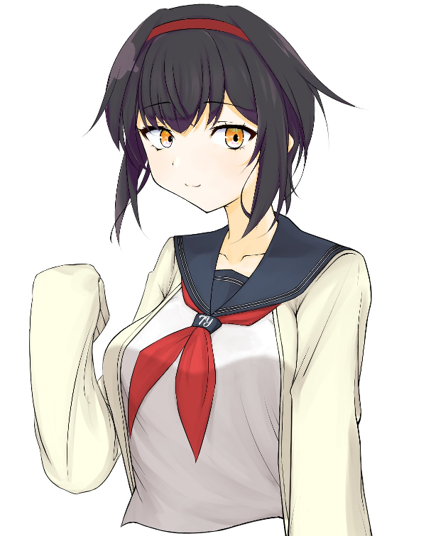

メインログ / 雑談ログ
キャラシート
PC1：涼風紗雪 (キャラシート) PL：めい目次
■プリプレイHO&PC紹介
■オープニングフェイズ
01 断罪のウェアウルフ
02 いつかのであい
■ミドルフェイズ
03 追走
04 かえしたくない
05 12回目のハッピーバースデー
06 いつかのきおく
07 限界
08 準備
09 仮装
プリプレイ
HO&PC紹介
GM : セッションをはじめていく前に、まずはPCの紹介からはじめてもらおうと思います！ PLのめいめい、おねがいします！！
涼風 紗雪 : はーい！
■PC1：涼風紗雪
ロイス：犬養一夏 推奨感情：好奇心/不信感
カヴァー/ワークス：高校生/指定なし
あなたはY高校に通う高校二年生だ。
入学式の日、見知らぬ少女から「あたしの事、覚えてますか？」と尋ねられる。
当然ながら“覚えていない”という旨の返答をした後、その少女とは別れることになった――のだが、
何の因果か、その少女・犬養一夏とは、今後一年を通して親密な関係になっていくのだった。
涼風 紗雪 : 涼風紗雪！テニス部所属のスポーツ万能な高校二年生！とある大手総合スポーツ用品メーカーの社長令嬢です！
涼風 紗雪 : オーヴァードには幼い頃に焼死したことがきっかけで覚醒しました。
涼風 紗雪 : だけど運悪くUGNにもFHにも出会うことがなくて、レネゲイドの知識も無いまま一人だけで化け物になった自分と向き合うことになりました。
涼風 紗雪 : 当然衝動の制御もエフェクトの使い方も分からなくて、精神的に追い詰められていったのですが……
涼風 紗雪 : ある時、昔好きだった物語に出てくる白馬の王子様のことを思い出して、その王子様のように気高く生きれば自分の衝動に打ち勝てるかもしれないと思いつきました！
涼風 紗雪 : そんな感じの経緯で王子様みたいな立ち振る舞いをします！一人称僕っ娘です！体小さい女の子だけどひたすらかっこよくあろうとします！
涼風 紗雪 : その後は一年位前に初めてFHと遭遇して洗脳されたりするところだったけど、何とか振り切って自分の家族や周囲の人達を守るためにUGNのエージェントになりました。
涼風 紗雪 : あと遺産・祈りの造花の契約者で、戦闘になると衣装が変わる変身ヒロインみたいな感じになります！
涼風 紗雪 : シンドロームはサラマンダー/ブラックドッグの白兵型で炎神の怒りを使って攻撃も回避もこなすぞ！
涼風 紗雪 : そんな感じのスポーツ万能テニス部高校生王子様系お嬢様僕っ娘変身ヒロインUGNエージェントです、よろしくお願いします！
GM : ありがとうございました！
GM : レアな王子様系女子たすかる…！ 自殺を考えるほどの病みも乗り越えているとのことなので、病みヒロインにも対処できそうでよき…！！
涼風 紗雪 : 初めてやる気がする！需要あるみたいでよかった
涼風 紗雪 : どんな病みでもかかってこい！
GM : プリプレイで言質を取りました。
涼風 紗雪 : 言質扱いしてきた…！
GM : ではでは、PCの紹介が終わったところで、プリプレイは以上！ さっそくオープニングフェイズに移っていきます！！
涼風 紗雪 : わぁい、おねがいします！
メインプレイ
シーン1 断罪のウェアウルフ

ぼく : ぽたり。 ぽたり。 ぽたり。
ぼく :
しずくがこぼれおちて、足下の血だまりにのみこまれていく。
流れつづける“しずく”の正体は、血なのか涙なのか……もう、ぼくには分からなくなっていた。
ぼく : ■■■。 ■■■。 ■■■。
ぼく :
真っ白になったあたまに、だれかの声が流れ込んでくる。
けれど、ひどくしずかだと思った。
聞こえるのは、しずくの水音とだれかの音声だけ。 ……セミの鳴き声も、人間の泣き声も、右の耳から左の耳へと等しく抜けていく。
少女 : 「こ、この人でなし……！」
ぼく : あたりを支配していたしずけさを、少女の叫び声が破った。
ぼく : 「待……」
ぼく : ぼくは少女を引き留めるために声をあげた。 でも、何故だろう。 その先の言葉が続かなかった。
ぼく : そして、少女は震える足を引き摺って逃げ出した。
ぼく : ぼくには、それを見ていることしかできなかった。
ぼく : 「なんで」
ぼく : こんなことになってしまったんだろう。 そんなことを言っても、返ってくる答えなんてない。
ぼく : 身体じゅうの力が抜けていき、ぼくは血だまりにたおれこんだ。
ぼく : ──真っ白な思考と真っ赤な視界の間。 「人でなし」という少女の言葉だけが、いつまでも深く刺さって。
ぼく :
ぼくの意識は、真っ黒な深みに沈んでいった。
ぼく :
ぼく : ……あの“であい”さえなければ。
ぼく : ……あの“ねがい”さえなければ。
ぼく : 今頃、ぼくはラクになれていただろうか。
シーン2 いつかのであい
GM : せんぱい！ 登場おねがいします！！
涼風 紗雪 : せんぱい出ます！
涼風 紗雪 : 1d10+34(1D10+34) ＞ 6[6]+34 ＞ 40
涼風邸
GM : 4月1日。 天気は晴れ。
GM :
一週間ちょっとの春休みが終わり、今日は入学式の日だ。
久しぶりの制服に着替え、教科書等が抜けてスッカリ軽くなった学生カバンを肩にかける。
GM : 春の陽気の訪れはまだ遠く、外気温は10度あるかないかくらい。 ……式の間は手放さなければならないが、一応、アウターを手に取って準備完了。
GM : 暖房設備が充実した快適な家を抜け出し、差し込む朝日に目を細めながら玄関の扉を開く。
GM : すると、赤褐色の髪を二つ結びにしたセーラー服の少女が、向かいの塀に体を預けてスマホを弄っている姿が目に入ってきた。
狩野春香 : 「よっ、スズ。 久しぶり～……ってほどでもないか、春休み短かったし」
GM : あなたのことを“スズ”と愛称で呼び、小さく手を振るこの少女は、狩野 春香(カノ ハルカ)。 あなたとは幼稚園からの付き合いがある幼馴染だ。
GM : 二人は小学生まで同じ学校に通っていたが、中学生になると、あなたは親の方針で遠くの御嬢様学校に、春香は地元のY中学校に進学した。
GM : そのため、一時的に二人は離れ離れになっていたのだが、三年振りにY高校で再会を果たし……それ以来、こうして待ち合わせて、再び一緒に登校する運びとなったのだ。
涼風 紗雪 : 「やぁ、おはよう春香」
涼風 紗雪 : 「言われてみれば、確かにそうかもしれないね。二週間も無かった気がするし」
涼風 紗雪 : そう微笑みかけながら手を振り返して、春香ちゃんのもとまで歩いて行きます
GM : あなたは春香の傍まで歩いていこうとしたが、その前に、手で制止された。
狩野春香 : 「……今日は、さ。 伝えたいことがあってね？」
涼風 紗雪 : 「え？何かな」 少し驚きつつも立ち止まる
GM : 春香はゆっくり目を伏せると、あたかも深刻な話があるように切り出した。
狩野春香 : 「実は、私、彼氏できたの。 ――だから、明日からは迎えに来ない」
涼風 紗雪 : 「……！そうなんだ……！おめでとう、春香」
狩野春香 : 「……あ、あれ？ 驚かないの？ 彼氏できたんだよ？」
涼風 紗雪 : 「もちろん驚いてるよ。でも、先に言うべきことは祝福することだろ？」
狩野春香 : 「おおう、そんなマジに受け取られるとは……」
狩野春香 : 「スズさんやスズさんや」
狩野春香 : 「今日は何月何日か、言ってごらんなさい？」
狩野春香 : 急に口調が老婆になったり、御嬢様になったりしながら、春香はそういって笑った。
涼風 紗雪 : 「今日？えーと、何日だったかな……」
涼風 紗雪 : スマホを取り出して日付を確認してみて、
涼風 紗雪 : 「……四月一日だね」
狩野春香 : 「へへっ」
狩野春香 : 「おわかりいただけただろうか……(低温)」
狩野春香 : 「彼氏ができたなんて、口から出任せ…！ 折角だからついてみたエイプリルフールのウソだったのでした…！！」
涼風 紗雪 : 「もう、すっかり騙されたよ……！やるね、春香」 面白そうに小さく笑って
涼風 紗雪 : 「だけどいいの？エイプリルフールについた嘘って、確か叶わなくなるんじゃなかったっけ」
狩野春香 : 「ぇ…………」
狩野春香 : 「あ、あはは～！ そ、それは日本で最近できたマイナールールというヤツだよスズちゃん！」
狩野春香 : 「ちなみに“ウソをついていいのは午前だけ”というのも、イギリス(?)の別行事から伝わって誤解された日本のマイナールールらしいよ？ だから、大丈夫……大丈夫……」
涼風 紗雪 : 「ここ、日本だけどね。でも、別に良いじゃないか叶わなくたって」
涼風 紗雪 : 「祝いはしたけど、もう迎えに来れないって言われて実はちょっと寂しかったんだ」
涼風 紗雪 : 「春香に彼氏が出来なければ、これからも一緒に登校出来るってわけだしね」
涼風 紗雪 : そんな風に冗談っぽく笑いながら改めて春香ちゃんの傍まで歩いていく
狩野春香 : 「うう、叶わないなんて嫌だぁ……。 入学前に夢見ないこともなかった甘酸っぱい青春の日々を送るんだ、私はぁ……。 い、今はムリだけどぉ……」
GM : 春香はわざとらしく目元を拭う仕草をすると、あなたに笑い返した。
狩野春香 : 「……そういえば、スズには恋人とかいないの？ そういう噂を聞いたことはないけど、実はいるんでしょ？ っていうか、いない方がありえなくない？」
涼風 紗雪 : 「ふふっ……え？僕に恋人？いや、本当にいないよ」
涼風 紗雪 : 「そもそも、これまでだって誰とも付き合ったことないしね」
狩野春香 : 「えっ！？ いない！？ マジで言ってる？？？？ 」
狩野春香 : 「ん～～、考えてみれば、確かに……？ いたら私と一緒に登校してないか……？」
涼風 紗雪 : 「だろ？……何て言うか、告白されたりはあったけど、まだ誰ともそういう関係になりたいと思えないんだよ」
涼風 紗雪 : 「僕自身がまだ理想の王子様とは程遠いし。やっぱり今は恋人を作る気はないかなぁ」
狩野春香 : 「ふうん…？ でもさ、スズ、それっていつになったら恋愛できるようになるの？ 自分の能力に付き合うハードル付けてるのスズくらいだよ？」
涼風 紗雪 : 「いつだろうね……でもきっといつかは来るよ。毎日ちゃんと前進してるからね」
涼風 紗雪 : 「心配かけてごめんね。でももしそのいつかが来て、恋人が出来たら、一番に春香に報告するから気長に待ってて欲しいな」
狩野春香 : 「おっ、期待して待ってますぜい姉御！」
狩野春香 : 「(でも、スズのことが好きな子、苦労しそうだな～……)」
涼風 紗雪 : 「ふふっ、期待しててくれよ。……じゃ、そろそろ行こうか？歩きながらでもお話は出来るしね」
狩野春香 : 「ん。 そうだね」
GM : 話がひと段落ついたところで、エイプリルフールのウソもほどほどにして、二人は歩き出した。
Y市 通学路
狩野春香 : 「あっ、そうだ！ 聞いてくれる？ 春休みにさ、数人でお泊り会したんだけどさ？」
涼風 紗雪 : 「うん？そうなんだ。いいね、お泊り会」 歩きながら聞く姿勢
狩野春香 : 「いいでしょ！ 今度、スズもお泊り会しようよ、部活とかない日にさ」
涼風 紗雪 : 「良いの？もちろん、春香や他の皆がよければ参加したいな……！」
涼風 紗雪 : 「僕の家に泊まりに来てくれるのも、誰かの家に泊まりに行くのもどっちでも楽しそうだ」
狩野春香 : 「スズの家に泊まりに行くのは流石に恐縮しちゃうんじゃないかなあ…。 スズ、高嶺の花みたいな印象持たれがちだから」
狩野春香 : 「スズに興味がある子って結構多いし、あとで私の方でセッティングしとくね」
狩野春香 : 「……と、何話そうとしてたんだっけ。 ああ、そうだ、春休みのお泊り会」
涼風 紗雪 : 「高嶺の花なんて自分では思ってはないけど、楽しみだな……。あっ、そうだね、何か面白いことでもあったの？」
狩野春香 : 「面白い事？ なのかな……？ それは微妙だけど、ず～～～っっっと彼氏とビデオ通話してる子がいてさあ？」
狩野春香 : 「……ああ、プライバシーのために名前は伏せさせてね。 ……と言っても、見れば誰かわかると思うけど」
GM : 春香は取って付けたようにそう付け加え、また見知らぬカップルに話を戻す。
狩野春香 : 「バレンタインきっかけで付き合いだしたらしいんだけど、もうラブラブ見せつけてくれちゃってさ～……」
涼風 紗雪 : 「はぁ～……なるほど」 相槌
狩野春香 : 「あっ、でも、それがイヤだったから愚痴ってる訳じゃないよ？ ……むしろ、な～んかうらやましいな～なんて」
涼風 紗雪 : 「あぁ、それならよかったよ……！嫌な気持ちになっちゃったのかなって心配しちゃった」
狩野春香 : 「まあ、友達との時間なんだし、そこにまで彼氏を持ち込むのはよくないとは思ったけど」
狩野春香 : 「恋は盲目って言うの？ その人の存在が大きすぎて、他が目に入らなくなってるカンジで……めっちゃ幸せそうだな～って」
涼風 紗雪 : 「そっか……僕にはあんまり羨ましいとかは分からないけど、幸せそうなのを間近で見たらそうなるのも不思議じゃないね……」
涼風 紗雪 : 「……よっぽど彼氏欲しいんだね、春香」
狩野春香 : 「えっ！？ あ～～～～…………」
狩野春香 : 「そう見えます…………？」
涼風 紗雪 : 「うん、凄く」 何度も頷く
狩野春香 : 「ぐっ……」
狩野春香 : 「……そ、それは、もうっ！ 欲しいでしょッ！ 私だって彼氏欲しい！！！！ 一度きりの青春というやつを謳歌したいし！！！！ わ、悪いかこんにゃろ～！！！！」
涼風 紗雪 : 「ご、ごめんごめん……！誰も悪いとは思ってないからさ！だから落ち着いて欲しいな、春香さんや……！」 春香ちゃんの真似するような呼び方してる
狩野春香 : 「こ、告白される側の人種が、バカにして～～～～！！ もうっ！！ なんでこんな恥ずかしいことを路上で叫ばなきゃいけないのかっ……！！」
狩野春香 : 「はあ……」
涼風 紗雪 : 「……大丈夫だよ。そんなに焦らなくても、春香にはきっと素敵な恋人が出来るはずだから」
狩野春香 : 「めっちゃ無責任なこと言うじゃん……」
涼風 紗雪 : 「そんなことないよ。だって春香は優しいし、明るいし、話してて楽しいし、その他にも言い切れないくらい良いところがいっぱいあるし……」
涼風 紗雪 : 「本当に素敵な人だと思ってるから。だから大丈夫だよ、幼馴染として保証する」 微笑みかけて
狩野春香 : 「……ん。 ちょっと元気出た」
狩野春香 : 「なぜなら、そこまで言うからには、引き取り手が見つからなかった場合の補償責任がスズ側に生まれるからです……」
涼風 紗雪 : 「え、僕に？ 見つからないなんて思ってないけど、その時は僕が付き合えばいいのかな？」
狩野春香 : 「いやいや、ぜんぶ冗談ですから！ でも、ありがとね！！」
狩野春香 : 「スズが男子だったら本気で頼んだかもしれな……いや、ないわ。 自分には釣り合わないみたいなこと言われてフラれて終わりだわ」
涼風 紗雪 : 「いやいや、流石にそこまで行ったら僕も責任取ってフラないよ……！」
狩野春香 : 「ええ……？ ホントにござるか～……？」
涼風 紗雪 : 「ほんとうっ。って、冗談だっけ」 春香ちゃんの口調にくすくす笑いながら
狩野春香 : 「そうそう、冗談冗談。 エイプリルフールですから」
狩野春香 : 「いや、彼氏欲しいのはホントだけど……」ぼそっ
狩野春香 : 「とにかく、三年になったらもう受験とかで忙しくなるだろうし、この一年が青春を謳歌するラストチャンスなんですよ……！！」
狩野春香 : 「おたがいにがんばっていこうではありませんか……」
涼風 紗雪 : 「そうだね……うん、分かった。頑張るよ」
涼風 紗雪 : 「まずは僕自身が文句のないくらい、立派な王子様にならなきゃね……！」 瞳をキラキラ輝かせながら小さく握り拳をつくる
狩野春香 : 「その調子ですぞ、王子！」
GM : 爺やのつもりなのか、低い声でそういった。
涼風 紗雪 : 「あぁ。見ててくれ、爺や……！ ふふっ」 ノッてそう言ってから、楽しそうに笑う
狩野春香 : 「がんばると決めたからには、自己研鑽はもちろん、“彼氏ほしい～”とか“彼女ほしい～”とか、そんな“誰でもいい”みたいなスタンスじゃなくて、盲目になるくらい好きになれる人を探すことも目標にしていきますぞッ……！！」
涼風 紗雪 : 「うん、頑張れ頑張れ……！一途なのは良いことだし、応援してるよ」
Y高校
GM : 周囲の影響なのか、恋愛脳に染まりつつある幼馴染と他愛のない話を交わしながら、十五分ほど歩いたところでY高校の校庭に着いた。
GM : 玄関前にはクラス分け表が貼り出されており、各学年の生徒たちが、それぞれ三つの塊になって集まっている。
狩野春香 : 「……と、春らしい話題に花咲かせていたら着いちゃった」
涼風 紗雪 : 「あっという間だったね。僕達もクラス見に行こうか」
GM :
あなたと春香が属する二年生のクラス分け表の前には、無数の女子が集まっていた。
友達連れで見に来たグループが多いらしく、後ろからのクラス確認はとてもできそうにない密度だ。
狩野春香 : 「去年もこんなカンジだったっけ。 ……う～ん、二人で行っても効率悪そうだし、スズの分も見せてもらってくるね」
涼風 紗雪 : 「いいのかい？僕が行こうかと思ったけど……じゃあ、お願いするよ」
狩野春香 : 「おまかせされました！ あれっ、友達のために率先して体張るとか、私、優しすぎ……？ モテ期きちゃうかコレ……？」
GM : 春香は冗談交じりの自画自賛をした後、“すぐ戻ってくるから待ってて”と手を振りながら人混みに飛び込んでいった。
涼風 紗雪 : 「春香は優しいよ。気を付けてねー」 手を振って見送って
涼風 紗雪 : 「……新しい人と会うのは楽しいけど、春香とは今年も一緒のクラスだったら良いな」
涼風 紗雪 : そう呟いて、人ごみの方を見つめながら春香ちゃんが帰って来るのを待とう。
GM :
GM : ――それから数分後。
GM : あんなことを言っていた幼馴染が、その場にいた女子グループに加わって話しだしたのが遠目にも見えた頃。
見知らぬ少女 : 「えっ……？ せん、ぱい……？」
GM : あなたのすぐ後ろから、弱弱しい鳴き声のような少女の声が聞こえた。
涼風 紗雪 : 「……？」 誰だろう、と後ろを振り返る
GM : 振り向くと、声の主は“信じられない”と言いたげな視線をあなたに向けていた。
GM : 遅刻しそうだったからか、いくらか寝癖で乱れてしまっている深い黒のショートヘア。
GM : サイズを間違えたからか、手がすっぽりと覆われるほどゆるゆるのカーディガン。
見知らぬ少女 : 「えっと、その……あたしのこと、覚えてますか？」
GM : ――少し抜けているところがあるような印象を抱かせる、この少女。
GM : 真新しい制服に身を包んでいること、そして「せんぱい」と呼んできたことから考えれば、おそらく新入生なのだろう。
GM : しかし、あなたには、このように射抜くようなあつい視線を向けてくる後輩がいた覚えはないし、その姿にも見覚えはなかった。
涼風 紗雪 : 「……えっ、と」
涼風 紗雪 : そんな風に言われるということは知り合いのはずだと、じーっと顔をよく見て思い出そうとする。
涼風 紗雪 : 「…………」
涼風 紗雪 : 「……ごめん、思い出せない。どこかで会ったかな……？」 申し訳なさそうに
見知らぬ少女 : 「そうですか……」
GM : 少女は俯きながらも口元には小さく笑みを浮かべていた。
GM : ……何故だろうか。 その姿にはうっすらとした既視感があった。
GM : けれど、いくら記憶を探ったところで誰かの名前が浮かんでくることはなかった。
涼風 紗雪 : 「（どこかで見たような気はするんだけど……。何でだろう……）」
涼風 紗雪 : 「本当にごめんね。よければ君の名前を教えてもらってもいいかな？」
見知らぬ少女 :
「あたしは、
GM : やはり、あなたは、その名前にも覚えはなかった。
涼風 紗雪 : 「（……駄目だ、覚えてない。名前を聞けば思い出せるかもしれないと思ったんだけど……）」
涼風 紗雪 : 「犬養一夏……一夏ちゃんって呼んでもいいかな？」
犬養 一夏 : 「はい、もちろん」
涼風 紗雪 : 「ありがとう、一夏ちゃん。僕の名前は……って、もしかしてもう知ってるのかな？」
犬養 一夏 : 「いえ、教えてもらえるとうれしいです」
涼風 紗雪 : 「分かった。僕は涼風紗雪、っていうんだ。よろしくね、一夏ちゃん」
犬養 一夏 : 「……涼風紗雪」
犬養 一夏 : 「……あっ、はい！ よろしくおねがいしますね、せんぱい！ 」
犬養 一夏 : 「……ああ、せんぱい！ さっき聞いたことは、どうか忘れてください！ 単なる人違い、だったみたいですから……」
涼風 紗雪 : 「え……そうなの？本当に？」
犬養 一夏 : 「はい！ こんな朝からヘンなこと聞いちゃってごめんなさい……！」
涼風 紗雪 : 「ううん、気にしないで……！変なことなんて全然思ってないから」
涼風 紗雪 : 「むしろ、入学式前から君みたいな素敵な一年生さんと出会えて嬉しいよ」 口元に笑みを浮かべる
犬養 一夏 : 「…………」
犬養 一夏 : 「あたしも、うれしいです」
GM : 一夏はそう言って笑ったが、その笑顔には、どこか翳りがあるように見えた。
犬養 一夏 : 「……あっ！ ごめんなさい！ もうこんな時間！！ あたし、行かないとっ！ さようなら！！」
GM : 一夏は深々と腰を折って頭を下げると、そそっかしく小走りでその場を後にした。
涼風 紗雪 : 「……うん！気を付けてね」 手を小さく振って見送る
涼風 紗雪 : 「礼儀正しくて、良い子だな……。でも、なんか……」 翳りのあるような笑顔が頭から離れない
涼風 紗雪 : 「……やっぱり、どこかで会ってたのか……？でも、あの子は人違いだって言ってるし……しつこく問いただすのも……」
涼風 紗雪 : うーん、うーん……と唸りながら春香ちゃんが来るまでずっと悩んでる。
GM : そうして悩んでいると、ナゾの後輩と入れ替わるように春香が帰ってきた。
狩野春香 : 「……？ あの子、知り合い？ 新入生っぽかったけど」
涼風 紗雪 : 「春香、おかえり……。いや、知り合いではない……みたい……なんだけど……」 腕組をしながら頭が傾いていってる
狩野春香 : 「な～んだ。 かわいい後輩見つけて、さっそく粉かけてたのかとも思ったけど、そうでもないっぽいね～」
涼風 紗雪 : 「僕のことなんだと思ってるのさ。かわいい子だったのはそうだけど」
狩野春香 : 「冗談冗談。 さっき、自分のレベルが一定にならないと恋人作らないって言ってたばっかだもんね」
涼風 紗雪 : 「うん……今まさに自分のレベルが低いことを実感したよ……記憶力をもっと鍛えなくちゃね……」 真面目な声色で
狩野春香 : 「ん？ 知り合いではなかったんじゃないの？ なんで記憶力？」
涼風 紗雪 : 「そうなんだけど、どこかで見たような子だった気がするんだ」
涼風 紗雪 : 「あの子は人違いだったとは言ってたんだけどね……」
狩野春香 : 「ふ～む、サスペンス？」
狩野春香 : 「高校デビューで見た目変わったとか……はないか！ 髪染まっててとかメイクしてて分かんないとかならあるだろうけど、あの子は校則通りの見た目だったし」
涼風 紗雪 : 「その可能性は……うーん……。いや、考えても分からないか」
涼風 紗雪 : 「そうだ、クラス表はどうだったの？」
狩野春香 : 「あっ、そうだったそうだった。 私たちは引き続きA組！ 一緒のクラスだったよ！！ やったね！！」
涼風 紗雪 : 「本当！？わぁ……嬉しいよ！また一年間よろしくね、春香！」 思わず笑顔になって春香ちゃんの両手を握っちゃう
狩野春香 : 「わわっと！？ オタクはボディタッチに慣れてないので、急にされるとビックリしちゃうぞ！？」
GM : 春香は両手を握られただけで、なぜか頬を少し染めていた。
涼風 紗雪 : 「あははっ！ごめんごめん、つい……！」 手を離す
狩野春香 : 「おそろしー女……(跡部様の声マネ)」
涼風 紗雪 : 「恐ろしくなんかないって。じゃあ、教室まで行こうか！」
狩野春香 : 「そうだね……っと、そういえば」
狩野春香 : 「今日は部活ないけど、髪ゴム持ってきてる？」
涼風 紗雪 : 「髪ゴム？一応持ってきてるけど、どうして？」
狩野春香 : 「ほら、校則。 いつもは何も言われないけど、ホントは肩についちゃダメじゃん髪？」
狩野春香 : 「式とかある日だけはうるさいから、ちゃんと結っといた方がいいよ？」
涼風 紗雪 : 「あ、そっか。ありがとう、春香」
狩野春香 : 「どういたしまして……ってお礼言われるほどの事じゃないけど」
涼風 紗雪 : 「初日から校則違反なんて、王子様じゃなくなるとこだったよ」
涼風 紗雪 : そう言いながらポケットから取り出したゴムでちゃちゃっと後ろ結んじゃおう。
涼風 紗雪 : 「これで大丈夫かな」
狩野春香 : 「お～、やっぱ似合うね～ポニテ」
涼風 紗雪 : 「ありがとう。よし、準備万端っ」 嬉しそうに笑って
狩野春香 : 「うん、じゃあいこっか。 たしか教室に行ったあと、椅子を持って体育館に……」
GM :
GM : その後、入学式はこれといった異常もなく進行していった。
GM : それより気にかかるのは、あなたを「せんぱい」と呼んだナゾの少女のことだ。
GM : 彼女の真意はまったくもってわからない──今は、まだ。
涼風 紗雪 : 春香ちゃんにロイス取ります！〇友情/食傷で！
涼風 紗雪 : 一夏ちゃんのロイス感情は、〇好奇心/無関心にします！
system : [ 涼風紗雪 ] ロイス : 3 → 4
シーン3 追走
GM : せんぱい！ 登場おねがいします！！
涼風 紗雪 : 1d10+40(1D10+40) ＞ 6[6]+40 ＞ 46
Y高校 テニスコート
GM : 5月9日。 天気は曇り。
GM : テニス部に所属しているあなたは、この日の放課後も部活に励んでいた。
GM : 今さっき、5kmのランニングを終えたところだ。
GM : ──Y高校テニス部では、この5kmランニングが毎日行なわれている。 これは他の運動部と比べても相当の運動量だ。
GM : というのも、テニスというスポーツは優雅なイメージを抱かれがちではあるが、実際には凄まじい体力を要求されるスポーツ。 例えば、トップクラスの女子選手の場合は、3セットで約50kmの距離を走るとも言われている。
GM : 以上の事実から、Y高校テニス部では、基礎体力を作るランニング等を重視したキツめの練習メニューが組まれているのだった。
GM : ──クールダウンも兼ねて、Y高校グラウンド脇にあるテニスコートまでジョギングしていって、10分間の休憩に移る。
GM : 高校から運動部に入ったような基礎体力がない後輩部員たちは、テニスコートに着いた瞬間、ぐったりとへたりこんでしまった。
GM : 一方、あなたはオーヴァード。 無能力者の他部員達にはしんどいトレーニングでも、あなたにとってはいい汗をかく程度の丁度いいものだった。
犬養 一夏 : 「おつかれさまです、せんぱい！」
GM : ひとりの女子マネージャーがあなたに駆け寄って、タオルとスポーツドリンクを渡してくる。
GM : そのマネージャーは、入学式の朝に出会ったあの少女……犬養一夏だった。 あの後、一夏はマネージャーとしてテニス部に入ってきたのである。
GM : 一夏については、まだまだ知らないことも多いが、部活だけの付き合いとはいえ、1ヵ月も一緒に過ごしていると分かってきたこともまた多かった。
GM : まず、一夏は1年生の間で“いつも明るく人懐っこく友達が多いムードメーカー”として知られているらしい。
GM : 実際、テニス部でも“愛されキャラ”として先輩たちに可愛がられている姿を目にすることが度々ある。
GM : 少し抜けているところがあったり、身だしなみに無頓着だったり、異性に興味がなかったりするところも、イマドキのJKらしくなくて逆にいいのだとか。
GM : 次に、“裏表がない”という話も聞いたが、それが真実かどうかは疑わしかった。
GM : 何故なら、入学式の日、一夏はあなたに何かを隠していた……単なる直感に過ぎないが、そんな気がしたからだ。
涼風 紗雪 : 「ありがとう、一夏ちゃん。いつも助かるよ」 笑顔で受け取って、タオルで汗を拭こう
犬養 一夏 : 「いえいえ！ お礼なら先輩マネージャーの方々に言ってあげてください！ あたしがしたことなんて、スポーツドリンク作ったくらいで、タオルの洗濯とか諸々の調整とか、ほぼ先輩方がやってるんですから…！」
涼風 紗雪 : 「そう？ でもスポーツドリンクを作るのも立派な仕事だし……」 と、ドリンクに口をつけて乾いた喉を潤して
涼風 紗雪 : 「……うん、それにすっごく美味しいし！ だから一夏ちゃんにもお礼言わせてよ」
犬養 一夏 : 「ええ…？ スポーツドリンクの素をまぜて、氷を入れただけなのに、美味しいって褒められるのは、それはそれで微妙な気持ちですよ…？」
GM : 一夏はそう言って、からかうように笑った。
涼風 紗雪 : 「ふふっ……まあいいじゃないか。とにかく他のマネージャーも含めて、君にも感謝してるってこと」 ドリンクの蓋を閉めて
涼風 紗雪 : 「それに、混ぜるだけって言ってもそれすらまともに出来なかった人もいるからね……例えば僕とか」
犬養 一夏 : 「ええ…？ ええっ！？！？」
涼風 紗雪 : 「僕、そういうご飯だったり飲み物だったりを作るの全然やったことなくてさ……今はまだましになった方だけど……」
涼風 紗雪 : 「昔一度、ドリンク作るの手伝ってみたら色々大変なことになったりしたよ」 照れるように笑いながら
犬養 一夏 : 「せんぱいにこう言うのはどうかと思いますが……」
犬養 一夏 : 「本当に底抜けに料理下手な人っているんですね……」
犬養 一夏 : 「ああ、いえ…！ せんぱいの場合は経験のなさですし、仕方ないところもあると思いますけどね…！」
涼風 紗雪 : 「いや、本当に下手だからいいんだよ。特に必要なかったからって甘えてたところもあったし」
涼風 紗雪 : 「やっぱりもうちょっと練習した方がいいかもね……よく考えたらおにぎりくらいしか作れない王子様っていうのもかっこわるいや」
犬養 一夏 : 「王子様、ですか……？」
涼風 紗雪 : 「ん？あぁ、うん。僕、王子様みたいになりたいんだ」 特に恥ずかしげも無い風に
犬養 一夏 : 「えっ？ 王子様みたいになりたい？ それってどういう意味ですか……？」
涼風 紗雪 : 「ほら、御伽噺とかに出てくるような、白馬に乗った王子様っているでしょ？」
涼風 紗雪 : 「僕はそういうかっこいい王子様みたいな、強くて優しくて美しい、気高い生き方がしたいんだよ」
犬養 一夏 : 「気高い生き方、ですか……」
GM : 一夏はすこし驚いたような表情を見せた後、
犬養 一夏 : 「ふふっ、やっぱりせんぱいって変わってるんですね」
犬養 一夏 : そう言って、なぜかうれしそうに笑った。
涼風 紗雪 : 「うん、よく言われるよ」 つられて笑みを零す
犬養 一夏 : 「……あたしは好きですよ。 せんぱいのそういうところ」
涼風 紗雪 : 「本当？ 変だとかよく分からないって言われるのはよくあるけど……」
涼風 紗雪 : 「好きって言われるのは初めてかも。なんだか嬉しいよ」
犬養 一夏 : 「んーと、それならよかったです？」
犬養 一夏 : 「……でも、せんぱい。 その生き方ってきっとつらいですよ」
涼風 紗雪 : 「え……？どうしてそう思うの？」
犬養 一夏 : 「…………」
犬養 一夏 : 「なんででしょうね？ 言ってみただけです！！」
涼風 紗雪 : 「えぇ～？そんなの気になるじゃないか、教えてよ～」
涼風 紗雪 : 冗談っぽく笑いながら、小さく拳を作って一夏ちゃんの肩をぽんぽんと優しく叩く。
GM : 一夏は「あはは、やめてくださいよ～」と笑いながら、あなたの手を振り払う。 周囲には笑いあってじゃれているように見えただろうが、あなたにはこの笑顔が作り物のように見えて仕方なかった。
涼風 紗雪 : 「（……何だろうな、この感じ）」 胸の中が少し不安になる
犬養 一夏 : 「ねえ、せんぱい？」
GM : 一夏はあなたの気持ちを察したかのように、瞳を覗き込んできた。
涼風 紗雪 : 「うん……？ どうしたんだい……？」
犬養 一夏 : 「あの、せんぱいって帰りは歩きですよね？」
犬養 一夏 : 「ほら、駅とは別方向に歩いていくのを見ますし」
涼風 紗雪 : 「え？……あぁ、そうだよ！僕の家、学校から近いから歩いて通ってるんだ」 胸の奥に浮かんだ不安をしまい込み、一夏ちゃんの瞳を見つめ返す
犬養 一夏 : 「ですよね！ よかった！ ……あっ、それでですねっ」
犬養 一夏 : 「せんぱいさえよければ、なんですけど！ 今日はあたしと一緒に帰りませんか……？」
涼風 紗雪 : 「おや……一夏ちゃんからそんな風にお誘いされるなんてね」
涼風 紗雪 : 「もちろん構わないよ、それじゃあ一緒に帰ろうかっ」 嬉しそうに微笑む
犬養 一夏 : 「ホントですか？ じゃあ、帰りは校門のあたりで待ってますね？ すっぽかしたりしないでくださいよ～？」
涼風 紗雪 : 「本当。そんなうっかり忘れるなんてしないから、安心してよ」
涼風 紗雪 : 「部活が終わったらシャワー浴びたりしなきゃいけないけど、そう長くは待たせないからさ」
犬養 一夏 : 「あ～～～～、あたしと違って髪が長いせんぱいだと、乾かすのに時間かかりそうですし、待てるかどうか……」
犬養 一夏 : 「なんてことはないので、ちゃんと待ってますよ～！」
GM : そんな話をしていると、部長から号令がかかった。 休憩時間が終わったらしい。
涼風 紗雪 : 「もう！君から誘ったのに逆にすっぽかすなんてそれこそどんな冗談……っと、そろそろ時間みたいだね」 部長の方に顔を向ける
犬養 一夏 : 「ですね！ 練習、がんばってください！！」
涼風 紗雪 : 「うん、がんばるよ！」
涼風 紗雪 : 笑顔で手をひらひらと振ってそう応え、小走りで駆けていく。
GM : そうして部員たちと合流すると、部長の指示の下、テニスコートでの練習を再開する。
GM : その内容はボレー練習やサーブレシーブ練習といった基本的なものだった。
GM : 主に1年部員たちが基本の動きを身に着けるために実施されたものではあったが、他の部員たちにとっても基本が重要なのは言うまでもない。
GM :
GM : ──おそらくは後輩部員たちにいいところを見せようとしている3年生部員たちの全力のサーブに相対していると、いつの間にか日が暮れはじめていた。
GM : グラウンド側に設置されている体育館側面の時計を見ると、6時を回ってしまっている。 学校が閉まるのが6時30分なので、もう片付けをはじめなければならない時間だ。
GM : 部長の指示の下、全員で手分けして片付けを済ませる。
犬養 一夏 : 「じゃあ、校門の近くで待ってますね…！」
GM : 一夏はテニスボールの入ったカゴを抱えながら、あなたの耳元で囁いた。
GM : そして、そのカゴを元々あった場所に戻すと、他部員たちの片付けが終わったのを確認した後、
GM : 「おつかれさまです～！ 先に失礼しますねっ！」と他部員たちに向かって愛想よく笑いながら一礼をして、校門に向かって歩いて行った。
GM : あなたはいちど部室に戻ると、軽くシャワーを浴び、ぱぱっと身支度を済ませて校門に急いだ。
Y高校 校門前
2年A組のバスケ部男子 : 「てか、オレのクラス、学年美人ランキングTOP10の内、6人もいるんだぜ？ ヤバくね？ つかヤバいわ！ マジヤバだわ！」
2年B組のバスケ部男子 : 「うらやましィ～、オレのクラスには美人とか1人もいないわ～」
2年C組のバスケ部男子 : 「いやいや、そもそも、美人ランキングに入ってる女子からしたら、オマエなんてアウトオブ眼中だろw」
2年B組のバスケ部男子 : 「あっ、たっつんひっで～～～～！！ 」
GM : あなたは、下駄箱の近くで話しているバスケ部男子たちの脇を抜けて、校門に向かう。 そして、待っているハズの一夏を探した。
犬養 一夏 : 「あっ、せんぱい！」
GM : 一夏は人気のないところに佇んでいたようだが、あなたの姿を認めると笑顔で駆け寄ってきた。
涼風 紗雪 : 「お待たせ、一夏ちゃん」 駆け寄る一夏ちゃんを笑顔で迎える
犬養 一夏 : 「いえ、全然待ってない……と言うと噓になるかもしれません」
涼風 紗雪 : 「あはは、ごめんね。結構急いだんだけど、やっぱり髪が長くって」 銀色の長髪を手ですくいながら困った風に笑う
犬養 一夏 : 「あっ、もちろん冗談ですよ？ せんぱいの髪、キレイで長くて、うらやましいくらいです！ 大事にしてくださいね！」
犬養 一夏 : 「っとちょっとヘンな事いいましたかね？ あたしらしくないというか～」
犬養 一夏 : 「今まではひとりで帰ってたので、けっこう寂しかったんですけど、今日はせんぱいと一緒に帰れてテンションが上がってるみたいでして～……」
涼風 紗雪 : 「ふふっ……変だなんて思ってないよ。僕も帰りはいつも一人だから、ちょっとテンション上がってるかも」
犬養 一夏 : 「せんぱいも、ですか？ ……えへへ。だったらちょっとうれしいです」
涼風 紗雪 : 「うん、一緒だね。それじゃ帰ろうか、一夏ちゃんっ」 校門の外へと歩き出していこう
犬養 一夏 : 「はい…！」
Y市 通学路
GM : そうして二人は帰路についた。 しばらく歩くと周りには誰もいなくなって、二人きりになる。
犬養 一夏 : 「…………」
GM : あなたと二人きりになった時の一夏は、周りが言う“いつも明るい”という印象とは違って、どこか影があって、なぜかよそよそしいところがたまにある気がした。
GM : 何を話すか迷っているようで、あたりをぼんやりと見回している。
GM : そうして辺りの街並みに目を向けると、主にブティックなどに貼ってある「母の日フェア」の広告が目についた。
犬養 一夏 : 「あ、今日って母の日なんですね」
涼風 紗雪 : 「本当だ、そういえば今日って九日だったね」
涼風 紗雪 : 「お母様に何か買って帰ろうかな……」 広告を眺めて
犬養 一夏 : 「毎年、せんぱいは母親にプレゼントとかしてるんですか？」
涼風 紗雪 : 「うん。といっても、ささやかなものだけどね」
犬養 一夏 : 「ふうん……」
涼風 紗雪 : 「やっぱり、今年もカーネーションがいいかな……一夏ちゃんはプレゼントしないの？」
犬養 一夏 : 「あたしですか？ ……あたしはアパート住みですし、母親はずっとずっと遠くにいるのでいいんです」
涼風 紗雪 : 「そうなんだ、遠くに……って、もしかして一人暮らし？」
犬養 一夏 : 「ああ、言ってませんでしたっけ！ そうですよ？」
涼風 紗雪 : 「うん、初めて聞いたよ！凄いな……！」
犬養 一夏 : 「確かに、せんぱいではムリかもしれないですね、一人暮らし！」
GM : 一夏はからかうように笑った。
涼風 紗雪 : 「料理が出来ないから！？そ、それはそうかもしれないけど……！」
犬養 一夏 : 「いえ、聞いた限りでは、他のこともできるか怪しい気がしますよ～？」
涼風 紗雪 : 「う、うーん……」 若干悩んで
涼風 紗雪 : 「いや、他の家事は大丈夫……だと思うよ、多分ね……」 怪しそうな顔
犬養 一夏 : 「こ、これはぜったいダメなヤツだっ……！！」
涼風 紗雪 : 「そんなことないって！ほら、掃除くらいなら学校でもするからこなせるし！」
犬養 一夏 : 「学校ですることしか自信ないんですね……。 じゃあ、洗濯全般ダメじゃないですか……？」
涼風 紗雪 : 「洗濯か……いや、洗濯って自分でやる家事の内に入らないんじゃないかな？」
犬養 一夏 : 「まあ、洗濯機ありますしね……。 さすがに皿洗いとか風呂掃除とかはできるでしょうし……」
犬養 一夏 : 「さすがに、せんぱいを甘く見過ぎましたね……」
涼風 紗雪 : 「いや、洗濯機というかクリーニングに出すというか……。皿洗いとかもハウスキーパーの仕事のような気がするんだけど……」
犬養 一夏 : 「は……？」
犬養 一夏 : 「せんぱい、マジで言ってます？ 」
涼風 紗雪 : 「え、マジも何も普通に話してると思うんだけど……」
犬養 一夏 : 「あの、ですね……せんぱい……」
犬養 一夏 : 「服洗いも、皿洗いも、身の回りのことは、ぜんぶ自分でやるんです……」
涼風 紗雪 : 「なん……っ」
涼風 紗雪 : 「そ、そうなのか……？一人暮らしっていっても、そういうことは誰か雇ってしてもらうと思っていたんだけど……本当に……？」 目を丸くして
犬養 一夏 : 「それだと一人暮らしじゃないですし……。 フツウの人は、人を雇うほどのおかねを持っていないんですよ……」
涼風 紗雪 : 「…………」 口元を隠すように手を添えて、視線を左右に泳がせて
涼風 紗雪 : 「……そう……なのか……。知らなかったよ……。あんまりこういう話、したことなかったっていうか……」
涼風 紗雪 : 「いや、中学生の頃にしたことはあるんだけど……そういう感じじゃなかったからさ……」
涼風 紗雪 : 「結構びっくりしてる……」
犬養 一夏 : 「いやいやいや、あたしの方がびっくりしてますよ……」
犬養 一夏 : 「せんぱいに抱いていたイメージがひとつ壊れましたし……」
涼風 紗雪 : 「そうなのかい……！？何だか申し訳ない気分だよ……」
犬養 一夏 : 「大丈夫です。 むしろ」
犬養 一夏 : 「……いえ、なんでもないです」
涼風 紗雪 : 「そ、そう？」
涼風 紗雪 : 「（むしろ……何なんだろう？）」 気になったけど困惑してて聞く余裕はなかった
涼風 紗雪 : 「でも……そうか、すごく貴重な話が聞けたな」
涼風 紗雪 : 「皆が出来ることを僕が全く出来ないっていうのも駄目だし……今日はまず自分でお皿を洗ってみるよっ」
犬養 一夏 : 「ええ、そうするといいですよ」
GM : 10分ほど歩いたところで、一夏はゆっくりと立ち止まった。
犬養 一夏 : 「っと、ここでお別れですね…！ バイトの面接があるので、ここで失礼します！ また明日…！！」
涼風 紗雪 : 「これから？……分かった、頑張ってね一夏ちゃん」
涼風 紗雪 : 「また明日！」 笑顔で手を小さく振る
GM : 一夏は手を振りかえす。 そして、別の道を歩いていこうとした。
GM : しかし、一度振り返って、
犬養 一夏 : 「……あ」
犬養 一夏 : 「あの。せんぱいと、また一緒に帰っても、いいですか……？」
GM : 不安そうに、そう訊ねてきた。
涼風 紗雪 : 「うん、良いよ。また一緒に帰ろう！」
涼風 紗雪 : 「今日は一夏ちゃんと帰れて、ほんとに楽しかったよ」
涼風 紗雪 : 全く悩むことなく、声を弾ませてそう答える。
犬養 一夏 : 「……約束ですよ」
涼風 紗雪 : 「ん、約束だね。分かった、ちゃんと守るから」
犬養 一夏 : 「……はい」
GM : そうして一夏は小走りで去っていった。
涼風 紗雪 : 「じゃあ、明日は僕から誘おうかな。ふふっ、楽しみだ」
涼風 紗雪 : 「……そうだ、カーネーション買って帰らなきゃね」
涼風 紗雪 : 色々衝撃を受けてすっかり忘れていた母の日のことを思い出して、さっき見えた店の方へと寄り道してから帰ることにした。
GM : それから10分後、あなたは家についた。
GM : そして、いつも通りに門を開けて家に入ろうとした──その時、不意に背後から何者かの気配を感じた。
涼風 紗雪 : 「……？」
涼風 紗雪 : 誰かいる？と気になって振り返ってみる。
GM : 振り返った先には、誰もいなかった。 そして隠れる場所などもない。
涼風 紗雪 : 「……あれ？……気のせいかな」
涼風 紗雪 : 不思議そうにぱちぱちと瞬きした後、門を開けて帰宅しよう。
GM : その後は特に気配を感じることはなかった。 やはり気のせいだったのだろうか。
GM : 拭いきれない気持ち悪さを残したまま、あなたはベッドに身体を預けた。
犬養 一夏 : 「…………」
シーン4 かえしたくない
GM : せんぱい！ 登場おねがいします！！
涼風 紗雪 : 1d10+46(1D10+46) ＞ 7[7]+46 ＞ 53
Y高校 昇降口
GM : 6月12日。 天気は大雨。
GM : 5月9日以降、あなたと一夏は約束通りに2人で一緒に帰るようになっていた。
GM : そして、今日もいつも通りに一緒に帰る予定だったが、いつも通りではないことがふたつあった。
GM : ──ひとつ目は、あなたが一夏を待っていること。
GM : あなたが一夏を待っているのは、今日が初めてだ。 ……というのも、あなたには着替え等の時間があるので、これまでは必然的に待たせる側に立っていた。
GM :
しかし、今日は教室に忘れものをしてしまったらしい一夏を待っている。
思えば、幼馴染の春香と過ごしている時も、5分前行動を徹底している彼女を待つことはほぼないので、待つ側に立つのは久しぶりかもしれない。
GM : ──ふたつ目は、あなたは一夏の家に行って夕ごはんを御馳走になる予定だということ。
GM : いきなりどうしてそんな話になったのかを説明するには、まずは5月に一夏が受けていたアルバイトの面接結果から話す必要があるだろう。
GM : 一夏は面接に合格。 “フォーチュン・ハンター”というレストランで働くことになった。
GM : 一夏から聞いた限りでは、学生ということで“部活後に来てくれればいい”と融通を利かせてくれたイイ職場らしい。
GM : そして、肝心の夕ごはんを御馳走される経緯についてだが、
犬養 一夏 : 「フォーチュン・ハンターでは“夏のオリジナルメニューをスタッフが考える”って企画があって、採用されたスタッフにはボーナスが出るそうなんですっ！」
犬養 一夏 : 「あたしっ、なんとしてもボーナスが欲しいんです～！ せんぱいっ、試食係として協力してもらえませんか？」
GM : そんな訳で、あなたは家族に話を通した上で、一夏が考えたオリジナルメニューの試食係を引き受けることにした。
GM : その約束の日が今日という訳だ。
1年B組の女子1 : 「ってかさ、猫山……ちょっとアレじゃない……？」
1年B組の女子2 : 「いや、ちょっとって言うか、ふつーにめっちゃキモいじゃん？」
1年B組の女子一同 : 「それな～！！！！」
1年B組の女子3 : 「ね～！ 調子に乗ってるよね～！ まあ、根は悪い子じゃないんだけどね」
GM : ──じめじめとした女子たちの話し声を、ざあざあと打ちつける大粒の雨がかきけしていく。
GM : 天気予報通りに、梅雨──Y高校テニス部の士気がもっとも下がる時期──が今年も訪れたのだ。
GM : 当然ながら、雨の日はテニスコートが使えない。
GM : そして、テニスコートが使えない時は、練習メニューのほとんどが基礎トレーニングに切り替わる。 ……よって、梅雨の間のテニス部は、ラケットとボールを手放してトレーニング部同然の状態なのである。
GM : もしも「梅雨がうれしい」というテニス部員がいるなら、他の部活に入った方がいいだろう。 そのくらい梅雨は嫌われている。
犬養 一夏 : 「ごめんなさい、おまたせしました～……」
GM : 一夏は急いで靴を履き替えて、あなたの傍に駆け寄ると深い溜め息をついた。
犬養 一夏 : 「傘探してみたんですけど、なかったです……。 はぁ、今日から梅雨入りだったんですね～……」
涼風 紗雪 : 「あぁ、忘れ物って傘だったんだね」 時間つぶしに見ていたスマホからそちらに顔を向けて
涼風 紗雪 : 「じゃあ、どうしようか……。一夏ちゃんが良ければ、僕の傘に入る？」
涼風 紗雪 : そう言って手に下げてる青い傘を見せる。
犬養 一夏 : 「えっ？ せんぱいの傘に、あたしがですか…！？」
涼風 紗雪 : 「うん。もしかして嫌かな？」
犬養 一夏 : 「あっ、いえ、そんなことはないっ！ んですけど～……」
犬養 一夏 : 「ほら、相合傘という奴になっちゃいますよ…？」
涼風 紗雪 : 「確かにそうだけど、このままじゃ一夏ちゃんが濡れちゃうじゃないか」
犬養 一夏 : 「うむむ……それはそうですけど、あたしは別に濡れても大丈夫ですよ～？」
犬養 一夏 : 「誘ってくれたのは嬉しいですけど、せんぱいって男女問わずにモテますし、あたしと相合傘なんてしてるところを見られるのとかって避けるべきじゃないですか？」
涼風 紗雪 : 「いや、そんなに言うほどモテないよ」 くすっと笑って
涼風 紗雪 : 「でも優しいね、一夏ちゃんは。遠慮してるのは僕の評判を考えてのことだったんだ」
犬養 一夏 : 「え？ いやいや、それこそ言うほど優しくないですよ～？」
涼風 紗雪 : 「優しい人は皆そう言うって」
犬養 一夏 : 「それを言うなら、モテる人はみんな『言うほどモテない』って言いますよ～」
涼風 紗雪 : 「あははっ、そう言われたら言い返せないな」 と、楽しそうに笑って
涼風 紗雪 :
「……よし。じゃあ誘い方を変えようかな」
傘を広げる。そのまま傘を差して、昇降口の扉を出て一夏ちゃんの方へと振り返り
涼風 紗雪 : 「一夏ちゃん、僕と一緒の傘に入って欲しいな。かわいい後輩を雨で濡らしたくないんだ」 手を差し出して、微笑みながらそう誘う
犬養 一夏 : 「…………」
犬養 一夏 : 「案外、ズルいんですね。 せんぱいって～」
涼風 紗雪 : 「え？……そうかな？」 きょとんとする
犬養 一夏 : 「……会った時も思いましたけど、あんまりかわいいとか言わないでくださいよ。 フツーに照れちゃうんで」
GM : 一夏は困った風に笑うと、あなたの手を取って同じ傘に入った。
涼風 紗雪 :
「ふふっ、ごめんね。じゃあ、帰ろうか？」
肩が濡れないように傘を少しだけ一夏ちゃんの方に傾けて歩き出そう。
犬養 一夏 : 「いいえ、ちょっと待ってください。 これだとせんぱいの肩が濡れちゃいます」
涼風 紗雪 : 「え？あぁ、駄目かな？僕はこれくらい何ともないんだけど」
犬養 一夏 : 「いやいや、今度はあたしが気になりますし～…」
犬養 一夏 : 「せんぱいの傘なんですから、まずはせんぱいが濡れないようにしてくださいよ？」
涼風 紗雪 : 「（別に本当に良いんだけど……気を遣わせすぎちゃうのも悪いかな……）」 少し悩んで
涼風 紗雪 : 「分かった。じゃあ、これでいいかな？」 困った風に笑いながら、傘を垂直に立てて持つ
犬養 一夏 : 「はい、それで結構です」
GM : しかし、この持ち方では二人とも少しずつ肩が濡れてしまう。
GM : ふと一夏の方を見ると、一夏はあなたとの距離をすこし開けていた。 この距離さえ詰めれば、二人とも濡れずに済みそうだ。
涼風 紗雪 : 「……一夏ちゃん、もしかして照れてる？」
犬養 一夏 : 「え゛っ゛」
涼風 紗雪 : 「凄い声出たね。だってほら、こんなに間空いてるし」
犬養 一夏 : 「こんなにって言っても、手ひとつかふたつ分くらいですし、先輩と後輩の距離感としてはフツーなのでは…！」
涼風 紗雪 : 「うーん……」 確かに、とその距離を見て
涼風 紗雪 : 「でももう少しこっちによって欲しいな？そうすれば、僕の肩も濡れずに済むんだけど……」
涼風 紗雪 : さっきまずは僕が濡れないようにしてって言ったよね？と、ちょっとだけ意地悪な目で覗き込む。
犬養 一夏 : 「う～……」
犬養 一夏 : 「やっぱり、ズルいです……せんぱいって……」
GM : 一夏は諦めたようにそう言うと、えいっと覚悟を決めたように距離を詰めた。 そうしてほとんど密着状態になって、二人はようやく傘に収まることができた。
涼風 紗雪 : 「ふふ……ありがとう、一夏ちゃん」 満足げに微笑んで、改めて歩き出していく
GM : 一夏は俯きながらも一緒に歩き出す。
Y市 通学路
GM : しかし、数分ほど歩いたところでこらえきれなくなったのか、
犬養 一夏 : 「……しかし、近い、ですね」
GM : よそよそしいというよりは、少し恥ずかしそうに、そう尋ねてくる。
涼風 紗雪 : 「だって、濡れないようにしてるからね」 一方特に恥ずかしげもない様子で
涼風 紗雪 : 「もしかして一夏ちゃん、誰かと相合傘ってしたことない？」
犬養 一夏 : 「はい、初めてです……」
涼風 紗雪 : 「そうなんだ。すっごく緊張してるからそうだと思ったよ」
犬養 一夏 : 「…………」
涼風 紗雪 : 「でもほら、誰か好きな男の子とかだとまずいかもしれないけど、僕は同じ女の子なんだし。そんなに緊張しなくても大丈夫だよ」 優しく笑いかける
犬養 一夏 : 「そんなこと言われても、緊張しますよ……」ぼそっ
涼風 紗雪 : 「……？ごめん、雨音で聞こえなかったみたいだ。もう一度言ってくれる？」
犬養 一夏 : 「いえ、聞こえなくていいようなことしか言ってませんから」
涼風 紗雪 : 「そう……？」
犬養 一夏 : 「そうなんです」
GM : 一夏の「はあ」という溜め息もまた雨音にかきけされていった。
GM :
GM : 雨雲に染められて暗くなった道を歩いていく。
GM : ──Y高校からは徒歩30分ほど。 あなたの家からは徒歩15分ほど。 春香の家からは徒歩5分ほどの場所に、一夏の家はあった。
GM : 一夏が住んでいるのは、端的に言ってしまえばボロアパートだった。 手すりなどの見える金属部分はほとんど錆びついており、節々から年季がかんじられる。
GM : 一夏はボロアパートの階段をのぼると、205号室と書かれた部屋の前で立ち止まった。
犬養 一夏 : 「あっ……」
涼風 紗雪 : 「……えっ、どうしたんだい？」 アパートに結構衝撃を受けていた
犬養 一夏 : 「ああ、いえ……掃除、すっかり忘れてました……」
犬養 一夏 : 「ちょ～っと待っててくださいね？ 5分……いや、3分で片付けるのでっ……！！」
涼風 紗雪 : 「あぁ、そういうこと……！分かった、待ってるからゆっくり片付けて！」
涼風 紗雪 : 「（家をうっかり間違えたとかそういうわけじゃなかったんだ……）」
GM : 一夏は急いで部屋に入っていくと、その言葉通り、3分もしない内に戻ってきた。
犬養 一夏 : 「おまたせしました～…！ もう大丈夫…だと思います…？」
GM : 何故か自信がなさそうな一夏に、部屋に案内される。
涼風 紗雪 : 「お疲れ様。じゃあ……お邪魔します」 部屋に上がろう
アパート 205号室
GM : 部屋に入ってまず思うのは「狭い」ということだろう。 入ってすぐ見える廊下は、両腕を広げることができないほど狭い。
GM :
かろうじてキッチンとバスルーム等の必要最低限の設備はあるようだったが、それらもひどく狭い。
御嬢様育ちのあなたからすれば、尚更そう感じてしまうだろう。
犬養 一夏 : 「あっ、“オリジナルメニュー”が完成するまでちょっとかかるので、それまではあたしの部屋でテキトーにくつろいでてくださいね～」
涼風 紗雪 : 「…………」 春香の家より狭いぞ……と驚いて固まってしまって
涼風 紗雪 : 「……あ、う、うん！分かったよ！待ってる待ってる！」 気を取り直して
GM : そして、廊下を進んで奥にある一夏の自室に通される。
GM : 玄関を通った時から分かっていたことではあるが、その部屋は狭かった。……テーブル、ベッド、タンスだけで部屋のほとんどが埋まっている。
GM : それでも十二分にあなたが座るスペースは残されていた。 ……何故なら、この部屋には物がほとんど置かれていないからだ。
GM : テレビ、スマホ、エアコン等のほとんどの家にあるだろう家電は、当然のように置かれていない。
GM : コンセントの差し込み口には、電子ケトルのプラグ以外は何も刺さっていない。 この部屋にはテレビもスマホもないので必要ないのだろう。
犬養 一夏 : 「……あ、こういう時は飲み物を出すべきですよね」
犬養 一夏 : 「お水かお茶がいいですかね？ それともジュース？」
涼風 紗雪 : 「え、ええと……。じゃあ、お茶で……？」
犬養 一夏 : 「お茶ですね～」
涼風 紗雪 : 「うん、頼むよ……」 空いているスペースに座る
GM : “オリジナルメニュー”を待っている間、あなたの興味は部屋にある数少ない一夏の私物──意外にも少女趣味のベッド。 抱くのに丁度いいサイズの犬のぬいぐるみ。 あなたが小学校高学年の頃に流行った若い年代向けの恋愛ソングのCD。 さっきの“掃除”の時に何かを隠すためにかけられただろうタンスのカーテン──に注がれる。
GM : しかし、あなたが最も気になったのは、テーブルに置いてある香水だった。
GM : 噂では一夏は“オシャレはしない”という話だったが……。
GM : ともあれ、無水エタノールも傍に置いてあるということは、この香水は自作したものなのだろう。
涼風 紗雪 : 「これ、香水か……。どこのメーカーの……いや、もしかして手作りなのかな……？」
涼風 紗雪 : 「意外だな、一夏ちゃんが香水つけるなんて……」
涼風 紗雪 : 気になったから手を伸ばして触ろうとしかけて、いや勝手に触るのはまずいと手を引っ込める。
GM : あなたが手をひっこめたところで、お茶を持った一夏が部屋に戻ってきた。
犬養 一夏 : 「粗茶ですが！」
涼風 紗雪 : 「うん、ありがと……う？」
涼風 紗雪 : 「（ソチャ……？）」 紅茶が出ると思っていたせいでちょっと戸惑っている
犬養 一夏 : 「？」
涼風 紗雪 : 「いや、ううん……何でもないよ」 せっかく出してくれたしと一口飲んで
涼風 紗雪 : 「……お茶だね」 当たり前のことを真面目な顔で言いながらお茶を見つめてる
犬養 一夏 : 「お茶ですよ？」
GM : その様子が可笑しかったのか、一夏は口元に手を当てて微笑んだ。
涼風 紗雪 : 「もう、何笑ってるのさ」 つられて笑っちゃう
犬養 一夏 : 「さっきからカルチャーショックを受けっぱなしだったみたいなので、それが可笑しくて」
涼風 紗雪 : 「そ、そう見えてた？ショックというか何と言うか、確かに結構新鮮な感じがして……」
涼風 紗雪 :
「いや、そんなことより！オリジナルメニューの試食だったよね！」
何か失礼なことを言ってしまうかもしれないと思って、慌てて本題に入る
犬養 一夏 : 「そうでしたね？」下校時とは逆に慌てているせんぱいを見て、ふふっと笑う。
犬養 一夏 : 「でも、完成には10分ほどかかるので、もうしばらく待っててください。 うちには暇つぶしになるようなものは何もないですけど、せんぱいはスマホ持ってましたよね？」
涼風 紗雪 : 「そんな、何もないだなんて……」 ちょっと苦笑して
涼風 紗雪 : 「スマホなら持ってるよ。ゆっくり作ってくれていいからさ」
犬養 一夏 : 「では、御言葉に甘え……あっ！」
涼風 紗雪 : 「どうしたの？」
犬養 一夏 : 「この香水、片付けるの忘れてたな～と思って。 まあ、見られて困るようなものじゃないですけど」
GM : 一夏はそういうと、テーブルに置いてある自作香水を手に取った。
涼風 紗雪 : 「あぁ、それか。少しびっくりしたよ、一夏ちゃんも香水をつけるんだって」
犬養 一夏 : 「つけるというか、つくるのが趣味というか…？」
犬養 一夏 : 「造った香りがニガテなので、例えば、みんなが運動後に使ってるフォレストブリーズとかニガテで…」
涼風 紗雪 : 「そうなんだ……？香りにはこだわりがあるってこと？」 特に苦手とかでもないので今一ピンときていない
犬養 一夏 : 「そうなるんですかね。 あたし、匂いに敏感みたいで…。 体育の後とかは教室がフォレストブリーズの匂いに包まれちゃいますし、ささやかな抵抗というか…」
涼風 紗雪 : 「なるほどね。確かに匂いに敏感って人はいるかも……」
涼風 紗雪 : 「でも凄いね、自分で香水作れちゃうなんて！僕なんかじゃ絶対作れないよ！」
犬養 一夏 : 「そうですか…？ でも作り方さえ分かれば意外とカンタンですよ？」
涼風 紗雪 : 「そうなの？凄く手間がかかりそうだと思ってたんだけど……」
涼風 紗雪 : 「じゃあ、今度時間がある時にでも一夏ちゃんに作り方を教えてもらってもいい？」
犬養 一夏 : 「勿論いいですよ！ まあ、あたし自身まだまだですけど！」
犬養 一夏 : 「でも、せんぱいも香水に興味あるんですね？ せんぱいっていつもイイ匂いするし、もう何かしらはつけてるものかと～…」
涼風 紗雪 : 「そうかい？自分ではそこまで分からないけど……多分シャンプーか入浴剤の匂いかな？」
涼風 紗雪 : 「薔薇の香りが好きだからさ。香水じゃないけどそういうのばかり使ってるな」
犬養 一夏 : 「あ～、せんぱいは薔薇が好きなんですね～。言われてみれば確かに、せんぱいからは薔薇の匂いがする気がします」
犬養 一夏 : 「あっ、薔薇の香水を作りたいって考えてるなら、それはやめた方がいいと思います…。 凄まじく高価なので…」
涼風 紗雪 : 「えっ、そうなの？作りたいなと思ったんだけど……高価って、どれくらいする？」
犬養 一夏 : 「具体的にいくらかは忘れちゃいましたけど、数百本から数千本の薔薇から1瓶の香水を作るとかって話を聞いたことあります……」
涼風 紗雪 : 「数百から数千……結構大掛かりなんだね」
涼風 紗雪 : 「でも用意しようと思えば出来そうじゃないかな？」
犬養 一夏 : 「え……？」
涼風 紗雪 : 「えっ？いや、買おうと思えば……って」
涼風 紗雪 : 「まあ、ちゃんと調べてみないと分からないけどさ。薔薇にも色々あるわけだし」
犬養 一夏 : 「いや、いくらかかるんですかそれっ…！？」
犬養 一夏 : 「趣味にかける金額じゃなくなりますよ絶対！？」
涼風 紗雪 : 「そ、そこまで言うほどなのか……！？」
涼風 紗雪 : 「え、でも、薔薇を数百から数千……。昔、たくさんの薔薇をお父様から貰ったこともあるしな……大丈夫だと思ったんだけれど……」
涼風 紗雪 : 「香水に詳しい一夏ちゃんがそう言うなら、別のものにした方がいいのかな……」 うむむと小さく唸って
犬養 一夏 : 「こ、この人、金銭感覚がおかしい……」
犬養 一夏 : 「わざわざそんなに高価な薔薇を選ばなくても、いい匂いの香水は作れますし！ 天然由来ならそれでいいじゃないですか…！」
涼風 紗雪 : 「せっかくなら良いものを選んだ方がより良い香水が作れると思ったんだけど……」
涼風 紗雪 : 「まあ、自分でもちゃんと調べてみようかな？まだよく分かっていないしね」
犬養 一夏 : 「そうしてください…。 そして、自身の金銭感覚をどうか見つめなおしてください…」
涼風 紗雪 : 「そう言われても……。いや、わ、わかったよ……」
犬養 一夏 : 「この分だと、試食を頼む人を間違ったかもしれませんね…。 あたしが用意できるものと言えば、所詮は庶民のごはんですし、せんぱいの口に合うようなものは…」
涼風 紗雪 : 「そんなことないよ！そんな、庶民だとか見下してないし、美味しいものはちゃんと美味しいって分かるからさ！」
犬養 一夏 : 「ちょっと意地悪いいましたかね！」
犬養 一夏 : 「冗談ですよ～！ 半分くらいは…！！」
涼風 紗雪 : 「半分は意地悪なのかい……？とにかく楽しみにしてるからさ、自信持って作ってよ」
犬養 一夏 : 「はい！」
GM : 一夏は笑顔でそう答えると「そろそろ、いい頃合いだと思うので盛り付けてきますね」とキッチンに戻っていった。
涼風 紗雪 : スマホを見て待っていてとは言われたけど、せっかくだしと一夏ちゃんの部屋を色々眺めたりしながら待つよ！
GM : そうして待っていると、数分もしない内、涼しげなガラスの皿に乗せられて“オリジナルメニュー”が運ばれてきた。
犬養 一夏 : 「これがあたしが考えた“夏のオリジナルメニュー”！」
犬養 一夏 : 「スモークサーモンの冷製クリームパスタですっ！！」
GM : それは純白のソースに身を包んだクリームパスタだった。
GM : 薔薇状に巻いたスモークサーモンと、ハート状に重ねたふたきれのレモンが添えられており、その見た目は華やかさと可愛らしさを兼ね備えている。
涼風 紗雪 : 「わ……！？これを、本当に一夏ちゃんが作ったの……！？」
犬養 一夏 : 「ふっふ～、もちろんっ！ 実は家事は一通りできちゃう後輩なのでした～！！」
GM : 驚いているあなたを見ると、一夏はほっと一息ついて得意げにそういった。
涼風 紗雪 : 「凄いな、本当に……！」 尊敬した目で見て
涼風 紗雪 : 「このスモークサーモン、薔薇みたいでかわいくて好きだな……。あっ、でも食べなきゃいけないのか」
犬養 一夏 : 「ふふっ、せんぱいが薔薇が好きだって聞いたので、薔薇っぽくしてみました～！ ちゃんとたべてくれないとダメですよ～？」
犬養 一夏 : 「あっ、スモークサーモン自体は買ってきたものなので、まずは肝心のパスタ部分からたべてもらえれば！！」
涼風 紗雪 : 「うん、分かったよ。それじゃあ、いただきますっ」
涼風 紗雪 : ちゃんと手を合わせてから、上品にパスタを口に運んでみよう。
GM : パスタをフォークで巻いて口元まで運ぶと、レモンの爽やかな香りも一緒に運ばれてきた。
GM : そして、まず一口目。
GM :
本来のクリームソースが持っているクリーミーな美味しさはそのままに、レモン果汁が加わることによって、夏らしいさっぱりとした味わいに仕上がっている。
更には、このレモン果汁は全体としてのまとめ役も担っているらしく、ひんやりとした麺との相性も抜群だ。
GM : 続けて、二口目、三口目とたべすすめていく。
GM : 全くと言っていいほど飽きが来ない。 隠し味として入っている粒マスタードと黒胡椒がいいアクセントになって後を引くのだ。
涼風 紗雪 : 「これは……！美味しいよ、一夏ちゃん！」 瞳を輝かせて一夏ちゃんを見つめる
犬養 一夏 : 「ホントですか…！ せんぱいの口に合うかは本当に心配だったんですけど、杞憂でよかったです～」
涼風 紗雪 : 「合うよ、すごくっ。もう、びっくりしたな……！」
涼風 紗雪 : 「庶民がどうとかは思わないけど、凄く食べやすい味だよ。夏らしくて良いと思うな」 そう言いながら更に食べ進めていく
犬養 一夏 : 「夏らしさはすごく意識していたところなので、気付いてもらえてうれしいですっ」
犬養 一夏 : 「冷製パスタと言えばトマト。 でもそれだと他のところでも食べれるな～って思って、ちょっと差を出すカンジにしてみたんですけど、好評でほんとによかった～……」
涼風 紗雪 : 「なるほど、そこまで考えてたんだね……。これなら採用されるよ、きっと！」
犬養 一夏 : 「はいっ！ せんぱいのおかげで自信つきました！」
涼風 紗雪 : 「ふふっ、それならよかった……！試食役なんて初めてだけど、ちゃんと仕事出来たみたいだ」
犬養 一夏 : 「ええ、バッチリです！ ……ああ、そういえばなんですけど」
犬養 一夏 : 「サーモンの薔薇の傍にあったハート型のレモン、気付きました？」
涼風 紗雪 : 「ん……あぁ、もちろん。ハート型にしてるなんてかわいいなと思ってたんだ」
犬養 一夏 : 「世界史の先生が言ってたんですけど、ブラジル？ だったかでは今日は“恋人の日”だとかで、それでハート型にしてみたんです」
涼風 紗雪 : 「へぇ、詳しいね……！あははっ、そんなこと言われるとなんだか恋人になったような気分だね」
涼風 紗雪 : 彼女に手料理を食べさせてもらうみたいでさ、と冗談っぽく笑っている。
犬養 一夏 : 「……そういうこと言っちゃいます？」
犬養 一夏 : 「……あたしが振った話題も悪かったですけど、いろんな人を勘違いさせてそうですよね、せんぱいって」
涼風 紗雪 : 「え？勘違いって……？」
涼風 紗雪 : 「ただの冗談のつもりだったんだけど、もしかして気を悪くさせちゃったかな」
犬養 一夏 : 「冗談、ですか」
犬養 一夏 : 「いえ、別に嫌だった訳じゃないですよ」
犬養 一夏 : 「でも、せんぱいってカッコいいから、せんぱいからしたら冗談でも、ホントにドキッとしちゃう子もいるんじゃないかな～って話です」
涼風 紗雪 : 「そうかな……？かっこいい王子様でありたいとは思ってるけど、本気にしちゃうかもってことか……」
涼風 紗雪 : 「分かった……気を付けるよ。ありがとう、一夏ちゃん」
犬養 一夏 : 「ホントに気を付けてくださいね～？ かわいい後輩からのありがた～い忠告ですからね～？」
GM : 一夏は「かわいいと言われると恥ずかしい」なんて言っていたクセに、自分のことをかわいい後輩なんて言いながら愉快そうに笑ってみせた。
涼風 紗雪 : 「なんか、圧を感じる気が……。それに一夏ちゃん、キャラが違わないかい？確かにかわいい後輩だけどさっ」
犬養 一夏 : 「えっ、そうですか？ いつもこんなカンジですよ～」
涼風 紗雪 : 「そうかな～……？」
涼風 紗雪 : そうかも……？とちょっと妙にも感じながら、クリームパスタを食べ終わろう。
犬養 一夏 : 「それはともかく！ 恋人の日関連であたしが話したかったことは、せんぱいと一緒にいる女の子のことですよ！」
犬養 一夏 : 「あの子、恋人なんですか～？ いつも一緒にいますよね～？ ぶっちゃけ、どうなんです～？」
涼風 紗雪 : 「え！？何、いきなり誰のこと！？いつも一緒にいるって、春香のこと？」
犬養 一夏 : 「そうそう、その人です！」
涼風 紗雪 : 「えぇ、恋人だなんて……ただの幼馴染だよ」
犬養 一夏 : 「ああ、幼馴染！ 道理で仲がいい訳だ～」
涼風 紗雪 : 「そうだよ、幼馴染！もう、何をどう見たら僕と春香が恋人に見えるのさ」 可笑しそうに笑ってる
犬養 一夏 : 「だって～、すごく仲よさそうだったんですもん！」
涼風 紗雪 : 「そんなに？確かに実際仲は良いと思うし、僕も好きだけどね」
犬養 一夏 : 「ですよね～、傍から見ててもわかりますもん！」
犬養 一夏 : 「そもそもの話、せんぱいって女の子からもモテますけど、女の子は恋愛対象に入ってるんですか～？」
涼風 紗雪 : 「女の子と付き合うってこと？うーん……どうなんだろう……」
涼風 紗雪 : 「そもそも誰かとそういう関係になりたいってまだ思わないから、あんまり考えたことないなぁ……」
犬養 一夏 : 「……へえ」
涼風 紗雪 : 「え？」
犬養 一夏 : 「いや、めずらしいな～って。 あたしの周りの子たちは、恋愛に対して前向きですし～」
涼風 紗雪 : 「あぁ～……確かにね……」 春香ちゃんの顔が真っ先に思い浮かぶ
涼風 紗雪 : 「でも僕はまだ自分が思う理想の王子様になれてないからさ。恋愛よりも、その夢を目指す方に忙しいっていうかさ……」
涼風 紗雪 : 「昔女の子に告白されたことはあるから、女の子同士だからダメとかそういう風には思わないけど……やっぱりまだよく分からないかな」
犬養 一夏 : 「なるほど～」
GM : パスタを食べ終えた後もそんな話をしていると、外はもう真っ暗になっていた。
犬養 一夏 : 「……っと、ごめんなさい！ もうすっかり暗くなっちゃいましたね！」
涼風 紗雪 : 「あ……本当だね。いつのまにかこんな時間だ」 腕時計で時間を確かめる
犬養 一夏 : 「こんな時間まで付き合ってくれて、本当にありがとうございました…！」
GM : そうして、あなたは家に帰るために玄関に向かう。 それを追うように一夏がついてくる。 玄関から出るところまで見送ってくれるらしい。
犬養 一夏 : 「あたしが誘っておいてなんですけど、夜道にひとりで大丈夫ですか？」
涼風 紗雪 : 「心配してくれてありがとう。でも大丈夫だよ」
涼風 紗雪 : 「僕、こう見えて結構強いからね。もし変なものが出ても問題ないさ」
犬養 一夏 : 「そうですか～…？ それならいいんですけど…」
涼風 紗雪 : 「うん。だからここまでで大丈夫っ」
犬養 一夏 : 「…………」
涼風 紗雪 : 「……？どうかした？」
犬養 一夏 : 「えっと、その……」
犬養 一夏 : 「……………………」
犬養 一夏 : 「いえ！ なんでもないんです！！ 忘れ物はないのかな～と思っただけで！！」
涼風 紗雪 : 「忘れ物か……。うん、無いと思う」 スカートのポケットや鞄を確認して
犬養 一夏 : 「もし忘れ物があったら勝手に貰っちゃいますよ～？ ホントに大丈夫ですか～？」
涼風 紗雪 : 「その時はちゃんと届けて欲しいな……！っていうか、随分心配性だね」
犬養 一夏 : 「それは～……考えておきますっ！」
犬養 一夏 : 「心配性なのは……、うーん、あたしの家に人が来るのは初めてだったので、それでですかね～！」
涼風 紗雪 : 「それで帰り道のことや、忘れ物がないかって心配に……？」
涼風 紗雪 : 「…………」
涼風 紗雪 : 「もしかして一夏ちゃん、僕がいなくなると寂しかったりする？」
犬養 一夏 : 「…………」
犬養 一夏 : 「正直に言うと、そうですね……。 せんぱいのこと、まだ帰したくないです……」
涼風 紗雪 : 「やっぱり。何だか、帰さなきゃいけないけど引き留めてるような感じがしたから、そうだと思ったよ」
犬養 一夏 : 「あはは～。 なんでもとは言わずとも、せんぱいにはお見通しでしたか～……」
犬養 一夏 : 「高校生にもなって、せんぱいが帰るの寂しいとか恥ずかし～……」
涼風 紗雪 : 「いや、そんなことないよ。初めて人を家に上げたって言うなら分からなくもないし……」
涼風 紗雪 : 「それにちょっと嬉しいな。後輩からそんなに慕われるなんて、もっとかわいく見えちゃうよ」
犬養 一夏 : 「か、からかうのはやめてくださいよっ。 せんぱいにかわいいって言われるの、結構マジで照れるんですから～」
犬養 一夏 : 「っていうか、さっきの忠告！ もう忘れちゃってませんか～！？」
涼風 紗雪 : 「あははっ、ごめんごめん……！でもそんな、まだ帰したくないなんて言われたらかわいいって思っても仕方ないじゃないか……！」
犬養 一夏 : 「もう……」
涼風 紗雪 : 「……後輩にここまで言われたら、僕も気持ちとしては帰りたくはないんだけど……」
涼風 紗雪 : 「……うん、そうだな。今日の所は帰らなきゃいけないけど」
涼風 紗雪 : 「一夏ちゃん、また遊びにきてもいいかな？今度は試食役とか、そういうの無しでさ」
犬養 一夏 : 「えっ……いいんですか？」
涼風 紗雪 : 「うん。また遊びにくる約束をすれば、寂しさも少しは和らぐと思うし」
涼風 紗雪 : 「それに今日は楽しかったから、僕もまた遊びに行きたいなって」 優しく微笑みかける
犬養 一夏 : 「そう、ですか……」
GM : 一夏は安心したようにふっと微笑んで、
犬養 一夏 : 「そうですね！ 今度来るときは二人で香水作りしましょう！ 約束ですっ！！」
GM : と約束を持ちかけてきた。
涼風 紗雪 : 「うん、そうだね！よーし、薔薇数千本用意してくるよ！」
犬養 一夏 : 「いえ、それはやめてください……。 この部屋が薔薇で埋め尽くされちゃうので……」
涼風 紗雪 : 「あ……やっぱりそうなるかな？分かった……」 ちょっとだけ残念そうに
涼風 紗雪 : 「薔薇のことは置いといて……うん、約束だね！きっとまた来させてもらうよ！」
犬養 一夏 : 「はいっ！ 約束を破ったら、その時には薔薇数千本を有効活用することにしましょうか！ 薔薇数千本の～ますってことで～！」
涼風 紗雪 : 「えぇ？それって薔薇じゃなくて針じゃなかった？」 楽しそうに笑って
犬養 一夏 : 「まあまあ、似たようなものですよ～」
涼風 紗雪 : 「もう、似てないよ。ふふっ……」
涼風 紗雪 : 「……よし、じゃあ帰るよ。一夏ちゃん、また明日学校でね」
犬養 一夏 : 「……あっ、」
犬養 一夏 : 「いえ、また明日っ！！」
GM : 一夏は何かを伝えようとしたようだったが、その言葉の続きは、すぐに笑顔の「また明日」で覆い隠されてしまった。
GM : しかし、心配は要らないだろう。その笑顔は、裏だとか影だとかがあるようなものではなかった。
涼風 紗雪 : 「……うん！それじゃ！」
涼風 紗雪 : 言葉の続きは気になったが、陰を感じない笑顔に安心する。
涼風 紗雪 : そのまま玄関の扉を開け、振り返って笑顔で小さく手を振りながら、外へと出て行こう。
GM : あなたが外に出る頃には、いくらか雨足が弱まっていた。
GM : それでも、まだまだ止む気配はない。
GM : あなたは雨傘をさすと、晴れない雨雲のせいで、この時間にしては暗くなってしまった道を歩き出した。
シーン5 12回目のハッピーバースデー
GM : せんぱい！ 登場おねがいします！！
涼風 紗雪 : 1d10+53(1D10+53) ＞ 8[8]+53 ＞ 61
GM : ここまでずっと6以上ですね、せんぱい…。
涼風 紗雪 : なんか基本高いんじゃ…！
GM : 悲しい…。 でも、ジャームになっても愛してあげますよ、せんぱい…。
涼風 紗雪 : ジャームになったらわたし造花になるから絵面が凄いことになる…！
GM : そういえばそうだった！！ やっぱりジャーム化しちゃダメだわ！！！！ ってあたりまえのことに気付いたところで、シーンをはじめていきますよ、せんぱい！！
Y高校 校門前
GM : 7月7日。 天気は快晴。
GM : 梅雨はすっかり明けて、いよいよ本格的な夏を迎えていた。
GM : 今年の夏は湿度が低いらしく、例年と比べるとカラッとした気持ちのいい暑さだった。
GM : ──そして、あなたが試食係を務めた“夏のオリジナルメニュー・サーモンの冷製クリームパスタ”はというと、一夏が働いているレストラン“フォーチュン・ハンター”の人気メニューになっていた。
GM : 夏らしくさっぱりとひんやりとした美味しさと、下準備をしておけば盛り付けだけで提供できる作りやすさ。 この2点で店長からの評価を受けて、無事に夏限定オリジナルメニューとして採用されたのだった。
GM : なお、考案者である一夏の写真と名前とコメントが一緒に掲示されるところだったらしいが、そこは全力で断ったらしい。
GM : サーモンの冷製パスタが人気メニューになった経緯についてだが、7月のはじめからレストランでの提供が始まって、その3日後にSNSで少しバズったことがキッカケだったらしい。
GM : 薔薇みたいに巻いたサーモンがSNS映えするとかで、あなたのクラスでもちょっとした話題だ。 美味しさも折り紙付きなのでリピーターも多く、Y市の若い女性層を中心に人気が出てきている。
GM : そんな評判を尻目に、一夏は念願のボーナスをもらったこと自体にかなり喜んでいる様子だった。
GM : ボーナスの使い道をあなたと話したこともあったが、結局、貯金するのが丸いという結論に至っていた。
2年A組のバスケ部男子 : 「なあ、知ってる？ 1年の……」
2年B組のバスケ部男子 : 「ああ、猫山？ たぶん、うちの学校で一番かわいいよな。 まあ、性格はキツいけどさ」
2年A組のバスケ部男子 : 「ちげえよ！ だぼだぼカーディガン！！」
2年B組のバスケ部男子 : 「ん？ いまいちパッとしない子だよな？ いつも寝癖ついててだらしなさそうだし、ショートカットで元気系なのはちょっとな～……女子は清楚なカンジがいいわ～……」
2年A組のバスケ部男子 : 「そうじゃねえって！ 体操着の話だよ！！」
2年B組のバスケ部男子 : 「あ？ もう暑いのに、まだ長袖の体操着を着てるのがヘンって話か？ ……それとも何だよ？ おまえ、あいつのこと好きなのかよ？」
2年A組のバスケ部男子 : 「バカじゃねーの！？ それはないない！！ おまえ、話の分からないヤツだな～～～～！！！！」
2年C組のバスケ部男子 : 「……だぼだぼカーディガンのおっぱいの話、だろ？w」
2年A組のバスケ部男子 : 「それ！！ 意外とヤバいデカさだよな～～～～！！！！ 1年のかわいいランキングだと圏外だけど、1年のおっぱいランキングだとメダル圏内には入りそうなんだよな～～～～」
2年C組のバスケ部男子 : 「だよなあ～！ でっけぇでっけぇでっけぇわ！！」
2年B組のバスケ部男子 : 「おまえら……おっぱいしか見てねえのかよ……」
2年A組のバスケ部男子 : 「分かってねェな～～～～人の価値はおっぱいと顔で決まるんだぜ～～～～」
2年C組のバスケ部男子 : 「……だったら、オマエの価値って無じゃんw」
2年A組のバスケ部男子 : 「たっ、たっつんひっで～～～～！！ 」
GM : ──騒がしい男子たちの話し声を、忙しないセミたちの鳴き声がかきけしていく。
GM : あなたは部活後の冷たいシャワーを浴びて、じっとりした汗をさっぱり洗い流すと、バスケ部男子たちの脇を抜けて校門に向かった。
GM : いつも通りに一夏を探そうと辺りを見回すと、校門からすぐのところにある自動販売機の近くで──そこで買ったものだと思われる──レモンの天然水を口にしている一夏をすぐに見つけることができた。
涼風 紗雪 : 「一夏ちゃん、お待たせ」 すぐ傍まで歩いて行く
犬養 一夏 : 「あっ、せんぱい…！ ごめんなさいっ、まだシャワーに時間がかかるかと思って飲み物を買ってました…！」
GM : もう最高気温30度をマークするほどの暑さだというのに、いまだに一夏はカーディガンを着ていた。
涼風 紗雪 : 「そんなの好きに買って構わないさ。暑いもんね」
涼風 紗雪 : 「……その上着も脱いだらどうだい？」
犬養 一夏 : 「ああ、これですか～」
犬養 一夏 : 「やっぱりヘンですよね～他の子にも言われます～」
涼風 紗雪 : 「変とまでは思わないけれど、暑くないのかなって気になってさ」
犬養 一夏 : 「う～ん、暑いには暑いんですけど、なんていうんだろ……」
犬養 一夏 : 「これに慣れちゃったというか……ほら、長かった前髪が急になくなると違和感がすごくないですか？ あんなカンジでして～……」
涼風 紗雪 : 「なるほどね……過ごしやすい格好っていうのも人それぞれか」
涼風 紗雪 : 「日焼けもしないで済むし、結構悪くないかもしれないね」
犬養 一夏 : 「お～、たしかに～」
犬養 一夏 : 「……あっ、そうだ」
GM : 一夏は何かを思いついたようにそう言うと、いじわるな笑みを浮かべて、のみかけのレモンの天然水を差し出してきた。
犬養 一夏 : 「せんぱいも要ります～？」
涼風 紗雪 : 「おや……いいのかい？じゃあ、ちょうど喉も乾いてたし頂くよ」
涼風 紗雪 : にこっと笑って、飲み物を受け取る。
犬養 一夏 : 「な～んて、じょーだ……えっ！？」
涼風 紗雪 : そのまま何のためらいも無く一口飲んでから、濡れた唇を手の甲で拭った。
涼風 紗雪 : 「ありがとう。美味しいね、これ」 返す
犬養 一夏 : 「えっ、うええっ……！？」
GM : 一夏は半ば放心状態で、レモンの天然水を受け取った。
涼風 紗雪 : 「ふふ……どうしたんだい？そんなに驚いて」
犬養 一夏 : 「だ、だって関節キ……」
犬養 一夏 : 「い、いやいや、冷静になってぼく……。 ぼくにはムリなことでも、相手はせんぱい……。 しかも運動部……。 運動部はそういうのに抵抗感ない人が多いみたいだし……」
犬養 一夏 : 「今回はぼくの考えが甘かっただけ……。 うんうん、おっけーおっけー……」
GM : 一夏は返ってきたペットボトルを見つめながら、何かをぶつぶつと呟いた後、
犬養 一夏 : 「な、なんでもないですっ！ せんぱいは間接キスとか気にしないんですねっ！！」
GM : そう取り繕って見せた。
涼風 紗雪 : 「いや、気にしないわけじゃないさ。受け取る直前に間接キスになるなってすぐに思ったし」
涼風 紗雪 : 「でも一夏ちゃんもそれを分かってて渡してくれたのだとしたら、王子様として拒否するのは失礼だろ？」
涼風 紗雪 : 「それに赤の他人ならともかく、一夏ちゃんなら僕は間接キスくらいしたって構わないさ」
犬養 一夏 : 「なっ…………！？」
犬養 一夏 : 「な、何を言ってるんですか、せんぱい……！？」
涼風 紗雪 : 「何を言ってるも何も、言葉通りの意味だけど……」
涼風 紗雪 : 「それとも、もしかして嫌だった？もう僕達結構仲が良い方だと思ってたから別に大丈夫だと思ったんだけどな」
涼風 紗雪 : 「もし嫌なら、新しいの買った方がいいかな？」 鞄から財布を取りだしながら
犬養 一夏 : 「あ～、なるほど、なるほど～……」
犬養 一夏 : 「せんぱいの間接キスができる基準は、親しい相手なら誰でもってカンジなんですね～……」
犬養 一夏 : 「なるほど～……」
犬養 一夏 : 「いえ、わざわざ買い替えなくてもいいですよ。 もう、なんか、あんまりノドかわいてないですし～……」
涼風 紗雪 : 「誰でもってわけじゃないけど……そう？」 財布をしまう
犬養 一夏 : 「むしろ、コレ要ります……？ あたし、せんぱいと間接キスするのはなんかちょっと～……」
涼風 紗雪 : 「え！？そっちから渡したのに……！？」
犬養 一夏 : 「だ、だって、それは冗談のつもりだったんですもん！」
犬養 一夏 : 「せんぱいって育ちがいいし、そういうの気にしないで飲むなんて思ってなかったんですもん！！」
涼風 紗雪 : 「冗談……そうだったのか……。間接キスになるけど僕のこと気遣って渡してくれたものだと真面目に受け取ってしまってたよ……」
犬養 一夏 : 「同級生相手なら回し飲みしてもいいかもしれないですけど、せんぱいに渡す飲み物は新しいのをちゃんと買いますよ～。 ボーナスで懐はホカホカなんですから～……」
涼風 紗雪 :
「あはは……それもそうか。なんだか僕の方が恥ずかしくなってきちゃったよ」
少しだけ頬を赤らめながら、照れ隠しするように微笑む
犬養 一夏 : 「も、もう……なんでせんぱいまで恥ずかしがってるんですか……」
涼風 紗雪 : 「いや、だって……ふふっ……。冗談に真面目に対応しちゃったのと、こんなに間接キスだと意識するとなんだか急にね……」 恥ずかしそうに目を逸らして
涼風 紗雪 : 「ま、まあ、もうやっちゃったことは仕方ないかな。いらないならそれは貰うよ」 手を差し出す
犬養 一夏 : 「…………」
GM : 一夏は照れているあなたを見て、さらに照れてしまったようだったが、俯きながらおずおずとレモンの天然水を差し出してきた。
涼風 紗雪 : 「ん、ありがとう。……えっと」 今ここで残りも飲むかどうか一瞬迷って
涼風 紗雪 : 「……もう帰ろうか！」 やっぱり後にしようと鞄の中にしまう
犬養 一夏 : 「……で、ですね！」
涼風 紗雪 : うんうんっ、とぎこちなく頷きながら歩き出していく。
Y市 通学路
GM : ぎこちない距離感のまま、二人は歩き出した。
GM : しばらくの間、沈黙が続く。 セミたちの鳴き声がハッキリと聞こえる気がした。
GM : その沈黙を破るため、口を開いたのは一夏の方だった。
犬養 一夏 : 「……あっ、そういえば！ せんぱい！！」
涼風 紗雪 : 「え、何かな！？」
犬養 一夏 : 「あ、あたし、実はですねっ！ 今日が誕生日なんですよ～！！」
涼風 紗雪 : 「なっ……！？そ、そうなのか！？今日！？」
犬養 一夏 : 「そんなに驚くようなことでした…？ まあ、誰にも教えてなかったので知らなかったでしょうけど～」
涼風 紗雪 : 「そりゃ驚くよ……。そうか、誕生日なのか……」
涼風 紗雪 : 「うん、そっか……。誕生日おめでとう、一夏ちゃんっ」
犬養 一夏 : 「ありがとうございます～！」
涼風 紗雪 : 「うん……！でも、誕生日プレゼントも渡せたら良かったんだけどね」
犬養 一夏 : 「いえ、いいんですよ！ 話のネタになりそうだなって思って話しただけですし、プレゼントなんて…！」
涼風 紗雪 : 「だけど、せっかくのかわいい後輩の誕生日だしさ……」 うーんと悩んで
涼風 紗雪 : 「……そうだ！じゃあ今から買いにいこうか！」
犬養 一夏 : 「え、ええっ！？」
犬養 一夏 : 「いいですよ、そんなにわざわざ……！！ せんぱいだって部活で疲れてるでしょうし、あたしは本当にその気持ちだけで……」
涼風 紗雪 : 「僕は全然疲れてないから大丈夫だよ。……あ、もしかして今日ってこれからバイトだった？」
犬養 一夏 : 「バイトは休みですけど～……」
涼風 紗雪 : 「じゃあ良いじゃないか。一緒に買いにいこうよっ」
涼風 紗雪 : ねっ、と顔を覗き込む。
犬養 一夏 : 「うっ……」
犬養 一夏 : 「わ、分かりました……」
涼風 紗雪 : 「よし、じゃあ決定だね。今日は真っ直ぐ帰らずに寄り道していこう！」
犬養 一夏 : 「ご、強引ですね……？ でも、せんぱいにプレゼントをもらえるのは、スナオに嬉しいです……」
涼風 紗雪 : 「それなら良かった。じゃあ行こうかっ」
涼風 紗雪 : と、そんな感じでショッピングモールとか近場で誕生日プレゼントが買えそうな場所に行きたいです！
GM : では、二人は登下校に使っている道とは別方向にあるショッピングモールに歩いていった。
犬養 一夏 : 「……せんぱい。 念のために言っておきますけど、高価なモノとか貰って申し訳なくなるモノとかは受け取れないですからね？」
涼風 紗雪 : 「高価なもの……って……？」 ピンときていない表情
犬養 一夏 : 「それは、まあ、何万円もするモノですよ？ 電子機器とかブランドモノとか？」
涼風 紗雪 : 「何万円って、それくらいなら安い方じゃないかい？」
涼風 紗雪 : 「8万くらいのレディースものの腕時計とかもありかなって考えてたんだけれど……」
犬養 一夏 : 「…………」
犬養 一夏 : 「さて、帰りますね～……」
涼風 紗雪 : 「ちょ、ちょっと待ってよ！？なんでさ！？」
犬養 一夏 : 「だから、受け取れないんですって！ そういうの！！」
犬養 一夏 : 「もっと、こうっ……学生らしいプレゼントにしてくださいよっ！？」
涼風 紗雪 : 「学生らしい……！？」
涼風 紗雪 : 「が、学生らしい……か……。なるほど……」 目線を泳がせて悩んでる
犬養 一夏 : 「少なくとも、5000円以内でおねがいします……。 せんぱいの誕生日の時におかえしとかできなくなるんで……」
涼風 紗雪 : 「5000円！？いや、そんなお返しを期待してるわけじゃないんだけどな……！」
犬養 一夏 : 「いやいや、そうじゃないとあたしが申し訳ないですから…！！」
涼風 紗雪 : 「……そ、そっか、分かった……。5000円以内……」
涼風 紗雪 : 「うん、大丈夫。ちょっと心配だけど、ちゃんとそれくらいで良いプレゼントを選んでみせるよっ」
犬養 一夏 : 「ホントにおねがいしますよ……？」
涼風 紗雪 : 「任せてよ……！」
涼風 紗雪 : 「（とはいえ、何を買うべきかな……。できれば一夏ちゃんの好きそうなものがいいけれど……）」 色々考えながら歩いていく
ショッピングモール
涼風 紗雪 : ショッピングモールにつくと、とりあえず様々な店を眺めてぐるっと一周していく。
涼風 紗雪 : 「あんまり来たことないけど、結構色々あったね。女性向けだと、アクセサリーとか、化粧品とかさ……」 立ち止まって
犬養 一夏 : 「せんぱいもあんまり来たことないんですね～、あたしもです～」
涼風 紗雪 : 「うん。自分で買い物することってそんなにないんだよね」
犬養 一夏 : 「自分で買い物しないって、じゃあ誰に買ってきてもらってるんですか？」
涼風 紗雪 : 「家にいるお手伝いさんとか。あとは物によってはお父様に頼んだりとかかな」
犬養 一夏 : 「ああ、なるほど～……」
涼風 紗雪 : 「うん……」 少し考え込んで
涼風 紗雪 :
「……よし、結構悩んじゃったけど決めたよ！一夏ちゃん、ついてきて！」
そう言ってある店の方へと進んでいく。
犬養 一夏 : 「はいっ」
GM : 一夏はあなたの後ろについていった。
涼風 紗雪 : 一夏ちゃんを連れて入ったのは、ショッピングモールの奥にある雑貨屋だった。
涼風 紗雪 : 「そうだ、聞いておかなきゃ。一夏ちゃんって何色が好き？」
犬養 一夏 : 「えっ？ ん～、何色でしょう……。 あんまり考えたことが……」
犬養 一夏 : 「あっ」
犬養 一夏 : 「……青が好き、かもしれません」
涼風 紗雪 : 「そうなんだ……！僕も好きだよ、青！一緒だね！」
犬養 一夏 : 「一緒……ですねっ！ せんぱいって確かに青いものを身に着けてるイメージあるかもっ」
涼風 紗雪 : 「うん、すぐ青色選んじゃうんだよね。青空が好きだからかな」
犬養 一夏 : 「ああ、なるほど～！ あたしも好きですよ！ 青空！！」
涼風 紗雪 : 「そうなんだ……！えーと、青色、青色……あった！じゃあこれだ」
涼風 紗雪 : 雑貨屋の棚に陳列されたある商品を手に取る。
涼風 紗雪 : それは青色のタオルハンカチだった。
涼風 紗雪 : ふわふわとした肌触りの良いそのハンカチの隅には、小さな犬が刺繍されていた。
涼風 紗雪 : かわいらしいその犬は、青空の下を元気に散歩しているように見える。
涼風 紗雪 : 犬の見た目は一ヵ月前に一夏の部屋を訪れた時に見た犬のぬいぐるみと似ていて、紗雪はそこからこの種類のハンカチを選んだようだった。
涼風 紗雪 : 「これとかどうかな！もう夏で暑いって話してたの思い出してさ、じゃあこういうのもアリかなって……！」
涼風 紗雪 : 1200円の値札がついたそのハンカチを一夏ちゃんに差し出して聞いてみる。
犬養 一夏 : 「せんぱい……」
犬養 一夏 : 「あたし、それがいいです……！！」
GM : 一夏は胸元に手を置いて、とてもうれしそうに笑った。
涼風 紗雪 : 「本当！？よかった……！やっぱり、犬好きなんだね」 同じように嬉しそうな笑顔になる
犬養 一夏 : 「でも、せんぱい、あたしが犬が好きだってこと、よく分かりましたね？」
涼風 紗雪 : 「だって、この前家に行った時に犬のぬいぐるみがあったじゃないか。だから好きかなって思ったんだ」
犬養 一夏 : 「あ～、なるほど～……」
犬養 一夏 : 「ちゃんとあたしのこと見てくれてるんですね、せんぱい！」
涼風 紗雪 : 「ふふっ、まあね。じゃあ買ってくるから外で待っててよ」 ハンカチを預かる
犬養 一夏 : 「はいっ！」
GM : 一夏は元気よく返事をすると、店の外に出ていった。
涼風 紗雪 : 「喜んでくれたみたいで、良かったな……！」
涼風 紗雪 : 嬉しく思いながらレジへと持っていき、プレゼント用の青いリボンでラッピングしてもらって会計を済ませる。
涼風 紗雪 : そして一夏ちゃんのもとへと戻ってくると、
涼風 紗雪 :
「はい、一夏ちゃん。改めて、誕生日おめでとう！」
笑顔で祝福しながら、プレゼントを手渡した。
犬養 一夏 : 「ありがとうございますっ！」
犬養 一夏 : 「せんぱいに誕生日を祝ってもらえて、あたし、あたし、本当にうれしいです……！！」
犬養 一夏 : 「……っ」
GM : 一夏はプレゼントへの感謝を口にしていると、すこし涙が出てしまったようで、それを隠すためにカーディガンの裾で目元を拭った。
涼風 紗雪 : 「……一夏ちゃん？もしかして、泣いてるの？」
犬養 一夏 : 「ご、ごめんなさい……あたし、ちゃんと、うれしい、のにっ……」
犬養 一夏 : 「あはは……実は、こうして誕生日を祝ってもらえたの、久しぶりでしてっ……」
涼風 紗雪 : 「そんな、謝らなくていいよ。嬉しくて涙が出てきちゃうことってあるよね」
涼風 紗雪 : 「でも、そんなに久しぶりなんだ……？じゃあ、なおさら祝って良かったって思うし……」
涼風 紗雪 : 「僕、また来年も一夏ちゃんの誕生日お祝いするよ。だから楽しみにしてて欲しいな」 優しく微笑みかけながらそう伝える
犬養 一夏 : 「…………」
犬養 一夏 : 「それは、とてもうれしい、ですけど……」
犬養 一夏 : 「期待しちゃって、いいんでしょうか……」
涼風 紗雪 : 「もちろん！期待して待っててよ！忘れたりなんかしないからさ！」
犬養 一夏 : 「…………」
犬養 一夏 : 「いえ、期待しないで待っておくことにしますね！ 人って、大事なことでも忘れてしまうものですしっ！！」
涼風 紗雪 : 「もー……！まあ、それでもいいかな。それなら今度はサプライズで祝えたりしそうだしね」 ちょっと困ったように笑いながら
犬養 一夏 : 「ふふっ、じゃあ、楽しみに待ってますっ」
涼風 紗雪 : 「うん！」
涼風 紗雪 : 「……よしっ、メインイベントは終わったけど、一夏ちゃんまだ時間は大丈夫？」
犬養 一夏 : 「はい、それは大丈夫ですけど…」
GM : 一夏はハンカチの入ったプレゼント箱を大事そうに抱いたまま、質問の意図がわかっていないのか、首を傾げながらそう答えた。
涼風 紗雪 : 「よかった。じゃあ、もうちょっとここで遊んで行こうよ」
涼風 紗雪 : 「さっき向こうで、七夕だから短冊にお願い事書いて笹の葉に吊るせるっていうの見かけたんだ。なんだか楽しそうだし見て行かない？」
犬養 一夏 : 「ああ、七夕の～！ いいですよね～！ 昔、ひとつだけですけど、願いが叶ったことがありますっ！」
涼風 紗雪 : 「そうなんだ？僕も子供の頃に叶ったことがあったな……！」
涼風 紗雪 : 「って言っても、昔のことだからちょっとうろ覚えだけどね」
犬養 一夏 : 「まあ、小さい頃のことはあまり覚えてない人が多いですよね～」
犬養 一夏 : 「あたしは小学生の頃までは覚えてますけど、幼稚園とかだと覚えてませんし～」
涼風 紗雪 : 「その辺りになると流石に結構忘れちゃうよね」
涼風 紗雪 : 「一夏ちゃんは覚えてるの？何の願い事が叶ったのか」
犬養 一夏 : 「はい！ それはもう！ サンタさんとかと同じで迷信だと思ってたのに、ホントに叶っちゃって驚いたんですからっ！！」
涼風 紗雪 : 「へぇ……！それって何なんだい？あ、でもこういう願い事ってあんまり人に言うようなものじゃないか……？」
犬養 一夏 : 「そうですよ～？ それに少し恥ずかしいですしね～」
涼風 紗雪 : 「だよね、ちょっとデリカシーに欠けてたかもしれないな」 誤魔化すようにえへへと笑う
犬養 一夏 : 「もう、せんぱいったら」
涼風 紗雪 : 「ごめんごめんっ。じゃあ、行こうか……！」
涼風 紗雪 : そう言って楽し気にしながら、七夕のイベントコーナーの方へと一夏ちゃんを連れて歩いていく。
GM : 七夕のイベントコーナーについた2人は、短冊に願い事を書くと、互いの願い事を隠したまま、それぞれの短冊を飾ってもらった。
GM : 今回の願い事は叶うのか。 それは誰にも分からない。
シーン6 いつかのきおく
GM : せんぱい！ 登場おねがいします！！
涼風 紗雪 : 1d10+61(1D10+61) ＞ 9[9]+61 ＞ 70
神奈川県某市 海岸
GM : 8月5日。 天気は快晴。
GM : 激しく照りつけていた太陽が「ジュッ」と音を立てるように水平線の向こう側に沈んでいく。
GM : オフホワイトの砂。 コバルトブルーの海。 セルリアンブルーの空。 その全てに滲んでいく。
GM : ──夏休みがはじまってから約1週間。 七夕祭りを2日後に控える今になって、Y高校テニス部は、神奈川県某市の海岸に訪れていた。
GM :
勿論、皆で海水浴に来た訳ではない。
Y高校テニス部にとって重要な意義を持つ伝統行事──夏合宿を慣行するために来ているのだった。
夏合宿の意義を正しく説明するには、まずはY高校テニス部の“今”について話す必要があるだろう。
GM : テニス部では7月の初め頃に3年生が引退。 部長と副部長の引き継ぎが行われた。
GM : あなたは当時の部長からの推薦を受けて、部長候補として名前が挙げられていた。
GM : 他部員からも賛成意見しか見受けられず、次期部長はあなただと皆が思っていた。
GM : しかし、あなたは周囲の期待を裏切って、当時の部長からの推薦を自ら辞退した。
GM : ……その理由を一言で表すなら“あなたがオーヴァードであるから”に他ならない。
GM :
オーヴァードが持っている力は、非オーヴァードには決して手が届かないものだ。
本来なら、勝負にもならない。 そもそも、次元がまったく違う。
GM : だから、あなたは非オーヴァードに合わせて、力を今までセーブしつづけてきた。
GM : 本気を出すことができないあなたが、本気の部員たちをまとめる立場に立つのは、不適切だろう。
GM : そして、非オーヴァードたちの舞台には非オーヴァードたちが立つべき、とあなたはそう思った。
GM : それに、UGNエージェントとしての諸々の活動にも支障が出るかもしれなかった。
GM : そうしたUGNエージェントとしての隠し事も踏まえて、あなたは推薦を辞退することを決断した。
GM : その結果、熱意があり人望のない2人の同級生が、それぞれ部長と副部長に選ばれることになった。
GM : カリスマ性がないなりに2人は頑張っていたが、それでも最初から3年生のように上手くいかない。
GM : ──そこで、夏合宿の出番という訳だ。
GM : 部員たちは団体行動を通じてリーダーの交代を実感することができるし、部長たちは団体行動を通じてリーダーの経験を蓄積することができる。
GM : とはいえ、夏合宿の意義はそれだけではない。 わざわざ海に来たことにも意味がある。
GM : 夏合宿の練習メニューは特別。 主にビーチを使って行われる。
GM : ビーチでの運動は、砂場に足を取られるため、効率的に足腰を鍛えることができるのだ。
GM :
今日の練習メニュー──ビーチランニングを終え、ビーチテニス※の試合が一巡した頃。
※ネット越しにボールを空中で打ち合う競技。 テニスとバドミントンを融合させたようなスポーツ。
GM :
部員たちは一様にくたくたに疲れきっていた。
……無理もない。 目的地に行くため早朝に電車に乗って、目的地に着いたら即座に練習を始めて、それから日没まで延々と練習を続けて、と相当の過密スケジュールだったのだから。
テニス部顧問 : 「ようし！ 今日の練習はここまでっ！！」
テニス部顧問 : 「夕ごはんはBBQだっ！ 日が沈むまでは自由に過ごしてていいぞ～！！」
GM :
次の瞬間、テニス部新部長から「では解散！」と号令がかかると、部員たちは疲れが吹っ飛んだかのように更衣室に走り出した。
……それから数分後。 更衣室から出てくるほとんどの部員たちは水着に着替えていた。
GM : 水着に着替えた部員たちは、汗まみれで湿ったトレーニングウェアをテニス部の洗濯カゴに放り込み、一直線に海に走っていく。
2年C組のテニス部部長 : 「ちゃっかり水着持ってきてるしあいつらっ！？ 合宿のしおりには“水着を持ってこい”なんて書いてなかったのにっ！！」
2年C組のテニス部部長 : 「ま、ウチも持ってきてるんだけどさぁ……」
2年C組のテニス部マネージャー : 「あっ、彼氏さんに見せるつもりだった水着ぃ？」
2年C組のテニス部部長 : 「正しくは“元彼氏”ね？ 折角の夏合宿なんだから、嫌なこと思い出させないでよ～……」
2年C組のテニス部マネージャー : 「たしか、彼氏に悪口を言われてたんだっけぇ……？ 裏垢でずーっと……」
犬養 一夏 : 「えぇ……、自分の彼女にそんなこと……」
2年C組のテニス部部長 : 「ありがとね～、一夏ちゃん。 でも、聞いてみたら“一緒にいる時間が少ないことに対する不満が抑えられなかった”とかって言ってたから、部活ばっかに目がいってたウチにも非がない訳じゃないんだよね～……」
2年C組のテニス部部長 : 「はああ……。 この気持ち、一体どこに向けるべきなのか……」
2年C組のテニス部マネージャー : 「う～ん、ここは考え方を逆転してみたらぁ？ 折角の夏合宿なんだから、むしろ鬱憤を晴らすいい機会じゃないかしらぁ……？」
2年C組のテニス部部長 : 「それも、そう……かも？ 人もほぼいなくなってるし、海に叫んでみよっかな……」
2年C組のテニス部部長 : 「ま、それも洗濯物を片付けてからに……」
2年C組のテニス部部長 : 「って、うわっ！ “洗濯物は畳め”っていつも言ってるのに、あの子らっ……！ こんな雑に放り込んでっ……！！」
犬養 一夏 : 「まあまあ、畳まれてても畳まれてなくても、洗うときは一緒ですし～」
2年C組のテニス部マネージャー : 「ううん、それがそうはいかないのよぉ……。 新部長は求心力がないから、こういうとこからしっかりしないと規律が保たないのよぉ……」
2年C組のテニス部部長 : 「このマネージャー、傷心の部長を労わるとかないのかっ！？」
涼風 紗雪 :
「大丈夫？僕も手伝おうか？」
と、白いオフショルダーのワンピースタイプの水着に着替えてそちらにやってくる
犬養 一夏 : 「いえ……あっ、せんぱいも水着を持ってきてるんですね！ とっても似合ってます！」
涼風 紗雪 : 「ありがとう。海に着たんだしせっかくだから持ってきたんだ」
GM : 対する一夏はというと、朝から私服のままだった。
GM : しかし、私服の一夏を見るのは、今日がはじめてかもしれない。
GM : トップスはゆるめの無地のパーカー。 ボトムスはデニムのショートパンツ。 そしてビーチサンダルといった装い。
GM : 上半身はほとんど隠されているのに、下半身はほとんど隠れていないので、健康的なふとももが夕陽を照り返していて眩しい。
涼風 紗雪 : 「一夏ちゃんは？持ってきてないの？水着」
犬養 一夏 : 「あはは……、あいにく水着とか持ってなくて～……」
涼風 紗雪 : 「そうなんだ……。誕生日プレゼントは水着でも良かったかもしれないな」
涼風 紗雪 : いやそれも誕生日プレゼントとしては変なのか？と少し悩んでいる
犬養 一夏 : 「いやいや、恥ずかしいですし、着ないですからねっ」
2年C組のテニス部部長 : 「うん？ 一夏ちゃん、誕生日だったんだ？」
涼風 紗雪 : 「あぁ、もう一ヵ月前だけどね」
2年C組のテニス部マネージャー : 「知らなかったわぁ、祝ってあげたかったのだけどぉ……」
犬養 一夏 : 「その気持ちだけで十分ですからっ！ あたし、謙虚な後輩なのでっ！！」
2年C組のテニス部部長 : 「自分で謙虚って言う！？」
涼風 紗雪 : 「あはは……僕がプレゼントあげようかって言ったら最初は断ってたし、謙虚な方かもね」
犬養 一夏 : 「ほら、せんぱいからのお墨付き？ もありますよ？」
2年C組のテニス部部長 : 「うーん……いつも文句ひとつ言わずにマネージャー業してくれてるし、謙虚ではあるのかも……」
2年C組のテニス部マネージャー : 「一夏ちゃんは謙虚でしょぉ？ 別に迷う必要もないと思うのだけどぉ……」
2年C組のテニス部マネージャー : 「それはそうと、紗雪ちゃんからも言ってあげてくれないかしらっ」
2年C組のテニス部マネージャー : 「この部長はいまいち頼りないって！」
2年C組のテニス部部長 : 「こ、このマネージャー…！！ のほほんとした顔で、ド直球過ぎないかっ…！？」
涼風 紗雪 : 「まあ、確かに……頼りないといえばまだ頼りないかもしれないね」
2年C組のテニス部部長 : 「さ、紗雪までそんなこと言う！？」
涼風 紗雪 : 「でも頼りがいなんて、これからいくらでも出てくるものだと思うな」
涼風 紗雪 : 「そのための合宿でもあるし、最初の頃に比べると少しずつ部長らしくなってきてるしさ」
2年C組のテニス部部長 : 「紗雪～～～～！！ 」
2年C組のテニス部マネージャー : 「ふふっ、今は頼り甲斐はないけど尽くし甲斐はあって、退屈はしない部長さんよねっ」
涼風 紗雪 : 「うんうん……。僕も出来る限り支えていくからさ、頑張って行こうよ」
2年C組のテニス部部長 : 「みんなから人気がある紗雪がサポートしてくれるの、マジでたすかる～！ 紗雪の言うことなら聞いてくれるカンジあるしっ！」
2年C組のテニス部部長 : 「じゃあ、頼れる助っ人ができたところで、“尽くし甲斐がある”なんて口から出まかせ言ってるマネージャーは解雇しよっか」
2年C組のテニス部マネージャー : 「あらぁ？ 最初から“尽くし甲斐がある”って意味で言ってたのよぉ？ 小学校からの付き合いなんだし、それくらい分かってほしかったわぁ……」
2年C組のテニス部部長 : 「いやいや、分かるって……アンタ、部長で遊んでるでしょ……」
2年C組のテニス部マネージャー : 「うふふ。 まあ、部長には、わたしが付いてるんだから大丈夫ってことよぉ」
2年C組のテニス部部長 : 「アンタ、変わんないねホントに……、まあ、そういうことにしておくわ……」
涼風 紗雪 : 「ふふ……」 仲が良いな、とその様子を微笑ましそうに見守っている
2年C組のテニス部部長 : 「それはそうと、紗雪、ホントに頼りにしてるからね？ マジで頼んだよ？」
2年C組のテニス部マネージャー : 「出たぁ、他人任せぇ」
2年C組のテニス部部長 : 「うっせぇわ！」
涼風 紗雪 : 「もちろん、任せてよ。部長辞退した分、ちゃんと手伝うからさ」
犬養 一夏 : 「ふたりともがんばってください！」
涼風 紗雪 : 「うん。ありがとう、一夏ちゃん」
犬養 一夏 : 「ところでせんぱい。 さっきは“手伝おうか？”って言ってくれてましたけど、いいんですか？ 折角の水着に着替えてきた訳ですし、海で泳いで来た方がいいんじゃ？」
涼風 紗雪 : 「あぁ、そうだね……。大丈夫かなと心配になってきちゃったけど……」
涼風 紗雪 :
「逆に僕がいると気遣わせてしまうかな」
一人だけ水着だし、とワンピースの水着の裾を指で摘まんで
犬養 一夏 : 「いえ、そんなことはないですよ！」
2年C組のテニス部部長 : 「っていうか、ウチも下に水着きてるわ」
2年C組のテニス部マネージャー : 「そういう訳だから、手伝ってもらえると嬉しいわ！ ね、一夏ちゃん？」
犬養 一夏 : 「あっ……？ えっ……？ はい……？」
涼風 紗雪 : 「そっか、じゃあ少し手伝おうかな。遊ぶのはその後でも十分だしねっ」
犬養 一夏 : 「では、せんぱいはあちらの洗濯カゴをおねがいします～！ ちょっと重いですがっ！！」
涼風 紗雪 : 「分かった、これだね」 軽々とカゴを持ち上げて洗濯を手伝っていこう
2年C組のテニス部マネージャー : 「お～、さすがぁ！ 力持ちぃ！！」
涼風 紗雪 : 「ふふ、それほどでもないさ」
GM : そうして、あなたはマネージャーたちと協力して洗濯物を片付けた。
GM : BBQ準備も手伝おうとしたが、それは断られてしまい、あなたは海ではしゃぐ部員たちとの親交を深めることになった。
GM : そして、あなたは実家のシェフが作るごはんとは真逆のワイルドなBBQを楽しんだ後、みんなと予約していた旅館に移動した。
GM : 部屋に荷物を置いた後は、部員たちと温泉に浸かって癒されたのだが、そこには一夏の姿はなかった。
GM : 風呂あがりには、なぜか定番と言われている“コーヒー牛乳”なるものを飲んだ後、いくつかの班に分かれて、それぞれ割り振られた部屋に移動した。
GM : 当然、ちょっとした修学旅行気分の部員たちがすぐに寝静まるハズもなく、新部長の一声によって枕投げが開催された。
GM : そこに顧問の先生は叱りにやってきたのだが「女子のテリトリーを侵害した」とか「ロリコン変態教師」とか散々なことを誰かに言われて追い返された。
GM : それでも、“枕投げはもうやめておこう”という話になって、それから暫くは女子らしいトークで盛りあがっていたものの、枕投げで出てきたアドレナリンが切れると、急に眠くなっていき……
GM : 結果的には、12時頃という健康的な時間に就寝となった。
旅館 客室
GM : ──ひどく静かな深夜。 聞こえるのは、潮騒の水音だけ。
GM : ……砂浜の方から聞こえてきた足音で、あなたは目覚める。
GM : 腕時計に目を凝らすと、深夜の3時過ぎ。 起きている人などいないハズの時間だった。
涼風 紗雪 : 「ん……」 布団から上体を起こす
涼風 紗雪 : 「気のせいかな……。何か音がしたような」
涼風 紗雪 : 部屋に砂浜の方が見える窓があるなら、そこから外を覗いてみたいけどあるかな？
GM : では、寝ている部員たちをまたいで窓際まで歩いていく。 そして、砂浜に目を凝らすと、確かに人影があるように見える。 しかし、ここからでは暗くてよく分からない。
涼風 紗雪 : 「……誰かいる。こんな時間なのに」
涼風 紗雪 : 「（ただの不審者か、考えすぎかもしれないけど……もしかしたら、レネゲイドに関係するものかもしれない。念のために確認しておいた方がいいか）」
涼風 紗雪 : 鞄から取り出した青い薔薇の造花を懐にしまうと、上着を一枚羽織って旅館から出よう。砂浜の方へと向かいます。
GM : 足音を追って、外に出る。 一度は気になったからには、足音の主の正体を確かめるまで寝付けそうになかった。
GM : 砂浜に向かう道は街灯が壊れていて、一寸先も見えない暗さだった。
GM : 明かりの代わりになるスマホを旅館に忘れてきてしまい、いったん戻ろうかとも考えたが、それでも、足元にさえ気を付ければ歩くことはできた。 そのため、あなたは自分の感覚を信じて、このまま歩いていくことに決めた。
涼風 紗雪 : 「暗いな……。まあ、進めないこともないけれど……」 ゆっくりと人影が見えた方角へと進む
海岸
GM : ──あなたが砂浜に着いた頃。 追っていた足音は、“ざくざく”という砂の音から“ざぶざぶ”という水の音に変わった。
GM : 夜の海は、夜の空をそのまま鏡写しにしたように真っ黒だった。 海と空の境界も曖昧になるほど、深い深い黒だった。
GM : 海から聞こえてくる音を足掛かりに、夜闇に隠されている足音の主を探す。
GM : すると、月明かりを浴びている1つの人影を、すぐに見つけることができた。
犬養 一夏 : 「…………」
GM : ──その人影の正体は、犬養一夏だった。
GM : しかし、いつもの一夏とは様子が違った。 ぽつねんと浮かぶ満月をぼんやりと仰ぎながら、ゆっくりと沖合に向かって歩いている。
GM : ……その後ろ姿には、このまま海に融けていって、二度と帰ってこないような儚さがあった。
涼風 紗雪 : 「……え。一夏ちゃん」
涼風 紗雪 : 「……！一夏ちゃん！ちょっと待って！！」
涼風 紗雪 : 意外な人影の正体に驚き一度立ち止まるが、慌てて大声で名前を呼ぶ。
犬養 一夏 : 「えっ、せんぱ……っ！？」
GM : 一夏があなたの声に驚いて、振り向いたその瞬間。
GM : 一夏は暗い海に足を取られて、思いっきり転んでしまった。
涼風 紗雪 : 「一夏ちゃん……！大丈夫！？」 足下が濡れるのも構わず、そちらへと走り出す
犬養 一夏 : 「ぷはぁ……ちょっと海水のんじゃいましたけど、大丈夫です～……」
GM : 膝まで浸かる深さだったので、一夏の全身は濡れに濡れてしまっている。
GM : あなたは一夏の傍に駆け寄ると、仄かな月明かりに照らされて下着が透けてしまっている姿が丸見えになってしまったことに気付く。
涼風 紗雪 : 「あぁ……こんなになって。一夏ちゃん、ほら立って」 透けた下着は見ないようにしながら手を差し出す
犬養 一夏 : 「……あっ、ありがとうございますっ」
GM : あなたが視線を逸らしたのが分かったのか、一夏は恥ずかしそうに胸元を隠しながら、差し出された手を取った。
涼風 紗雪 : 「ん……」 手を引っ張って一夏ちゃんを立たせて
涼風 紗雪 : 「……これ着て。僕ので悪いけど」 上着を脱いで、一夏ちゃんの肩に羽織らせよう
犬養 一夏 : 「は、はい」
GM : 一夏は髪まで濡らしてしまっていた。 すぐにシャワーを浴びるなりした方がいいだろう。
涼風 紗雪 : 「…………」
涼風 紗雪 : 「一夏ちゃん、旅館に戻ろう。このままじゃ風邪引いちゃうよ」
涼風 紗雪 : 聞きたいことはあるが今優先すべきことではないと思い、再び手を取って砂浜へと向かう。
GM : 一夏はあなたの手をぎゅっと握って、砂浜まで着いていった。
GM : しかし、砂浜に着いた途端、ぎゅっと握っていた手の力を緩めてこういった。
犬養 一夏 : 「……何も、聞かないんですか？」
涼風 紗雪 : 「……そうだね。聞きたいことはあるけれど……」
涼風 紗雪 : 「今は早くシャワーを浴びて、冷えた体を温めて欲しいからさ」
涼風 紗雪 : だから僕が聞きたいことは後にするよ、と優しく微笑みながら手を握る。
犬養 一夏 : 「……そう、ですか」
涼風 紗雪 : 「うん。じゃあ、行こう」 手を引っ張って歩き出す
犬養 一夏 : 「…………」
犬養 一夏 : 「あの、せんぱい」
涼風 紗雪 : 「ん、どうしたの？」
犬養 一夏 : 「あたし、話してもいいですよ、せんぱいになら……」
犬養 一夏 : 「別に大したことじゃないんです。 他人と一緒に寝るのがニガテで上手く寝付けなくて、1人になりたくて海に来ただけですから……」
犬養 一夏 : 「まさか、せんぱいにみつかっちゃうとは思いませんでしたけど……」
涼風 紗雪 : 「……本当にそうなの？だったら、悪いことをしちゃったかもしれないな……」
涼風 紗雪 : 「……だけど僕には、君があのまま海の底に消えていってしまうように見えたんだよ」
犬養 一夏 : 「…………」
犬養 一夏 : 「それは、きっと、単なる気のせいですよ」
GM : 一夏は俯きながらも口元には小さく笑みを浮かべていた。
GM : 濡れた一夏が俯きながら笑った瞬間、あなたはようやく“入学式で抱いた既視感”の正体に気付いた。
GM : 何故、“信じられない”と言いたげな視線を向けられたのか。
GM : 何故、一夏はあなたのことを知っている様子だったのに、あなたは一夏のことを知らなかったのか。
GM : その答えは、すべて“いつかの記憶”に繋がっていたのだと。
──────────────────────────────
神奈川県 某市 通学路
GM : 3年前。 8月5日。 天気は快晴。
GM : 雲ひとつなく晴れ渡る青空に、セミの鳴き声が木霊する。 これ以上ない夏の朝だった。
GM : 今年の夏は湿度が低いらしく、例年と比べるとカラッとした気持ちのいい暑さだった。
GM : ──今年で中学2年生になるあなたは、家族と幼馴染が暮らす東京都のY市を離れて、神奈川県の都市部に位置する御嬢様学校に通っていた。
GM : 今日で夏休みがはじまってから約1週間が経つ。 しかし、あなたは普段通りの時間に学校に通っていた。
GM : 期末テストで成績が悪かった一部の生徒たちは、夏休み期間でも補習を受けるために学校に通っているが、あなたの場合はそうではなかった。
GM : あなたが学校に通っているのは部活動のためだ。 この学校の運動部に所属している生徒たちにとっては、休暇を部活動に費やすのは当然……。
GM : あなたの夏休みはあってないようなものだった。 けれど、テニス部で身体を動かすことは好きだったし、それが苦だというわけでもなかった。
GM : したがって、あなたは今日も今日とて学校に向かっていた。 その道の途中。
GM : ──ひとりの少女が捨てられた子犬のように道脇でひっそりと蹲っていた。 ……澄んだ青空の下、何故かびしょ濡れで。
GM : 濡れた前髪が張りついて顔を隠している白銀のロングヘア。
GM : 濡れて下着が透けていて直視に堪えない半袖のセーラー服。
GM : ──少しどころではなく暗晦な印象を抱かせる、この少女。
GM : 着ている制服のデザインを見たところ、おそらくは近くにある公立中学校の生徒なのだろう。
GM : しかし、温室育ちのあなたには、この晴れた日に濡れネズミになって蹲っている意味がまったくもってわからなかった。
涼風 紗雪 : 放っておくわけにもいかないと感じ、少女の傍へと歩いて行って、
涼風 紗雪 : 「君、どうしたの？大丈夫かい？」 膝を畳んで屈み、少女を覗き込むようにして声をかける
見知らぬ少女 : 「…………」
GM : あなたがその少女に声をかけると、まだ水が滴っている前髪の隙間から……血めいた真っ赤な瞳がジロリと覗き返した。
涼風 紗雪 : 「こんにちは」 優しく微笑みかけながら、その目を見つめ返す
見知らぬ少女 : 「……話したくないって伝わらなかった？」
見知らぬ少女 : 「……いいから、ぼくを放っておいてよ」
GM : 弱弱しい鳴き声のような少女の声が返ってくる。
涼風 紗雪 : 「ごめんね。でも、そんなびしょ濡れで、一人で蹲ってる女の子を放っておくわけにもいかないよ」
見知らぬ少女 : 「意味わかんない……」
見知らぬ少女 : 「ああ、わかった……。 恩を売って何かさせようって魂胆でしょ……」
見知らぬ少女 : 「ぼくは騙されないから」
涼風 紗雪 : 「見返りに何かさせようなんて考えてないよ。そんなの王子様らしくないじゃないか」
見知らぬ少女 : 「王子らしい……？ はっ、何を言ってるの、バカバカしい……」
GM : 少女はあなたの真っ直ぐな目を見つめ返すことができなくなって、目を逸らしながら苦笑した。
涼風 紗雪 : 「あはは、よく言われるよ」
涼風 紗雪 : 特に気にした様子も無く笑うと、手に持っていたバッグを開ける。
涼風 紗雪 : そして大きめのスポーツタオルを取り出すと、少女が目を逸らしている隙にその肩にタオルを優しく羽織らせよう。
見知らぬ少女 : 「えっ……」
見知らぬ少女 : 「こ、今度は何のつもり……？」
GM : 少女はスポーツタオルを振り払う訳でもなく、ただその行動に驚いて、疑心暗鬼に揺れる瞳であなたのことを見上げた。
涼風 紗雪 : 「君が一人にして欲しいなら、もうこれ以上は構わない。すぐにここから立ち去るよ」
涼風 紗雪 : 「だけど、僕は君を放っておきたくないから、これくらいのお節介はさせてほしいな」
見知らぬ少女 : 「……変わってる」
涼風 紗雪 : 「それもよく言われるよ」 立ち上がる
見知らぬ少女 : 「…………」
GM : 少女は受け取ったスポーツタオルを不思議そうに見つめていた。
涼風 紗雪 : 「それじゃ、通りすがりの変な王子様はそろそろ行くよ」
涼風 紗雪 : 「風邪、引かないように気を付けてね」 少し心配そうに微笑んでから、少女に背を向けて歩き出す
見知らぬ少女 : 「待……」
GM : 少女は思わずあなたの手を掴んで引き留めた。
涼風 紗雪 : 「おっと……。どうしたんだい？」 立ち止まって振り返る
見知らぬ少女 : 「あっ、えっと……」
GM : ふいに濡れている手で掴んでしまったことで、バツが悪そうに、
見知らぬ少女 : 「ありが、とう……言っておこうと、思って……」
GM : 少女は俯きながらも口元には小さく笑みを浮かべていた。
涼風 紗雪 : 「……！うん、どういたしまして！」 嬉しそうに笑顔を咲かせる
見知らぬ少女 : 「それと、疑ってごめんなさい……」
涼風 紗雪 : 「ううん、いいよ。知らない人に声をかけられて、警戒するなって言う方が難しいもんね」
見知らぬ少女 : 「…………」
涼風 紗雪 : 「……やっぱり、もうちょっと一緒にいようか？」 掴んだままの手を見下ろして
見知らぬ少女 : 「でも、いいの……？ あなたにも用があるんじゃ……」
涼風 紗雪 : 「あ。そうだった、部活のことすっかり忘れてたよ」
見知らぬ少女 : 「やっぱり……」
涼風 紗雪 : 「……ま、いいかな？少しくらい遅刻しても」
涼風 紗雪 : 「後で僕がちょっと怒られるだけだしね」
見知らぬ少女 : 「それはよくないと思う……」
GM : 少女は可笑しそうにクスクスと笑った。
涼風 紗雪 : 「ふふっ……やっぱりそうだよね」
涼風 紗雪 : 「でも今の僕は部活のことより、君のことの方が心配になっちゃってるんだよね」
見知らぬ少女 : 「その気持ちはうれしい、けど……」
見知らぬ少女 : 「ぼくとは、一緒にいない方がいいよ」
涼風 紗雪 : 「どうしてそう思うんだい？」
見知らぬ少女 : 「それは…………」
GM : 少女は口を噤んでしまい、その先の答えは出てこなかった。
涼風 紗雪 : 「……あっ、そうだ。君の名前は？何て言うの？」 言いたくないことなのだと察し、話題を変える
見知らぬ少女 : 「………………」
GM : どうしてなのか、少女はそんなにカンタンな質問にも口を噤んでいた。
涼風 紗雪 : 「……じゃあ、勝手にお姫様って呼ぼうかな」 冗談っぽく笑って
見知らぬ少女 : 「……それは、恥ずかしいからやめてっ」
涼風 紗雪 : 「まだちゃんと名乗ってない王子様とお姫様でちょうどいいかなと思ったけど、お気に召さなかったかな」
涼風 紗雪 : 「でも恥ずかしいなら仕方ないね、別の呼び方を考えるよ」
見知らぬ少女 : 「要らないと思う……。 もう二度と会うこともないだろうから……」
GM : 少女は俯いて、スポーツタオルをぎゅっと握りしめた。
涼風 紗雪 : 「それはどうかな？また会うこともあると思うけれど……」
涼風 紗雪 :
「いや、次に会うことよりも、まずは今だよね。何か着替えとか用意した方がいいかな……」
もうすでにお節介を焼くと決めたのか、ここからどうするべきかと考えを巡らせている
見知らぬ少女 : 「いいよ、このままで」
見知らぬ少女 : 「それより、このタオルはどうすればいい？」
涼風 紗雪 : 「濡れた体を拭くのに使ってほしいな。その後は、別に捨てても……」
涼風 紗雪 : 「……いや、次に会えた時に返してもらおうかな？」
見知らぬ少女 : 「次に会えた時……」
見知らぬ少女 : 「うん……、約束ね？」
涼風 紗雪 : 「……！うん、約束だ」 嬉しそうに頷く
GM : 少女もその返答にうれしそうに頷いて、タオルを抱き締めた。
見知らぬ少女 : 「……あなたみたいな人が、せんぱいにいてくれたらよかったのにな」
GM : 少女はそう呟くと、身に着けていた安物の腕時計に目を落とした。
見知らぬ少女 : 「あっ、ごめんなさい。 もうこんな時間……。 ぼく、行かないと……」
涼風 紗雪 : 「君もこれから行くところがあったんだね。それなら流石に……引き留めるわけにもいかないか」
涼風 紗雪 : 「謝らなくていいよ。気を付けて行っておいで」
見知らぬ少女 : 「……さようなら」
GM : 少女は名残惜しそうに小さく手を振ると、ゆっくりとぼとぼと歩いてその場を後にした。 ……その後ろ姿には、物寂しいような儚さがあった。
涼風 紗雪 : 「うん。……また会おうね」
涼風 紗雪 : 再会を約束する別れの言葉を告げて、少女が見えなくなるまでその場で見送る。
涼風 紗雪 : 「……僕も行かないとな。少し急げばまだ間に合うかもしれないし」
涼風 紗雪 : 少女のことは依然として心配だったが、きっとまたどこかで会えると信じて、少女が向かった道とは反対の方角へと走り出した。
GM : 結局、その少女との再会は二度と叶うことはなかった。
GM : ──2人の出会いから3年が経つまでは。
──────────────────────────────
海岸
GM : ……あなたはすべてを思い出した。
GM : いいや、一夏が今までずっと隠していた“正体”に気付いたという方が正しいだろう。
GM : 同時に、これまでに抱いていた疑問の答えが明らかになった。
GM : 一夏があなたのことを知っていたのは、あなたたちは一度だけ出会ったことがあったからだ。
GM : そして、あなたが一夏のことを知らなかったのは、正しくは一夏のことを“知らなかった”のではなく“気付けなかった”のだ。
GM : 様変わりしている一夏にあなたは気付けなかった。 しかし、あなたが気付けなかったのは無理もない。
GM : 髪型、髪色、瞳の色、一人称、喋り方……まるっきり別人になったと言えるくらい、すべてが3年前とは変わっていたのだから。
GM : しかし、時を同じくして、新たな疑問も生まれていた。 ……なぜ、一夏はそんなことをしていたのだろうか？
涼風 紗雪 : 「あ……！！」 目を大きく見開き、声を漏らす
犬養 一夏 : 「……どうしました？」
涼風 紗雪 : 「一夏ちゃん、君……！君だったのか！？」 一夏ちゃんに顔を近づける
犬養 一夏 : 「え、えっ！？ 何がですっ……！？」
GM : いきなりあなたの顔が近付いたことで、一夏は仄かな月明かりでも分かるくらい赤面していた。
涼風 紗雪 : 「ほら……！あの、あれだよ……！」 正体に気付いたことで動揺しているのか、少し焦りながら
涼風 紗雪 : 「君、あの時の仔犬ちゃんだったのか……！！」
犬養 一夏 : 「こ、仔犬ちゃん……？ な、なんのことだか……」
涼風 紗雪 : 「……あぁ、そうだった、お姫様が恥ずかしいって言ってたから、じゃあ何となく仔犬っぽいかなーって思ってただけで……」
涼風 紗雪 : 「いやそうじゃなくて。思い出したんだよ！僕達、三年前に会ってたよね！？」
犬養 一夏 : 「ああ……気付いちゃっ、たんですね……」
GM : 一夏は俯きながらも口元には小さく笑みを浮かべていた。
涼風 紗雪 : 「うん……。今、濡れている君の姿があの時の女の子と被って見えたからなのかな……ようやく気付いたよ」
涼風 紗雪 : 「とても驚いたよ……凄く成長してるし、髪の色とかも違うからさ……」
犬養 一夏 : 「あはは～……、あの頃の面影が残らないようにイメチェンしましたからね～……」
涼風 紗雪 : 「どうしてそんなイメチェン……いや、三年も経てば変えててもおかしくないのかな」
涼風 紗雪 : 「見た目はともかく、一夏ちゃんは……やっぱり最初から覚えてたし、気付いてたんだよね」
犬養 一夏 : 「はい……。 もう会えないと思ってたので、すごく驚きました……」
犬養 一夏 : 「なにしろ、あたしとせんぱいが初めて会ったのは神奈川……。 まさか、東京で先輩後輩の関係になるなんて、思いもしませんでしたよ……」
涼風 紗雪 : 「そうだね……それは驚く……。実際、あの入学式で再開した時も本当に驚いてた様子だった……」
涼風 紗雪 : 「……気付けなくてごめん、一夏ちゃん。君はちゃんと、覚えているかって訊いてくれていたのに」 申し訳なさそうに目を逸らす
犬養 一夏 : 「いえ、いいんです。 あたし、むしろ嬉しかったくらいですから」
涼風 紗雪 : 「嬉しい？それはどうして？」
犬養 一夏 : 「あの頃のあたしは、あることないこと言いふらされてイジメられてて暗かったですし……、いわゆる黒歴史なので知らないに越したことはなかったというか……」
涼風 紗雪 : 「そうだったのか……。じゃあ、今更気付いてしまうのは悪かったかな……」 少し困ったように
犬養 一夏 : 「仕方ないので許すことにしますっ！」
GM : 一夏は冗談めかして笑ってみせた。
涼風 紗雪 : 「ふふ……ありがとう」
涼風 紗雪 : 「だけど、あの頃と比べて元気になったみたいで本当に安心したよ」
犬養 一夏 : 「……それはよかったです！」
涼風 紗雪 : 「うんっ。それに、あの時言ってた君の先輩にもこうしてなれたし……」
涼風 紗雪 : 「……っと、そうだ。ごめん、こうして話してしまってたけど、一夏ちゃん大丈夫？寒いよね……！？」 まだ濡れっぱなしなことに気付く
犬養 一夏 : 「いえ、ちょうどいいくらいですよ…？ 元々、涼みに来てたわけですし～…？」
犬養 一夏 : 「まあ、ちょっと寒いかもですけど…」
涼風 紗雪 : 「それはちょうどいいとは言わないよ！とにかく、旅館に戻ろう？」
犬養 一夏 : 「う～ん……」
涼風 紗雪 : 「……？もしかして、まだここにいたい？」
犬養 一夏 : 「えへへ……実は……」
涼風 紗雪 : 「困ったな……。うぅん……」 一夏ちゃんの体調を心配して
涼風 紗雪 : 「……じゃあ、僕も一緒にいても構わないかな？」
犬養 一夏 : 「でも、いいんですか……？」
犬養 一夏 : 「ほら、せんぱいも濡れちゃってますし……」
涼風 紗雪 : 「僕は平気だよ。そこまで寒くはないからさ」
涼風 紗雪 : 「それに、びしょ濡れの女の子を一人のまま放っておけないからね」
犬養 一夏 : 「また“放っておけない”ですか～？」
GM : 一夏は出会いを懐かしみながら、からかうように笑った。
涼風 紗雪 : 「そう。僕は通りすがりの、変な王子様だからね。お節介焼きなんだ」
涼風 紗雪 : 三年前に言ったことを思い出して小さく笑う。
犬養 一夏 : 「………………」
GM : 一夏は俯いて黙り込んだ後、あなたに向き直ると、意を決したように切り出した。
犬養 一夏 : 「……ねえ、せんぱい？」
涼風 紗雪 : 「ん？なんだい？」
犬養 一夏 : 「ひとつ、おねがいがあるんです。 聞いてもらえますか？」
涼風 紗雪 : 「いいよ。どんなお願いかな？」
犬養 一夏 : 「……あんまり、あたしに“期待”させないでほしいんです」
涼風 紗雪 : 「……？えっと……何の期待かな？」
犬養 一夏 : 「“せんぱいなら優しくしてくれるハズ”だとか、そういう期待です」
犬養 一夏 : 「カンタンに言えば、せんぱいの側から、あたしとの距離を置いてほしいんです」
涼風 紗雪 : 「それは……つまり……どういうことなんだろう……？」 混乱したように瞳が揺らぐ
涼風 紗雪 : 「君に優しくするのは、迷惑だったのかな？」
犬養 一夏 : 「はい、すごく」
犬養 一夏 : 「……本当のあたしは、せんぱいが思ってるような女の子じゃないんですよ」
犬養 一夏 : 「……聞こえのいい言葉や約束なんて、その場のノリで口にしているだけだし、他人に期待しても裏切られるに決まってる。 ……だから、他人には期待しないのが賢い生き方」
犬養 一夏 : 「あたしは、そう信じて生きてきました」
犬養 一夏 : 「なのに、せんぱいには心のどこかで期待してしまっていて……、その期待をどうしても捨てられなくて……」
犬養 一夏 : 「怖いんです……。 いつか裏切られる日が来るのが……」
犬養 一夏 : 「なので、せんぱいとは距離を置きたいんです……おねがいします……」
GM : 一夏は微かに震えている自分の肩を抱いて、今にも泣き出しそうになりながら告白した。
涼風 紗雪 : 「……他人に期待しない方が楽、か。確かに、分からなくはないかもしれない」
涼風 紗雪 : 「でも……ごめん、一夏ちゃん。そのお願いは叶えられない」
犬養 一夏 : 「なんで……？ 別に難しいことを言ってる訳じゃないでしょ……？」
犬養 一夏 : 「せんぱいは、3年前に一度だけ会ったこと以外に縁のない後輩マネージャーと距離を置くだけでいいんですよ……！？」
涼風 紗雪 : 「いや、とても難しいよ。僕にとってもう一夏ちゃんは、3年前に一度だけ会ったこと以外に縁のない後輩マネージャー、とだけ言える存在じゃないんだ」
涼風 紗雪 : 「この4ヵ月間、まだ短い間かもしれないけどさ。一緒の部にいる後輩で、家に遊びに行ったり、誕生日を祝ったりした、友達だと思っているから……」
涼風 紗雪 : 「今更、距離を置いたりなんて出来ないよ。僕は君と、これからも仲良くしたいんだ」
犬養 一夏 : 「せんぱい……ズルいですよ……」
涼風 紗雪 : 「そうかな？僕にとっては当たり前の気持ちを言っただけだよ」
犬養 一夏 : 「そんなことを言われたら、困っちゃいます……」
犬養 一夏 : 「あんまり人の心をかきみださないでください……おねがいですから……」
犬養 一夏 : 「自分の気持ちを我慢して生きていくって、決めたんですから……」
涼風 紗雪 : 「（自分の気持ち……？）」
涼風 紗雪 : 「……一夏ちゃんは、僕のことが本当は嫌いというわけでは……ないんだよね？」
犬養 一夏 : 「…………」
涼風 紗雪 : 「もし嫌いだって言うなら、僕は言われた通り距離を置くよ」
涼風 紗雪 : 「でもそうじゃないなら、やっぱりこれからも僕と仲良くしてほしいし……」
涼風 紗雪 : 「僕は君を絶対に裏切ったりしないって、約束するから」
犬養 一夏 : 「……あたし、は、せんぱいの、ことが、」
犬養 一夏 : 「………………」
犬養 一夏 : 「………………………………き、」
犬養 一夏 : 「……………………………………………………………………………………す、き、ですっ」
GM : 一夏は俯きながら、ズボンの裾をぎゅっと握り込んだ。 そして、弱弱しい鳴き声のような声で、ぽつりぽつりと雫のように呟いた。
犬養 一夏 : 「…………ああっ、もうっ！！ 本当にせんぱいってズルいですっ！！」
犬養 一夏 : 「……きらいなんて、言える訳ないですよっ！」
犬養 一夏 : 「すきですよ、すきっ！ せんぱいのことがすきですっ！ この際、言ってやりますよっ！！」
GM : 先ほどの様子とは一転。 一夏は自棄になったのか、ほぼ半泣きになりながら、堰をきったように早口で告白した。
犬養 一夏 : 「あっ、でも、その、ちが、告白とかではなくっ！」
犬養 一夏 : 「せんぱいとして、せんぱいがすきでっ…………」
犬養 一夏 : 「ああああああ、何を言ってるの、ぼくはっ……！？！？！？！？！？」
GM : 一息ついた途端、一夏は我に返ったようだった。 ……ぶんぶんと手を振って訂正するが、時すでに遅し。
GM : ギリギリで“告白ではない”と誤魔化すことはできたが、それでも後悔を叫ぶしかない状態に陥っていた。
涼風 紗雪 : 「お、落ち着いて……！ちゃんと分かってるからさ……！！」
犬養 一夏 : 「うう…………」
GM : 一夏はすっかり真っ赤になった顔を両手で覆った。
涼風 紗雪 : 「その、さ。君にとっては、絶対裏切らないって約束も、聞こえが良くてその場のノリで言ってるだけに聞こえるかもしれないけど……」
涼風 紗雪 : 「君が裏切られることが怖いから距離を置きたいっていうなら、僕は君とこれからも一緒にいるために絶対に裏切らないようにしようって、真剣に考えて決めたんだ」
涼風 紗雪 : 「そんな……照れちゃうくらい、僕のことが好きならさ」
涼風 紗雪 : 「僕のこと、信じて欲しい。……出来るかな？」
涼風 紗雪 : 顔を真っ赤にしてる一夏ちゃんを見て、こちらも少しだけ照れたように微笑む。
犬養 一夏 : 「で、できないですよ……人の気持ちも知らないで……」
犬養 一夏 : 「信じれば信じるほど、裏切られた時のショックは大きくなるんです」
犬養 一夏 : 「……それに、この世に裏切らない人間なんていないんですから、せんぱいだけが特別なんて、手放しでは信じられないです」
涼風 紗雪 : 「そうか……。じゃあ、どうすれば信じられるようになれるかな？」
犬養 一夏 : 「あたしに聞かれても、わかんないですよ……。 だから、あたしは期待したくないって……」
涼風 紗雪 : 「分からないならさ、もう少しゆっくり探してもいいんじゃないかな」
涼風 紗雪 : 「僕達、まだ出会って4ヵ月しか経ってないじゃないか。期待したくないとか、信じられないとか、判断するにはまだ早すぎると思うよ」
犬養 一夏 : 「…………」
犬養 一夏 : 「わかり、ました」
犬養 一夏 : 「ひとまず、せんぱいに期待しても、いいんですね……？」
涼風 紗雪 : 「ひとまずでもいいなら、僕はそうして欲しいと思ってる。これからゆっくり、僕のことを見て行けばいいからさ」
犬養 一夏 : 「ん……、それじゃあ、まずは“期待させないでほしい”っておねがいの代わりに、別のおねがいを聞いてもらう形で信じさせてもらっていいですか……？」
涼風 紗雪 : 「分かった。何かな？」
犬養 一夏 : 「……その」
犬養 一夏 : 「……子供っぽいと思われるかもしれないんですけど、せんぱいと一緒に海遊びしたくて」
涼風 紗雪 : 「海遊び？子供っぽいだなんて思わないけれど、もしかして今からかい？」
犬養 一夏 : 「は、はい……。 どうせ服も濡れちゃいましたし、このまま遊びたいなって……」
犬養 一夏 : 「あっ、ダ、ダメですよねっ！ こんなワガママ言っちゃって！！ 明日も朝早いし、きっと眠いですよねっ！！ 期待したくないなんて言ってたのに、期待していいって言われた途端に甘えすぎですしっ！！」
犬養 一夏 : 「さっきのは忘れてください、一時の気の迷いというやつで～……」
涼風 紗雪 : 「……うん、そうだね」
涼風 紗雪 : そう頷きながらサンダルを脱ぐと、波打ち際から海の中へと入っていく。
犬養 一夏 : 「せ、せんぱい……？」
涼風 紗雪 : 「確かにもう朝は早いし、少し眠たくなってきた……。だけど、そんなの関係無いよ」
涼風 紗雪 : 「おいで、一夏ちゃん。僕と一緒に遊ぼう」
涼風 紗雪 : ぱしゃっと片手で掬いあげた海水を宙に舞わせて、その手を一夏ちゃんに差し出しながら楽しそうに笑いかける。
犬養 一夏 : 「は、はいっ！！」
GM : 一夏は満面の笑みを浮かべて、差し出された手をおずおずと握った。
涼風 紗雪 : 「（……一夏ちゃん。僕は君を裏切らない）」
涼風 紗雪 : 「（君はもう僕にとって大切な友達だから、軽い気持ちで言ったわけじゃない。この約束は絶対に嘘にはしないつもりだ）」
涼風 紗雪 : 「（……だけど、もし僕が人間じゃない……オーヴァードだと知ったら、君は裏切られたと感じてしまうかもしれないね）」
涼風 紗雪 : 「（オーヴァードであることを今すぐに明かすつもりはないし、人間とオーヴァードが共存出来る世界になるまで、伝えてはいけないと思っている）」
涼風 紗雪 : 「（でも、長く付き合っていくなら、いつか僕の正体を知ってしまう可能性はゼロじゃない……）」
涼風 紗雪 : 「（その時どうすればいいのか、僕にはまだ分からないけど。だけどそうなったとしても、君とはずっと仲良くしていきたいから……）」
涼風 紗雪 : 「（君を裏切らないで済む道を、頑張って探し続けるよ。君が僕をちゃんと信じられるように……）」
涼風 紗雪 : 一夏ちゃんと海で遊びながら、心の奥底でそう静かに決意する。
涼風 紗雪 : 一夏ちゃんのロイスの感情を〇好奇心/無関心から、〇友情/不安に変更します
GM : りょうかいしました！ さすがにこんなイベントあったら不安にもなる…( ˘ω˘ )
GM : ──あなたたちは、静かに波打っている暗い海に足を踏み入れた。 ……そんなふたりを、微かな月明かりがいつまでも照らしていた。
シーン7 限界
GM : せんぱい！ 登場おねがいします！！
涼風 紗雪 : 1d10+70(1D10+70) ＞ 8[8]+70 ＞ 78
GM : 侵蝕率高ノルマ達成
涼風 紗雪 : なんでこいつこんなに高いんだろうね…！
GM : 本格的にバックトラックが不安になってきましたよ！
涼風 紗雪 : この後の登場侵食全部1出すから見てて…
GM : がんばれ…。 がんばれ…。
GM : では、気を取りなおして、部活が終わった後の帰り道からはじめていきます！
Y市 通学路
GM : 9月21日。 天気は曇り。
GM : 夏休みが明けてから暫く経って、久しぶりの授業にも慣れてきた頃。
GM : 夏の風物詩であるセミの鳴き声はもう聞こえなくなってしまったが、その残滓は暑さとして残っていた。
GM : ──部活終わりの帰り道。
GM : あなたと一夏は、寄り添う影を引き連れて、いつのまにか少し早巻きになった夕暮れの中を歩いていた。
GM : そして、分かれ道に差し掛かったところで、ふたりは歩みをとめた。
犬養 一夏 : 「ではまた！」
涼風 紗雪 : 「うん。それじゃあまた明日ね、一夏ちゃん」
GM : 一夏は微笑みを浮かべて、小さく手を振ると小走りで去っていった。 今日もアルバイトがあるのだろう。
GM : ──夏合宿以降、一夏は決まりが悪そうにして、あなたと少し距離を開けるようになっていた。
GM : ……本音を明かしてしまった上、勢いあまって愛の告白めいたことをしてしまったためだろう。
GM : しかし、9月に入る頃には、いつもの明るい後輩としての顔をすっかり取り戻したようだった。 ……むしろ、結果的には、夏合宿前よりも距離がグッと縮まった気さえする。
涼風 紗雪 : こちらも手を振り返してから、自分の家の方角へと歩き出していく。
涼風邸
涼風 紗雪 : やがて、この辺りの住宅街のどこよりも立派な家に辿り着くと、門を開ける。
涼風 紗雪 : 「ただいま」
涼風 紗雪 : 玄関から帰宅し、出迎えてくれた家のお手伝いさんにそう笑顔を向ける。
涼風 紗雪 : 手洗いを済ませ、階段を上って二階へ。
涼風 紗雪 : 向かったのは自分の部屋だ。一人で使うには広々としすぎており、天蓋付きのベッドが置かれているようなどこかの国のお姫様のような部屋だったが、紗雪にとってはこれが全くの普通だった。
涼風 紗雪 : 「（今日は……やっぱり、特に任務は無さそうだな）」
涼風 紗雪 : UGNとの連絡に使用している携帯電話を確認する。
涼風 紗雪 : 出動要請があれば準備を整えてすぐに出発するところだったが、今日はその必要はなさそうだった。
涼風 紗雪 : 「どうしようかな……先に宿題してもいいけど……」
涼風 紗雪 : 先月よりは涼しくなったが、それでもまだ暑さは残っている。部活終わりにシャワーを浴びたにも関わらず、また下着まで汗で濡れてしまっていた。
涼風 紗雪 : 「やっぱり気持ち悪いな。お風呂入っちゃおう」
涼風 紗雪 : そう決めて、寝巻を用意してバスルームへと向かう。
涼風 紗雪 : 涼風邸は大体どこもかしこも広い。昔遊びに来た春香からは「でかすぎる」とよく突っ込まれていた。
涼風 紗雪 : 脱衣所で汗ばんだ服を脱ぎ捨てた紗雪は、「温泉じゃない？これ」と言われたバスルームの扉を開ける。
涼風 紗雪 : シャワーを浴び、体を洗ってから、綺麗な薔薇の花弁が浮いた湯舟に足から浸かっていった。
涼風 紗雪 : 「はぁ……」
涼風 紗雪 : 温かいお湯に肩まで浸かると、思わず息が漏れる。オーヴァードで人よりも体力があると言えど、部活動で体は少し疲れていたらしい。
涼風 紗雪 : 紗雪は瞳を閉じると、足を伸ばして体をリラックスさせながらゆっくりと入浴を楽しんでいく。
GM : そうしてあなたが湯舟に浸かって、癒されていると
GM : ──どこからか射抜くようなあつい視線を感じる。 ……すぐ近くで息遣いが聞こえるような気さえする。
涼風 紗雪 : 「……！？」
涼風 紗雪 : 息遣いが聴こえた瞬間、肩をビクッと震わせて目を開ける。
涼風 紗雪 : 「……な、何だ？」
涼風 紗雪 : 少し微睡んでいたため気のせいかもしれないと思いつつも、周囲を見回そう。
GM : ……辺りを見回すが、誰も見当たらない。 広いバスルームではあるが、それゆえに死角はないし、当然ながら、入ってくるときには誰もいないことを確認している。
GM : こんなことは、今日だけに限った話ではなかった。 はじめて気付いたのは9月に入った頃からだったか。 ……いや、思い返すと、5月にも同じことがあった気がする。
GM : 誰かの気配が付きまとってきている気がしていた。 ……家でも外でも、昼でも夜でも、関係なくずっと。
GM : しかし、巧みに隠れているからなのか、もしくは単に気のせいなのか、オーヴァードであるあなたをもってしても、その“誰か”を見つけることは今までできずにいた。
涼風 紗雪 :
「……誰か、いるのか……！？いるなら隠れてないで出てこい……！！」
胸元を片腕で隠しながら湯船から立ち上がり、そこにいるかどうかも分からない何かに声を上げる
GM : あなたのあげた声は、広いバスルームに反響し、そして空しく消えていった。
涼風 紗雪 : 「…………」
涼風 紗雪 : 「（やっぱり……ここまでくるとただの気のせいなのかな……。でも……）」
涼風 紗雪 : 不安だけが胸の中で膨らんでいく。
涼風 紗雪 : 何の反応も無いし、姿も見えない。しかし今も気配が付きまとっているような気がして、体をタオルで隠しながら逃げるようにバスルームを出ていった。
涼風 紗雪 : 脱衣所で手早く体を拭くと、白いロング丈のネグリジェに着替え、自室へと戻った。
涼風 紗雪 : 「……本当に、何なんだろう」
涼風 紗雪 : 鏡台の前で髪を乾かしながら、弱々しく呟く。
涼風 紗雪 : お風呂に入って疲れは取れたはずなのに、全く癒された気分ではなくなってしまっていた。
GM : やがて、あなたの長い髪がようやく乾ききった頃。
GM : 不意にコンコン…と規則正しいノック音が響いた。
涼風 紗雪 : 「……！」 ただのノックの音なのに肩を小さく跳ねさせる
涼風 紗雪 : 「あっ……は、はーい。どうぞ」
涼風 紗雪 : 慌てて扉の前に行き、鍵を開ける。
GM : あなたが自室の扉を開けると、すぐそこに、あなたと比べて頭ひとつ分ほど背の高い使用人が立っていた。
涼風 紗雪 : 「どうしたの？」
使用人 : 「……大変申し訳ありません。 実は御嬢様の御召し物が行方不明になっているらしいのです」
涼風 紗雪 : 「え？お召し物……って、えぇ？そうなの？」
GM : はい、と使用人は申し訳なさそうに頭を下げた。
使用人 : 「涼風家の使用人たちを総動員して探したのですが、どうしても見つけることができず……」
使用人 : 「御嬢様なら知っているかもしれないと思ったのですが、心当たりなどはないでしょうか？」
涼風 紗雪 : 「どうだろう……。無くなったのって、何の服なんだい？学校のジャージとか？それならうっかり持ち帰り忘れたとかあるかもしれないけれど……」
使用人 : 「御嬢様が夏場に愛用されていたワンピースです」
涼風 紗雪 : 「夏……って、あれのこと！？それなら最後に着てから、僕はずっと触ってないと思うけれど……！」
使用人 : 「はい、使用人たちも同様に今まで触っていないとのことなのですが、冬場に向けて衣類の整理をしていたところ、あのワンピースがなくなっているという報告を受けまして……」
涼風 紗雪 : 「そうなんだ……」
涼風 紗雪 : 「……いや、うん、見つからないなら仕方ないよ。もしかしたらどこか別の場所からひょっこり見つかるかもしれないしさ」
涼風 紗雪 : 「まさか、そんな……服一着だけ持っていく泥棒とかいるわけないし。きっとこの家のどこかにはあるよ」
使用人 : 「…………」
使用人 : 「そうですね、わかりました」
使用人 : 「しかし、御嬢様が気に入っていた御召し物を失くしたとあっては、使用人としての沽券に関わります」
使用人 : 「このままワンピースの捜索は続けさせてください。 ……使用人の誰かの手による盗難という線も含めて」
涼風 紗雪 : 「ん……分かったよ。でも、そんなに周りを疑い過ぎないでね」
涼風 紗雪 : 「僕はそこまで気にしてないからさ……」
涼風 紗雪 : そう気遣うが、謎の気配のことを思い出しているのか、その微笑は少しぎこちない
使用人 : 「…………」
使用人 : 「時に御嬢様」
使用人 : 「バスルームでなにか？」
涼風 紗雪 : 「え？何かって、何のこと？」
使用人 : 「普段より入浴時間が短かったようですし、顔色も優れないようでしたから、なにかあったのではないかと思ったのですが」
涼風 紗雪 : 「あー……」
涼風 紗雪 : 「あはは、よく見てるね。……何だか今日はちょっと疲れてるみたいなんだ」
涼風 紗雪 : 「それで、湯船に浸かってたらうっかり寝ちゃいそうかもと思って……早めに出てきちゃったんだよ」 目線を逸らしながら
使用人 : 「……そうですか」
使用人 : 「でしたら、御嬢様の宿題が終わる頃に、ハーブティーかホットミルク、そしてアロマキャンドルをお持ちしますね」
使用人 : 「ぐっすり眠れば、疲れも取れるハズですから」
GM : 使用人はあなたのウソに気付かないフリをして、ハーブティーとホットミルクはどちらをお持ちしましょう？ と問いかけてきた。
涼風 紗雪 : 「ありがとう……。じゃあ、ハーブティーで頼むよ」
使用人 : 「かしこまりました」
使用人 : 「では、夕食時には呼びに参ります。 この度は誠に申し訳ございませんでした」
GM : 使用人は恭しく礼をすると、キビキビと去っていった。
涼風 紗雪 : 全然いいんだよ、とあまり気にし過ぎないように小さく微笑んでから扉を閉める。
涼風 紗雪 : 「…………」 扉にもたれかかって
涼風 紗雪 : 「……服が無くなったのも、ただの偶然だよ。自分でそんな泥棒なんていないって言っておきながら、何でこんな気にしてるんだよ、僕」
涼風 紗雪 : 「……少し休もう。なんか……変なことばっかり考えちゃう……」
涼風 紗雪 : ベッドへと向かうと、綺麗な白いシーツにぼふっと飛び込み、うつ伏せに寝転んだ。
GM : その日の夜は、使用人の献身のおかげか、ぐっすりと眠ることができた。
GM : ──しかし、それからというもの、“誰か”のストーカー行為は、日に日にエスカレートしていった。
GM : さきほどのような盗難被害に関しては、その頻度自体は多くなかった。 ……しかし、10月の半ば頃には、バスタオルから下着まで盗まれるほど悪化していたのだった。
GM : どれだけ心の広いあなたでも、ここまでの事態は流石に看過できない。
GM : だが、警察を頼るにしても“誰か”がオーヴァードだった場合は無意味……むしろ、最悪の事態になりかねない。
GM : UGNを頼りにするにしても“誰か”がオーヴァードでない場合は無意味……ではないが、個人的なストーカー対策のために、世界を守るUGNを付き合わせるのは憚られた。
GM : ……なので、まずは“誰か”の正体をつきとめてから、この事態の対処にあたるべきだろう、とあなたは考えた。
GM : そうして、あなたは動き出した。 すぐ近くに隠れている“誰か”を見つけだし、穏やかな日常を取り戻すために。
涼風 紗雪 : ストーカーに執着/〇恐怖でロイスを取ります。以上で！
system : [ 涼風紗雪 ] ロイス : 4 → 5
GM : 恐怖ロイスを取られてる…💦💦
涼風 紗雪 : 当り前よなぁ！？王子でも女の子やぞ！
GM : 暴力を振るったりした訳じゃないのに不思議ほにゅなぁ…
シーン8 準備
GM : せんぱい！ 登場おねがいします！！
涼風 紗雪 : 1d10+78(1D10+78) ＞ 6[6]+78 ＞ 84
GM : 1は出ましたか……？
涼風 紗雪 : 出たよ！！！６！？６ですねこれは…
GM : ではでは、侵蝕率はあいかわらずですが、気を取りなおしていきますよ！！ ついに秋に入りまして、文化祭準備のシーンになります！！
Y高校 空き教室
GM : 10月31日。 天気は曇り。
GM : 10月の終わりにもなると、先月までの暑さは噓のようにどこかに去り、もうすっかり人肌恋しい寒さが訪れていた。
GM : ……だのに、暖房器具もない冷えきった空き教室に、あなたたち、2年A組の生徒は集まっていた。
GM : というのも、Y高校の文化祭まで残り7日。 2年A組の生徒たちは、その準備のために空き教室に集まっていたのだ。
GM : 短期間での準備にはなるが、学校側の計らいで午後の授業と部活は休止しているため、思ったよりは時間はあった。
GM : ──あなたのクラスの出し物は“コスプレ喫茶”だ。 主に幼馴染の春香が意見を通した結果だった。
GM : 当初は“女子は男装・男子は女装”の予定だったが、それは“恥ずかしいからムリ”という男子の反対意見で変更され、男女それぞれでテーマを相談して決めることになった。
GM : メニューに関しては、学校側から“コンロ等は使わないで”と言われたため、冷凍食品しか出せないと思われていた。
GM : しかし、クラスメイトの巻村くんが持っていたクレープメーカーの存在で、それはギリギリで避けられたのだった。
GM : そして、手作りクレープが看板メニューになった。 他には、市販の冷凍食品と清涼飲料水などもメニューに入れて、スイーツ系を中心に充実のラインナップを用意できた。
GM : 基本的には盛り付けだけでいいラインナップだが、クレープだけはクレープメーカーで焼かなければならないため、厨房担当は持ち主である巻村くんの指導を受けていた。 ……余談だが、クレープを作ることが異様に上手かった巻村くんは“クレープ巻き巻き巻村くん”として謎のクレープキャラにされて、ごく少数の生徒の尊敬を集めていた。
GM : ……一方その頃、ふたつめの看板を準備するため、あなたは、衣装の制作を担当している春香に呼びだされていた。 ふたつめの看板とは仮装したあなた自身のことなのだ。
狩野春香 : 「ぐ……これでもかと幼馴染のスタイルのよさを見せつけられている……」
GM : 衣装の採寸をするため、春香はあなたの身体にメジャーを押し当てていた。
涼風 紗雪 : 「そんな、見せつけてるだなんて……。それに、別に普通だよ僕のスタイルなんて」 大人しく採寸されてる
狩野春香 : 「普通……？ これで……？」
狩野春香 : 「ちょっと何言ってるか分からない」
涼風 紗雪 : 「何もおかしなことは言って無いと思うんだけれど……」
狩野春香 : 「ぐっ……謙虚さは時に美徳ではないと知れっ……！」
GM : 春香は手にしていたメジャーを使って、あなたをぎゅっと締め付けた。
涼風 紗雪 : 「んぐっ……ご、ごめん、そんな怒らなくても……！」
狩野春香 : 「謙遜は相手を傷つけることもあると分かったなら、許してしんぜよう……。 分からないなら、このまま文化祭当日まで縛っておいてくれるわ……」
涼風 紗雪 : 「わ、分かった！もう十分分かったから！そんな酷いことしないでくれよ……！」
狩野春香 : 「……よろしいっ」
GM : 春香はメジャーを外すと、悪戯っぽく笑った。
涼風 紗雪 : 「もー……」 笑い返す
狩野春香 : 「もうはこちらのセリフ……と、それはそうと、スズ」
涼風 紗雪 : 「ん？なんだい？」
狩野春香 : 「物は相談なんだけど」
狩野春香 : 「折角のコスプレ喫茶なんだしさ、ごはんだけじゃなくて、プラスアルファの付加価値……つまりはサービスがあって然るべきだと思うんだよね、拙者は」
涼風 紗雪 : 「うん……？サービスっていうと、どんなことをするんだい？コスプレ喫茶ってまだあまりよく分からなくてさ……」
狩野春香 : 「そこはまだ深く考えてないからこその相談なんだけど、そうだなぁ、例えば……」
狩野春香 : 「ウチの看板のクレープを使ったサービス、あ～んしてあげるとか……」
狩野春香 : 「いや、テキトーに言ったけど、これアリでは？ 天才かもな私？」
涼風 紗雪 : 「あ～ん……つまりお客さんに食べさせてあげるってことか……」 少しびっくりしたように顎に手を当てて
狩野春香 : 「うんうん、大人にすることを考えたら犯罪臭すごいけどね」
涼風 紗雪 : 「犯罪って……。いや、でも良いんじゃないかな？恥ずかしがる子もいるかもしれないから、出来るって子だけになるかもしれないけれど」
狩野春香 : 「いやいや、逆じゃん！ 恥ずかしがってる方が」
狩野春香 : 「……じゃなくて」
狩野春香 : 「そうだね、宣伝文句とかにはしないで、あくまでサプライズ的なカンジで、接客する人の自主性に委ねればいっか」
涼風 紗雪 : 「……？うん、それが良いと思うよ」
涼風 紗雪 : 「ちなみに春香はするの？食べさせてあげるサービス」
狩野春香 : 「えっ、私？ いやいや、しないよ？」
狩野春香 : 「私は裏方の方が合ってるし、第一、私にあ～んされても嬉しくないでしょJK(常識的に考えて)」
涼風 紗雪 : 「そうかな……。少なくとも僕は嬉しいと思うよ、春香にあーんってしてもらうの」 想像したのか楽しそうにクスッと笑って
狩野春香 : 「うえっ、な、なにわろてんねん！」
涼風 紗雪 : 「ごめんごめん。想像したら楽しそうだなと思ってさ」
狩野春香 : 「う～ん、まあ、確かに？ 私はスズと違ってコスプレすると浮くだろうし、ネタ的にたのしそうではあるよね～」
涼風 紗雪 : 「いや、ネタじゃなくて純粋にそう思ったんだけどな……」
涼風 紗雪 : 「ほら、そういうのって普通恋人同士でやりそうなことだけど、仲が良い子同士でやってもなんか悪くないかなって思ったんだよね」
涼風 紗雪 : 「だから春香と出来たら楽しそうかなって気がしたんだけど……」 困ったように小さく笑って
狩野春香 : 「なるほど、そーゆーこと……」
涼風 紗雪 : 「そういうことそういうこと！でもやりたくないならそれで良いんじゃないかな、さっきそう言ったばっかりだし」
狩野春香 : 「うん、まあ、裏方は裏方で忙しいし、知らない人にコスプレ見せるのは抵抗あるし……というか、黒歴史になりそうだからしないんだけど……」
狩野春香 : 「今度、機会があれば、個人的にあ～んしてあげようではないか……」
狩野春香 : 「……あ～、いや、でも、そんなにあ～んしてほしいって話でもなかったんだっけ」
狩野春香 : 「あはは！ ……うわあ！なんかハズい！ 忘れろ！ 忘れろ！ 忘れろビーム！！」
涼風 紗雪 : 「え！？いや、そんな変なビームされても！？」
涼風 紗雪 : 「……あ、そうか、春香だけにさせるのは恥ずかしいってことか……確かにそれもそうだ……」
涼風 紗雪 : 「じゃあ今度喫茶店とか寄った時にでもしようよ、僕もしてあげるからさ！」
狩野春香 : 「え、ええ……？ マジで言ってますぅ……？ “あ～ん”自体が恥ずかしいのに、それを互いにしあうんですかぁ……？」
涼風 紗雪 : 「えっ……元々春香から提案したことなのにそんなこと言うの……！？」
狩野春香 : 「いやあ、自分がするのは恥ずかしいから抵抗あるというか……」
狩野春香 : 「フツーの女子同士なら、“あ～ん”をしあうのも何の躊躇もないだろうけどぉ、私はそういうことしてこなかったんでぇ……」
涼風 紗雪 : 「えぇ……。そ、そうか……」
涼風 紗雪 : 「分かったよ。恥ずかしいならそんな無理にすることじゃないしね」
涼風 紗雪 : 「（今度一緒に遊びに行ってご飯とか食べてる時にもう一回お願いしてみよう）」 幼馴染相手だから全く遠慮が無かった
狩野春香 : 「……なあ、スズさんや」
涼風 紗雪 : 「ん、なんだい？」
狩野春香 : 「なんか今よからぬこと考えてなかった？？？？」
涼風 紗雪 : 「お……思ってない思ってない」 目を逸らしながら
狩野春香 : 「フフ……下手だなあスズくん、下手っぴさ……！！」
狩野春香 : 「嘘の付き方が下手……！！」
涼風 紗雪 : 「え……う、嘘なんてついてないんだけどな……！？」
狩野春香 : 「ふーん……、それならいいんだけど」
狩野春香 : 「…………」
狩野春香 : 「まあ、何事も経験という言葉もあるし、ホントにスズがしたいって言うなら、してもいいよ“あ～ん”くらい……」
涼風 紗雪 : 「……！本当！？うん、したいしたい！春香とあ～んしてみたい！」 ぱぁっと明るい笑顔になって
狩野春香 : 「そ、そんなにガツガツと“したい”って言ってするものじゃないでしょ、あ～んって……！？」
涼風 紗雪 : 「そうなの？いや、なんかダメって言われるとますます気になっちゃうみたいなさ……とにかく、じゃあ約束だよ」
狩野春香 : 「うわあ、なんか約束してまで“あ～ん”しあうとか、逆にハズいな～……」
狩野春香 : 「っていうか、別に家族相手とかだったらなんでもないし、スズが相手なのがいけないと思うんだよな～……(小声)」
涼風 紗雪 : 「……？え、僕が……何て言ったんだい？」 微妙に聞き取れなかった
狩野春香 : 「……別になんでもないって、約束ね」
GM : 幼馴染と他愛ない会話をしていても、あなたの心が完全に休まる時はない。
GM : ストーカーの存在に確信を持った後、捜索を始めてから1ヵ月が経った今も、一向にその尻尾を捉えることができずにいるのだから。
GM : 事ここに至っては、誰かの協力を得なければ進展はもう見込めないだろう。
GM : ……ここまで見つからないとなるとオーヴァードの犯行なのかもしれない。 ……UGNに相談することも検討をはじめた、その瞬間。
GM : あなたの背後から、ゆっくりと、だが確実に、誰かの影が迫ってきていた。
？？？ : 「こんにち……」
？？？ : 「わっ！！！！」
涼風 紗雪 : 「きゃあっ！？」 肩をビクッと震えさせ、王子様キャラとはかけ離れたような悲鳴を出してしまう
GM : あなたが振り返ると、段ボール製の獣耳のカチューシャを付けて「がおー」と狼のようなポーズを取っている一夏がそこにはいた。
涼風 紗雪 : 「……って、あ……い、一夏ちゃん！？」
犬養 一夏 : 「どうもっ！ あたしのクラスはおばけ屋敷なので、その予行練習にきた一夏ですっ！！ まさかこんなに驚いてくれるとは思ってませんでしたけどっ」
涼風 紗雪 : 「こ、こんにちは、一夏ちゃん……。そうか、おばけ屋敷の練習……。流石に背後から来られるとびっくりしちゃったよ……」
涼風 紗雪 : 「（……ストーカーのせいで、何だか凄く駄目になっちゃってるな……）」
狩野春香 : 「くく、いいモン見させてもらったぜ……恥ずかしい思いをした甲斐があったってモンよ……」
涼風 紗雪 : 「何がいいモン見させてもらっただよ、春香」 少しムッとして
狩野春香 : 「いや～、スズの悲鳴きいたの久しぶりだったからさ～」
狩野春香 : 「きゃあっ！？ だって！ スズったらか～わいっ！！」悲鳴のマネをしながら
涼風 紗雪 : 「春香……！そ、そういう意地悪すると、僕でも怒るからね……！！」 恥ずかしそうに頬が少し赤くなる
狩野春香 : 「きゃあっ、ごめんなさ～い」にへらと笑いながら
涼風 紗雪 : 「全く、もう……」
涼風 紗雪 : 「あ……ごめん一夏ちゃん、騒いじゃって。その獣の耳、よく似合っているね」
犬養 一夏 : 「…………」
犬養 一夏 : 「そうですかね～？ でも、せんぱいに褒めてもらえるとうれしいですっ」
犬養 一夏 : 「……そちらの方は、狩野春香さんですよね！ はじめましてっ」
涼風 紗雪 : 「うん、そうだよ。春香、この子は一年生の犬養一夏ちゃん。テニス部でマネージャーしてくれてるんだ」
狩野春香 : 「ああ、その子が例の～」
狩野春香 : 「……あれ？ ……私、どこかで名乗ったっけ？」
涼風 紗雪 : 「いや、名乗ってはないけれど……。あっ、そういえば前に春香の話をしたことあったから、覚えていたのかな……？」
涼風 紗雪 : 「フルネームで言ったかどうかは……結構前のことだからちょっと覚えてないけれど」
犬養 一夏 : 「せんぱいとは、もう長い付き合いですし～、せんぱいと仲のいい人のことは自然と耳に入ってくるんですよっ」
涼風 紗雪 : 「そうなの？あはは、僕達仲が良いって一年生の方で噂になってるんだってさ」 嬉しそうに春香ちゃんを見る
狩野春香 : 「一年生の方で話題になってるなんて、なんだか照れますな～……、あっ、ヘンなウワサとか流れてないよね？ 大丈夫だよね？」
犬養 一夏 : 「それはもう大丈夫ですよ～！ 優しい先輩として評判ですからっ」
狩野春香 : 「ほっ、よかった～～～～」
涼風 紗雪 : 「変な噂って何だよ、もう。春香に変なとこなんかないんだから大丈夫だって」 楽し気に笑って
狩野春香 : 「えっ、それは…………、う～ん…………、幼馴染の信頼がしんどい！！！！！！！！」
涼風 紗雪 : 「えぇ……！？そんなしんどくなるような話じゃなかったよね……！？」
狩野春香 : 「あ～～～～…………っと、それはともかく！！！！！！」
狩野春香 : 「採寸は終わったし！ 仕事の方は素材が届くの待ってるみたいだし！！ スズはしばらく休んでていいよ！！！！」
涼風 紗雪 : 「そうなのかい？じゃあ、せっかく一夏ちゃんが遊びにきてくれたことだし、少し休ませてもらおうかな」
狩野春香 : 「そうしなさいそうしなさい……」
狩野春香 : 「それじゃ、ごゆっくり……」
GM : 春香は何か(黒歴史)の存在をごまかして、あなたたちをやんわりと遠ざけた。
涼風 紗雪 : 「……？なんでなんかちょっと焦ってたんだろう」 遠ざけられ
犬養 一夏 : 「いったいなんだったんでしょうね……？」
GM : そして、あなたたちは使われていない教壇の近くに腰を落ち着けることになった。
涼風 紗雪 : 「春香はたまにあんな感じになる時あるからな……」 別に気にしなくていいか、と思い
涼風 紗雪 : 「おばけ屋敷って言ってたけど、一夏ちゃんもおばけ役するんだね。さっきのがおーって感じからすると、狼男……狼女？なのかい？」
犬養 一夏 : 「ですね～！ 特に設定なんかはないので、ざっくり狼人間とかウェアウルフ役？ ってカンジですっ」
涼風 紗雪 : 「なるほど、ウェアウルフか……！かわいい狼さんが見れそうだし、文化祭当日は僕も遊びに行ってもいいかな？」
犬養 一夏 : 「はい、それはもちろん！ まあ、あたしはカーテン越しにシルエットでの出演なので、ちゃんと会うことはできないんですけど」
涼風 紗雪 : 「おや、そうなんだね。それでも楽しみにさせてもらうよ」
犬養 一夏 : 「……それより、せんぱい」
犬養 一夏 : 「どうかしたんですか？ 最近おかしいですよ？」
涼風 紗雪 : 「え……？おかしいって、どこがかな……？」
犬養 一夏 : 「ついさっきだって、そうだったでしょ……？ あんなに驚いて……」
涼風 紗雪 : 「あー、あれは……ごめん、おかしかったよね。でも何だか凄く驚いちゃってさ……」 誤魔化すように小さく笑う
犬養 一夏 : 「それだけじゃないですよ……、練習してる時でも、必要以上に周りを気にしているようですし……」
犬養 一夏 : 「まるで、何かの影に怯えているような……」
犬養 一夏 : 「ねえ、せんぱい……。 あたしには隠し事をしないで、全てを打ち明けてほしいんです……」
犬養 一夏 : 「せんぱいに助けてもらったように、あたしもせんぱいを助けてあげたいから……だから……」
涼風 紗雪 : 「一夏ちゃん……」
涼風 紗雪 : 「（……参ったな。気持ちは嬉しいけれど、相手はオーヴァードかもしれないんだ……）」
涼風 紗雪 : 「（一人で調べるのは限界だとは思っていたけれど、一夏ちゃんを危険に巻き込むようなことは出来ない……）」
涼風 紗雪 : 「（でも僕は嘘をつくのが下手らしいし、誤魔化せそうな気もしない……）」
涼風 紗雪 : 「（……それに、ここまで心配してくれているのに嘘をついたら、一夏ちゃんを裏切ってしまうことになる気がする）」
涼風 紗雪 : 「…………」
涼風 紗雪 : 「……ごめん、一夏ちゃん。確かに僕は隠し事をしている」
涼風 紗雪 : 「それが何か教えるよ。でもそのことを誰かに話したり、騒いだりはしないで欲しいんだ。約束してくれるかい？」 一夏ちゃんの目を見て
犬養 一夏 : 「は、はいっ……！ 約束しますっ……！！」
GM : 秘密を打ち明けてもらえたことがうれしかったのか、心配そうな表情から一転、満面の笑みになって一夏は答えた。
涼風 紗雪 : 「ありがとう」
涼風 紗雪 : その笑みに頷いてから、一夏ちゃんの耳元に顔を近づけ、
涼風 紗雪 : 「……実は、僕……ストーカーされているんだ」 と囁く
犬養 一夏 : 「……ス、ストーカー！？」
GM : 一夏は声を抑えながらも、驚愕の表情を見せた。
涼風 紗雪 : 「うん……。もう一ヵ月以上前から、誰かに付き纏われている。ずっと視線や気配を感じるんだ」
涼風 紗雪 : 「最初は気のせいかもしれないと思っていたんだけど、服を盗まれたこともあって……」
涼風 紗雪 : 「最近は……。そ、その……下着、とかまで……盗まれたりしたんだよ……」 若干言いづらそうに視線を床に落として
犬養 一夏 : 「なるほど、それで……」
犬養 一夏 : 「警察には……？ あっ、警察って、民事不介入とかでストーカー対策には及び腰なんですっけ……」
涼風 紗雪 : 「ん……そうだね……。あまり頼りには出来なさそうなんだ」
涼風 紗雪 : 「（本当は違うけれど、オーヴァードが犯人かもしれないからとまでは言えない……そういうことにしておこう）」
犬養 一夏 : 「う～ん……となると、必要なのは“ストーカーがいる”ってハッキリした証拠を見つけることですよね……」
犬養 一夏 : 「そうすれば、Y市の方で手配されて、ストーカーも動きづらくなる気がしますし……」
涼風 紗雪 : 「そうだね……それが出来れば、良いんだけれど……」
涼風 紗雪 : 「このストーカー、全く姿を見せないんだ。僕の家はセキュリティがしっかりしているんだけど、監視カメラには映らないし、入った痕跡さえ残さないみたいでさ……」
涼風 紗雪 : 「ずっと見つけようと探してはいるんだけどね……」 少し疲れ気味に溜息をつく
犬養 一夏 : 「ふむむ」
犬養 一夏 : 「……あたしにひとつ、考えがあります」
涼風 紗雪 : 「考え……？」
犬養 一夏 : 「“文化祭”を使うんですよ」
涼風 紗雪 : 「……？どういうことだい？」
犬養 一夏 : 「せんぱいのクラスの出し物は“コスプレ喫茶”。 ……顔がバレていないストーカーなら、コスプレしたせんぱいを見るために、あるいは接客を受けるために必ず来るハズです」
涼風 紗雪 : 「それは……確かにそうかもしれないね……」
犬養 一夏 : 「でも、それだけでは誰がストーカーかは分かりません」
犬養 一夏 : 「そこで、ストーカーを誘き出す“罠”が必要になってきます」
犬養 一夏 : 「……そうですね、例えば」
犬養 一夏 : 「ストーカーなら、せんぱいに擦り寄る奴なんか一番許せないハズですよね」
犬養 一夏 : 「あたしがせんぱいとデート、してるフリをすることで、ストーカーを誘き出すことができるんじゃないでしょうか……！」
涼風 紗雪 : 「……！？一夏ちゃんとデート……！？」
犬養 一夏 : 「ふ、フリですよっ…！？ フリ…！！」
涼風 紗雪 : 「わ、分かってる、フリだよね……！」
涼風 紗雪 : 「いや、でも……それは駄目だよ、一夏ちゃん」
犬養 一夏 : 「ど、どうしてですか…？ あたしとデートするの、フリでも嫌でした…？」
涼風 紗雪 : 「ううん、それは別に嫌じゃないんだ……一夏ちゃんと一緒に文化祭を巡るのはきっと楽しいと思う」
涼風 紗雪 : 「だけど、それでもしストーカーを誘き出せたとしたら、一夏ちゃんが危ない目に遭うかもしれないじゃないか」
犬養 一夏 : 「それは……大丈夫ですよ！」
犬養 一夏 : 「ぜったい、せんぱいが守ってくれますからっ！！」
涼風 紗雪 : 「一夏ちゃん……」
涼風 紗雪 : 「……そこまで自信を持って頼られちゃ、流石に断れないな」
涼風 紗雪 : 「分かったよ。お姫様を守るのは王子様の役目だ」
涼風 紗雪 : 「一夏ちゃん。君のことは、僕が必ず守るよ」
涼風 紗雪 : そう頷き、一夏ちゃんの目を真っ直ぐに見つめる。
犬養 一夏 : 「ぁう……、お姫様は恥ずかしいので、やめてくださいって……」頬を染めて目を逸らす
涼風 紗雪 : 「ふふっ、それは悪かったね」
涼風 紗雪 : 「じゃあ、文化祭当日は一夏ちゃんとデートだね。楽しみになってきたよ」
犬養 一夏 : 「フリですからねっ……！？ いえ、バレないようにデートっぽくしなきゃいけないのは確かですけど～……」
涼風 紗雪 : 「そうだった、フリだったね。まあ……フリでもちゃんとエスコートするから、任せてよ」
犬養 一夏 : 「は、はい……お、おねがいします……」
GM : 一夏は照れくさそうに視線を足元に落とした。
GM : その時、聞き覚えのない少女の声が、二人の間に割って入った。
？？？ : 「……一夏、店長が呼んでるわ」
GM : 声が聞こえた方向を見ると、空き教室の入口に見知らぬ少女が立っていた。
GM : 光を束ねたような金のツインテール。 ひざ上15cmで折った短いスカート。
GM : ──猫のような大きな吊り目は、どことなく勝ち気そうな印象を抱かせる。 ……そして、実際に気が強いのだろう。 何故ならば、1年生だろうに、2年生がいる教室に入っても周りを気にする様子がないのだから。
犬養 一夏 : 「あっ、ありがと、すぐ行くから」
涼風 紗雪 : 「彼女は……一夏ちゃんのクラスメイトかな？」
犬養 一夏 : 「ああ、せんぱい、この子は同じ店でバイトしてるクラスメイトの……」
？？？ : 「わたしは猫山 朗姫(ネコヤマ アキ)」
GM : ……猫山。 彼女はそれなりに有名人だ。 その名前は何度か聞いたことがあった。 ウワサによれば、Y高校で一番の美人候補だとか。
涼風 紗雪 : 「なるほど、一夏ちゃんのバイト仲間の……猫山さんだね。僕は涼風紗雪。よろしくね」 優しく微笑みかける
猫山 朗姫 : 「ふうん……あんたがねえ……」
GM : ごく短い自己紹介を終えると、少女は品定めするような目であなたを見た。
涼風 紗雪 : 「おや、もしかして知ってくれているのかな？」
猫山 朗姫 : 「知ってると言えば知ってるし、知らないと言えば知らない、といったところかしら」
猫山 朗姫 : 「一夏に聞いたこと以外のところは知らないわ」
涼風 紗雪 : 「そっか、そういうことだったんだね」
涼風 紗雪 : 一夏ちゃんが友達に自分の事を話していると知って嬉しそうににこにこしている。
猫山 朗姫 : 「どうして笑っているの？」
涼風 紗雪 : 「一夏ちゃん、友達に僕の話をしてたんだなって思うとなんかちょっと嬉しくてさ」
猫山 朗姫 : 「ふ～ん、そういうこと」
涼風 紗雪 : 「うん。……あ、ごめんね、これからバイトだったんだね。つい長く引き止めちゃっていたな」
犬養 一夏 : 「いえ、いいんですよ～！ ……その、文化祭、たのしみにしてますねっ！」
涼風 紗雪 : 「僕も楽しみにしているよ」
涼風 紗雪 : そう言いいながら、一夏ちゃんの耳元に顔を近づけると、
涼風 紗雪 : 「……相談に乗ってくれてありがとう、一夏ちゃん。少しだけ、気持ちが和らいだよ」
涼風 紗雪 : と、小声で囁いてから笑みを向ける。その笑顔は今日一番リラックスした、嬉しそうなものだった。
犬養 一夏 : 「あうっ！？ ど、どういたしましてっ！？」
GM : 一夏は素っ頓狂な声をあげると、囁かれた方の耳を抑えて、真っ赤になりながら距離を取った。
犬養 一夏 : 「さっきも思ったんですけど、耳は、その、敏感なので囁くのはちょっと……！」
涼風 紗雪 : 「あ……。ご、ごめんね……！」
犬養 一夏 : 「するにしても心の準備とかできてる時とかにしてくださいね……」
猫山 朗姫 : 「…………」
猫山 朗姫 : 「……それじゃ、一夏は借りていくわね」
涼風 紗雪 : 「うん、持って行って……って言い方は変だな」
涼風 紗雪 : 「バイト頑張ってね、一夏ちゃん。行ってらっしゃい」 笑顔で手を小さく振る
犬養 一夏 : 「はい、行ってきます！ さようなら、せんぱい！」
涼風 紗雪 : 「ん、またねっ」
GM : そうしてふたりは去っていった。
GM :
その後、なぜかクレープに造詣が深い巻村と、なぜかコスプレに造詣が深い春香が、それぞれ陣頭指揮をとることで2年A組の文化祭準備は着々と進んでいった。
GM : 当日までに準備が間に合わない、ということはないだろう。
犬養 一夏 : 「……店長はなんて？」
猫山 朗姫 : 「“準備”はいつでもできてるって」
猫山 朗姫 : 「一夏は心配しないで任せておきなさい」
シーン9 仮装
GM : せんぱい！ 登場おねがいします！！
涼風 紗雪 : 1d10+84(1D10+84) ＞ 9[9]+84 ＞ 93
GM : もう、せんぱいったら
涼風 紗雪 : ほんと何なん？？？？？？？？？？？
GM : これからの侵蝕率によってはマジでヤバいけど、それはさておき、文化祭に入っていきます！
Y高校 2-A教室
GM : 11月7日。 天気は曇り。
GM : 文化祭当日。 寒々としたY高校は、厚手の服を着込んだ保護者たちで込み合っていた。
GM : 2年A組の“コスプレ喫茶”も例に漏れず、昼時になる頃には休む間もない大盛況だった。
GM : 二枚看板であるクレープとコスプレは共に好評を博し、噂が噂を呼び、客が客を呼び、一時は終わりのない行列ができていた。
GM : ──本来、コスプレ喫茶のスタッフは、午前担当と午後担当でクラスメイトを分けての交代制だったのだが、予想を遥かに超える混雑で人材不足に陥ってしまい、あなたを含む一部の生徒は残業するハメになっていた。
GM : 家事全般ができないあなたは、当然ながらウエイトレス──仮装している今は“ウエイター”の方が正しいか──を担当していたのだが、あなたの初めての接客業体験は、あるいはテニスの試合よりハードなものだった。
GM : しかし、2時を過ぎる頃には客足は徐々に弱まっていき……、いまだに店内は満席ではあるが、長かった行列は跡形もなく消えていた。
GM : そして、それまでの間に、ストーカーらしき人影を見つけることはできなかった。 客として接触するだけの勇気は持っていないのか、それとも既にもう来ていたのか。 ……それはあなたには分からない。何故ならば、あなたはストーカーに関する情報を何も持ち合わせていないのだから。
酒臭い女性客 : 「ねぇ、写真撮影とかってしてもいいのかしらぁ……？」
涼風 紗雪 : 「えぇ、もちろん構いませんよ。お嬢様」
涼風 紗雪 :
そう畏まった口調で接客をする紗雪は、銀色の長い髪を後ろで一つに纏め、燕尾服を着用している。
この仮装は“執事”。漫画やアニメにあまり詳しくなく、好きなキャラなどもいないため、当初提案されていた女子の男装をすることにしたようだ。
執事を選んだのは自分の身近にいて真似をしやすいと思ったからなのだろう。
身長が低いため少年執事のようになっているが、本物の執事を知っているのと紗雪の王子様キャラも相まって、中々格好がついている。
酒臭い女性客 : 「うふふっ、ありがとぉ」
酒臭い女性客 : 「りん……ううん、うちの子に見せてあげたくてねぇ……」
涼風 紗雪 : 「なるほど……是非見せてあげてください。見た目だけでも美味しさは伝わると思いますよ」 子供がいるんだな、と微笑ましそうに
酒臭い女性客 : 「うんうんっ！ じゃあねぇ、もっと近くによってくれるかしらぁ？」
GM : そういうと外国人のようなルックスを持つその女は、スマホを取り出した。
涼風 紗雪 : 「……？こうですか？」 言われた通り近くに寄る
酒臭い女性客 : 「そぉそぉ、そんなカンジでぇ……」
GM : その女はそう言いながら片手でスマホを掲げると、空いたもう片方の手であなたをぎゅっと抱き寄せてきた。
GM : その女の豊満で柔らかなボディがあなたに触れる。
涼風 紗雪 : 「え……！？お、お嬢様？」
GM : その瞬間、パシャッというカメラのシャッター音が聞こえた。 その写真に写ったのは、おそらくはあなたの驚き顔だろう。
酒臭い女性客 : 「ん～？ なぁに～？」
涼風 紗雪 : 「いえ……写真撮影って、わたしも含めてだったんですね」
涼風 紗雪 : 驚いた顔を撮られてしまったことに少し恥ずかしそうにしてる。
酒臭い女性客 : 「あらっ、ダメだったかしらぁ……？ ウエイターさんがカッコいいから、それも撮っておこうと思ったのだけどぉ……」
涼風 紗雪 : 「いえ、全然！わたしで良ければ、いくらでも撮って貰って構いませんよ」
酒臭い女性客 : 「ホントぉ？ じゃあ、もう1枚……」
涼風 紗雪 : 「はいっ」 今度はしっかり撮られようと、女性客の腰に優しく手を回してちゃんと表情も作る
GM : その女はあらあらと笑いながら、もう一度スマホを構えて写真を撮った。
酒臭い女性客 : 「うふふっ、ありがとぉ！ あなたのおかげで、とってもいい写真が撮れたわぁ！」
涼風 紗雪 : 「それは何よりです」 楽しくなってきたのか、嬉しそうに微笑む
酒臭い女性客 : 「さてとっ、写真も撮ったことだしぃ、これから待ち合わせもあるからぁ、そろそろお暇させてもらおうかしらぁ」
涼風 紗雪 : 「かしこまりました。いってらっしゃいませ、お嬢様」 出入り口まで見送って一礼していこう
GM : あなたがその女性客を出入り口まで見送ると、
犬養 一夏 : 「…………」
GM : すれ違いざまに店内に入ってくる一夏が見えた。
涼風 紗雪 : 「（ちょっとお酒くさ……いや、香りが強い人だったけど、優しそうで良いお客様だったな……それに抱き寄せられた時、なんだかすごく柔らかくて……）」
涼風 紗雪 : 「……って、一夏ちゃん！？」 遅れて気付き、慌ててそちらへ振り向く
犬養 一夏 : 「はい、一夏です」
犬養 一夏 : 「せんぱいが待ち合わせ場所に来るのが遅かったので、忘れられたのかと心配になって見に来たんですけど」
涼風 紗雪 : 「ごめん……！忘れてたわけじゃないんだ。ただ忙しくて、午後も仕事することになっちゃってて……！」
犬養 一夏 : 「……そうですか」
犬養 一夏 : 「それで、あの女の人と抱き合ったりしてた訳ですか」
涼風 紗雪 : 「え？あ、あぁ……見てたんだね。あのお客様、一緒に写真を撮りたかったみたいだからさ……」
犬養 一夏 : 「ふうん」
涼風 紗雪 : 「…………っ」
涼風 紗雪 : 「（もしかして……というか、やっぱり怒ってるよね？待ち合わせに遅れたから……）」
涼風 紗雪 : 「そ、そうだ一夏ちゃん、せっかく来てくれたんだしクレープ食べていくかい？今席も空いたからさ」
犬養 一夏 : 「……そうですね」
犬養 一夏 : 「おひるまだですし、ちょうどお腹が空いた頃でした」
涼風 紗雪 : 「良かった！じゃあ……」 小さく咳払いして
涼風 紗雪 : 「おかえりなさいませ、お嬢様。こちらのお席にどうぞ」 と、爽やかな笑顔で接客する
GM : 一夏は大人しく席に案内されたが、その大人しさが逆に“圧”を生んでいた。
GM : しかし、一夏が席について「はあ……」と深い溜め息をつくと、同時に“圧”は抜けていったようだった。
犬養 一夏 : 「せんぱいのことだから、みんなが困ってるからって残業を引き受けちゃって、待ち合わせに来られなかったことは分かりました……」
犬養 一夏 : 「せんぱいのクラスが大人気だったのは噂で聞いてましたし、それについては、もう許すことにしますっ」
涼風 紗雪 : 「そうか、ありがとう……。ほんとにごめんね、一夏ちゃん」
犬養 一夏 : 「いいんですよっ……というか、許すとか許さないとか決められる立場じゃないしっ……(小声)」
犬養 一夏 : 「それはともかく、せんぱい、ストーカーっぽい人とか見ました～？」
涼風 紗雪 : 「いや、まだ……。注意してたんだけど、それっぽい人はいなかったよ」
犬養 一夏 : 「ふむむ……」
犬養 一夏 : 「じゃあ……」
犬養 一夏 : 「……………………」
GM : 一夏はあなたの方に視線を移すと、そのままじっと見つめた状態で停止した。
涼風 紗雪 : 「……どうしたの？」 言葉の続きを待っていたが、停止した一夏ちゃんを不思議そうに見つめ返す
犬養 一夏 : 「あっ、いえ、その」
犬養 一夏 : 「今日のせんぱい、カッコいいな～って……」
GM : 一夏は自然と口からついて出たようにそう言った。
涼風 紗雪 : 「あぁ、なんだっ」 どうしたのかと心配になったが口元を綻ばせて
涼風 紗雪 : 「ありがとう、嬉しいよ」
涼風 紗雪 : 衣装だけじゃなくて胸を潰したり、立ち方や歩き方等も男らしくかっこよく見えるように努力した甲斐があったかな、と嬉しくなる。
犬養 一夏 : 「ど、どういたしまして……？」
犬養 一夏 : 「…………」
GM : 自分で“カッコいい”と口にしたことで意識してしまったのか、一夏は恥ずかしそうに少し俯いた。
涼風 紗雪 : 「ふふっ……」 その様子をかわいいな、と見つめて
涼風 紗雪 : 「一夏ちゃん、どのクレープにする？結構何でもあるよ」 とメニューを見せる
犬養 一夏 : 「あっ、ええっと……イチゴ生クリームでっ！」
涼風 紗雪 : 「イチゴ生クリームだね。かしこまりました」
涼風 紗雪 : 少し待っていてね、とクレープ巻き巻き厨房の方に注文を届けに行こう。
朝からずっとクレープ巻き巻き巻村くん : 「これでイチゴは最後だなっと！ ……はいよ、イチゴ生クリームひとつ！」
GM : クレープ担当の生徒は、1分もかからないうちにイチゴ生クリームのクレープを作ると、紙に包んであなたに渡した。
涼風 紗雪 : ありがとう、と受け取って一夏ちゃんのテーブルへと戻る。
涼風 紗雪 : 「お待たせしました、お嬢様。いちご生クリームのクレープになります」 手に持ったまま一夏ちゃんに見せる
犬養 一夏 : 「お、お姫様の次はお嬢様ですか……？ というか、お嬢様はせんぱいの方なんじゃ……」
涼風 紗雪 : 「今は執事ですから」 そう言って一夏ちゃんの隣の席に座る
涼風 紗雪 : 「それでは、お嬢様？あーん」 両手で持ったクレープを一夏ちゃんの口元に差し出す
犬養 一夏 : 「あ～……ってちょ、ちょ、ちょっと待ってください！？」
涼風 紗雪 : 「どうなされました？」
犬養 一夏 : 「な、なんで急にあ～んする流れに…！？ あたし、気付かない内にしてほしいって言ってましたっけ…！？」
涼風 紗雪 : 「いいえ。言ってないけど、サービスとしてやっているんです」
犬養 一夏 : 「えっ、ええっ、そんなサービスあるんですかっ…！？」
涼風 紗雪 : 「あるんですっ。あ、食べづらいならスプーンでも出来ますよ」
犬養 一夏 : 「確かにたべづらいにはたべづらいけど、そういう問題じゃなくてっ……！！」
犬養 一夏 : 「あたし、ひとりでたべられますからっ」
GM : そういって一夏はあなたの持っているクレープを奪おうと手を伸ばした。
涼風 紗雪 : 「そう……？嫌なら無理にとは言わないんだけど……」 クレープを奪われないようにさっと手を引いて
涼風 紗雪 : 「でも今日は約束を守れずに一夏ちゃんを待たせちゃったしさ。そのお詫びってわけじゃないんだけど……」
涼風 紗雪 : 「僕がしてあげたいなって思ったんだ。だから、一口だけでも駄目かな……？」
犬養 一夏 : 「…………」
犬養 一夏 : 「べ、別にあたしも嫌ではないというか、むしろ……」
犬養 一夏 : 「その、うれしいですけど……」
犬養 一夏 : 「でも、恥ずかしいというか……」
涼風 紗雪 : 「大丈夫、恥ずかしくないよ。僕に任せて」 安心させるように微笑みかける
犬養 一夏 : 「…………」
犬養 一夏 : 「もう、せんぱいには敵わないですね……。 さっきの女の人にも、そういう言葉をかけてたんじゃないんですか～……？」
涼風 紗雪 : 「いや、さっきのお客様には言ってないよ。それにサービスだから、少しでも嫌だったり恥ずかしかったりしたらやめてるからさ」
犬養 一夏 : 「そ、そうですかっ」
犬養 一夏 : 「……じゃあ、えっと」
犬養 一夏 : 「これから恋人同士になる訳ですし、これも必要な試練ということでっ」
犬養 一夏 : 「よ、よろしくおねがいします……？」
涼風 紗雪 : 「うん、よろしくね。それじゃ……あ～ん？」
涼風 紗雪 : スプーンで生クリームのついたいちごを掬い上げ、一夏ちゃんの口元へと差し出す。
犬養 一夏 : 「あ～～～ん」
GM : 一夏は目を閉じて口を開けて、そのスプーンを迎え入れた。
涼風 紗雪 : 「美味しい？」
犬養 一夏 : 「……ん、美味しいとは思うんですけど」
犬養 一夏 : 「……ちょっと味がよくわかんないです」
涼風 紗雪 : 「ふふっ、そうかい？じゃあ、あとはゆっくり味わって食べるといいよ」
涼風 紗雪 : 一口だけという約束だったので、残りのクレープとスプーンを一夏ちゃんに手渡す。
犬養 一夏 : 「…………」
GM : 一夏はクレープとスプーンを受け取ると、何かを思いついたらしく悪戯っ子のような笑みを浮かべた。
犬養 一夏 : 「今までずっと仕事してたってことは、せんぱいも昼ごはんはまだですよね～？」
涼風 紗雪 : 「ん？あぁ、そうなんだよね……結構お腹空いてきてしまってるよ」 困ったように笑う
犬養 一夏 : 「ふふっ、やっぱり～」
犬養 一夏 : 「じゃあ、あたしのクレープを分けてあげますよっ」
涼風 紗雪 : 「え……？いや、気遣いは嬉しいけれどそれはいけないんじゃないかな……。僕はお店側だから貰えないよ」
犬養 一夏 : 「せんぱいは本来は仕事時間じゃないんですし、そのくらい許されますって」
涼風 紗雪 : 「うーん……残業代と思えば、いいのかな……。それじゃあ、一夏ちゃんの厚意に甘えてしまおうか……」
犬養 一夏 : 「ほらっ！ 口を開けてくださいっ！ はいっ！ あ～ん！！」
涼風 紗雪 : 「ん……。あ～ん……」 瞳を閉じ、恥ずかしがることもなく素直に口を開く
犬養 一夏 : 「……むっ、せんぱいはこういうの慣れてるんですか」
犬養 一夏 : 「仕返しして照れさせようって思ってたんですけど」
涼風 紗雪 : 「……いや、慣れてなんかいないよ。初めてやってもらうわけだからね」
涼風 紗雪 : 「それより……してくれないのかい？待っているんだけどな……」
涼風 紗雪 : ずっとこのままでいると流石に恥ずかしさが増してしまうのか、瞳を閉じたままそう促す
犬養 一夏 : 「ふふっ、そうだったんですねっ」
犬養 一夏 : 「……ちょっと待っててくださいっ」
涼風 紗雪 : 「う……うん？」 そのまま待つ
犬養 一夏 : 「…………」
犬養 一夏 : 「そうして待ってるせんぱい、なんだか可愛いですね～」
涼風 紗雪 : 「……一夏ちゃん、もしかしてからかっているのかい？」 パチ、と目を開く
犬養 一夏 : 「えへへ～」
GM : あなたが目を開けると、一夏はあなたの顔を覗き込んでクスクスと笑っていた。
涼風 紗雪 : 「全く、もう……」 その様子を見て仕方ないな、と小さく笑う
犬養 一夏 : 「じゃあ、改めまして！ はい！ あ～ん！！」
GM : 一夏は笑いながら、イチゴと生クリームがたっぷり乗ったスプーンを構えた。
涼風 紗雪 : 「……あ～ん」 改めて口を小さく開く
GM : 自分の店のクレープは初めて口にしたが、学生の手作りとは思えないほどのクオリティだった。 甘過ぎない生クリームが甘酸っぱいイチゴを引き立てている。
涼風 紗雪 : 「んむ……」 もぐもぐとクレープを味わう
犬養 一夏 : 「美味しいですか？」
涼風 紗雪 : 「うん、とても美味しい……でも……」
涼風 紗雪 : 「この美味しさは、一夏ちゃんに食べさせてもらったから……より格別に感じるのかもしれないね」
涼風 紗雪 : 唇についた生クリームを舌で舐めとりながら、頬を少し朱に染めて目を細める。
犬養 一夏 : 「せ、せんぱいったら、からかったからって仕返しですか～？」
涼風 紗雪 : 「いや、仕返しじゃなくて本心だよ。本当に美味しく感じたからさ」
犬養 一夏 : 「……もう、口が上手いんですからっ」
犬養 一夏 : 「…………でも、あたしも同じです。 せんぱいにたべさせてもらったから、ずっと美味しく感じたんだと思います」
GM : 一夏はあなたと同じように頬を朱に染めてそういった。
犬養 一夏 : 「な、なんてっ！ 恋人同士ならそんなカンジのことを言うんですかねっ！！」
犬養 一夏 : 「これで恋人のフリをする準備もオッケーですねっ！！」
涼風 紗雪 : 「ふふっ……そうだね。ばっちりだと思うよ」
涼風 紗雪 : 恥ずかしがっている様子を愛おしそうに見つめながら頷く。
GM : ──幸せそうなふたりのことをじっと見つめる少女が、後ろから迫ってきていた。
狩野春香 : 「やあやあ、スズ！ 一夏ちゃん！！ こんなに寒い日だっていうのに、昼間からアツアツだね～！」
涼風 紗雪 : 「春香。どうしたの？」 アツアツというところは気にせず振り向く
狩野春香 : 「お～、圧巻のスルースキル……」
狩野春香 : 「“どうしたの？” と聞かれれば“こうしたの！”と答えるだけの、ふたりの世界を遮った理由はあるのだけど」
狩野春香 : 「個人的に海外ドラマにハマっている春香さん的には、ここは逆にこう聞き返したい！ “良いニュースと悪いニュース、どっちから聞きたい？”」
涼風 紗雪 : 「海外ドラマ好きだったんだね。じゃあ、悪い方から聞こうかな」
犬養 一夏 : 「悪い方から聞くのが定番ですよね、イチゴは後にたべる派みたいな～」
狩野春香 : 「オーケー！ 悪いニュースね！！」
GM : 突如としてキッチンから出てきた春香は、もういっそ朗らかな笑みで、悪いニュースを口にする。
狩野春香 : 「それは、もう冬になるというのに“私には彼氏ができていない”ということッ」
涼風 紗雪 : 「あ……うん、そうだったね……。ま、まあこれからだよ、これから」
狩野春香 : 「あ、あれ…？ そんなに言い訳が苦しいカンジの言い方されると、逆に傷付いちゃいますよ…？」
狩野春香 : 「クリスマス時期にカップルは急増するから大丈夫だ！って、胸を張って慰めてもよくない！？！？！？」
涼風 紗雪 : 「ご、ごめん……！でもそういうカップルってすぐ別れがちとも聞くし、ちゃんと好きな人を見つけたいって春香に言うのもどうかなって気もして……！」
狩野春香 : 「わ、思ってたよりずっと誠実な答えに、春香さんビックリ！」
狩野春香 : 「とても的を射た意見なので参考に……してたら年が明けるネ……」
涼風 紗雪 : 「そんなに焦らなくても……あっ、そうだ、じゃあ良いニュースっていうのは何なんだい？」
狩野春香 : 「今、あまりの不憫さに話を逸らされましたネ？？？？」
涼風 紗雪 : 「いやいや、悪い話を続けてたら春香の気が滅入るかもと思ってさ……！せっかくの文化祭なんだし、春香もそんなしょんぼりしてると勿体ないよ」
狩野春香 : 「うむむ、百理ある……、文化祭も青春の1ページとして大事なイベントだし……」
狩野春香 : 「まあ、恋愛に関しては半分ほど諦めてるから“彼氏できない”はネタということで流して、いいニュースにいきますかっ」
涼風 紗雪 : 「えっ、ネタだったのか……。まあいいか、それでどんなニュース？」
狩野春香 : 「“初恋は実らない”と言うし？ 諦め半分でネタにしてる方が気がラクだし？」
狩野春香 : 「……と、いいニュースだったね！ これはなんと！ スズさんにも関係するビッグニュースなのだよ！！」
涼風 紗雪 : 「へぇ……！」 わくわくしながら続きを待つ
狩野春香 : 「フッ、聞いて驚けッ！！」
犬養 一夏 : 「……(ごくり)」
狩野春香 : 「午前組、もう遊びに行っていいってさ！」
涼風 紗雪 : 「えっ、本当かい……！」
狩野春香 : 「……おや？ 肩透かしパターンだったのに、ちゃんと驚いてくれてる？」
狩野春香 : 「でも、そういうとこが好きだぜ、ベイベェ……」
涼風 紗雪 : 「そりゃ驚くよ、もう今日は午後までずっと働きっぱなしかなと思ってたからさ」
涼風 紗雪 : 「でも良かった。一夏ちゃんと遊びに行く予定があったから助かるよ」
狩野春香 : 「ほう？ 一夏ちゃんと？」
涼風 紗雪 : 「うん、前から約束してたんだ」
狩野春香 : 「……そっか、なるほどね」
犬養 一夏 : 「はい、実はずっと前から“デートする約束”だったんですよ！」
狩野春香 : 「フッ、隅に置けないやっちゃなあ、スズはん……」
涼風 紗雪 : 「何で関西弁……。いや、まあ……うん、デートなんだよ」 目を少し逸らしながら
涼風 紗雪 : 「（正確には恋人のフリしてデートだけど……さっき彼氏が出来ないって話をしてた春香の前でこういうのは何だか申し訳ない気がするな……）」
狩野春香 : 「しかし、スズに恋人ができるとはね……恋愛にあまり関心がなさそうだったのに……」
狩野春香 : 「私より、先に…………」
狩野春香 : 「少し、泣く」
涼風 紗雪 : 「な、泣かないで……！ご、ごめん、これには少しわけが……！！」 焦って椅子からガタンと立ち上がる
狩野春香 : 「いやいや、そんな浮気した彼氏みたいな動揺しなくても！ 別にネタだから！ 」
狩野春香 : 「しかし、喜ばしいことだねえ、赤飯とか炊いとく？」
涼風 紗雪 : 「いいよそんなの……！炊かなくていいからっ」
狩野春香 : 「なんだ、せっかく特製赤飯クレープを御馳走しようと思ったのに……」
涼風 紗雪 : 「どんなクレープだよそれ……。えっと、まあ恋人とかそういうのは……また今度ちゃんと説明するからさ」
狩野春香 : 「えっ、今度は惚気話を聞かされるの私？」
涼風 紗雪 : 「そういうわけじゃ……！う、うぅ……でも確かにそうとしか聞こえないか……」
涼風 紗雪 : 「（や、やっぱりこういうことになると落ち着かないな……嘘をついているわけだし……ちゃんとストーカーの件が片付いたら話せるけれど……）」
狩野春香 : 「まっ、ホントは私にも恋人はいるから、全然聞いてあげてもいいんだけどね！」
涼風 紗雪 : 「えっ……そうなの！？さっきいないって言ってたよね！？」
狩野春香 : 「でも、先月は10人に告白されたから」
狩野春香 : 「それでね、いまの私の彼氏、すごいんだ……。 ふたりきりでドライブしてる時に煽り運転にあったら、その車を停車するまで追跡するほどの執念の持ち主でさ……」
狩野春香 : 「あはは……、でも、恥ずかしがりやなんだよね……」
狩野春香 : 「一度も画面から出てきてくれないんだから」
涼風 紗雪 : 「……それって……二次元の存在じゃないのか……？」
狩野春香 : 「……」
狩野春香 : 「…………」
狩野春香 : 「……………………」
涼風 紗雪 : 「……な、なんか……ごめん……」
狩野春香 : 「あやまられると更に惨めだわ！」
狩野春香 : 「……まあ、惚気話をされたら同じだけの惚気話をするから覚悟しろということで」
狩野春香 : 「良いニュースも悪いニュースも言ったから、あとは……」
涼風 紗雪 : 「うん……。あとは、何かあった？」 春香ちゃんがショックを受けてたとかではなさそうで少し安心する
狩野春香 : 「スズのおかげでなんとか客を捌ききれた！ 遅くまで残って手伝ってくれて本当にありがとう！ ものすごく助かった！」
狩野春香 : 「……という春香さんの感謝の言葉で締めさせていただきます」
涼風 紗雪 : 「……！うん、どういたしまして！春香もお疲れ様っ」 嬉しそうな笑顔を向ける
狩野春香 : 「おつかれさま～……デートたのしんできてね～……」
涼風 紗雪 : 「ありがとう。それじゃ……行こうか、一夏ちゃん」
犬養 一夏 : 「はいっ」
GM : 一夏はイチゴクレープを手にして席を立った。
涼風 紗雪 : では執事服を着たまま、一緒に教室を出て行こう。
Y高校 1-B
GM : ──そうして、あなたたちは、一夏のクラスである1年B組に向かった。
GM : 1年B組の出店はおばけ屋敷。 おばけ屋敷といえばデートの定番だが、同時に文化祭の定番でもあり、ここも行列ができていた。
GM : ……回転率はまずまずだが、まだ暫くの間は待つ必要があるみたいだ。
GM : 長い行列の最後尾に並んで、おばけ屋敷の出入口に目を向けてみると、魔女に仮装をした女子生徒が受け付けを担当していたり、ジャック・オ・ランタンなどが飾られているのが見える。
GM : 先週あったハロウィンを意識して、西洋風のおばけ屋敷にしたらしい。
犬養 一夏 : 「こっちは午前と変わらない人混みですね～……」
犬養 一夏 : 「みんなでギリギリまで準備をがんばってきましたし、それが評価されてるというのは嬉しいものですねっ」
犬養 一夏 : 「でも、この分だと少なくとも10分は待たないと入れないかなあ……、どうします？ せんぱい？」
GM : 一夏はイチゴクレープを頬張りながら、そう尋ねてきた。
涼風 紗雪 : 「十分くらいなら全然待てるさ。それに一夏ちゃんのクラスだから最初に見たいし……それでもいいかな？」
犬養 一夏 : 「あたしはぜんぜん待てますよ～ 」
涼風 紗雪 : 「良かった、じゃあこのまま待とうか」
涼風 紗雪 : そう言いながら、一夏ちゃんのクレープを持っていない手に自分の手を寄せる。
涼風 紗雪 : そしてその手を、指を絡ませるようにして繋ごう。
犬養 一夏 : 「えっ、あっ、あのっ…！？ せっ、せんぱいっ…！？」
GM : あまりのことに、一夏は手にしていたクレープを落としそうになった。 しかし、その手を払いのけるような様子はない。
涼風 紗雪 : 「どうしたんだい？」 恋人繋ぎした手にギュッと優しく力を入れる
犬養 一夏 : 「だって、これ、こ、恋人つなぎ……」
涼風 紗雪 : 「あぁ、別におかしくないよね？だって僕達、今日は恋人同士なんだからさ」 そう一夏ちゃんに微笑みかける
犬養 一夏 : 「う、うう……、そう、ですけど……」
犬養 一夏 : 「でも、いきなりは反則……というか……」
GM : 一夏は耳まで真っ赤にしながら、しぼりだすようにいった。 指先からは一夏の高くなった体温が伝わってきて、じんわりと温かい。
GM : そして、だぼだぼのカーディガンから覗いたその指先は、傷跡ひとつないキレイなものだった。 ……夏場にも着ていたのは、一夏が言っていた通りに“着ていないと落ち着かないから”なのだろう。
涼風 紗雪 : 「ふふっ、ごめんね。一言断るべきだったかな……でもこういうのも悪くないだろう？」
犬養 一夏 : 「まあ、寒かったですし、これであったかくはなりましたけど～……」
涼風 紗雪 : 「良かった。それにこうしていたら、十分待つのも退屈じゃないだろうしね」
犬養 一夏 : 「…………」
GM : あなたに手のひらで転がされてしまっているのが気に入らないのか、一夏は非難するようにあなたをジトーッと睨んだ。
涼風 紗雪 : 「……何か……怒らせちゃったかな？」 困ったように小さく笑みを浮かべる
犬養 一夏 : 「別に……“そういうのは心の準備ができてる時に”って何度も言ってきたハズなのに、またこういうことをしてきたので、せんぱいってズルいな～って思っただけです……」
涼風 紗雪 : 「あー……。あはは、ごめんね。次からはちゃんと気を付けるから、今回は許して欲しいな」
犬養 一夏 : 「もう……」
GM : 手を繋いで暫く待っていると、ついにあなたたちの順番が回ってきた。
受け付け : 「次の方どうぞ～」
受け付け : 「おばけ屋敷に入ってすぐのところでビデオでの説明がありますから、それを聞いたら、あとはスタッフに従って進んでくださいね～」
涼風 紗雪 : 「分かりました。行こう、一夏ちゃん」 手を引いて教室の中へと進もう
犬養 一夏 : 「はいっ」
GM : まずあなたたちは、暗幕と衝立で仕切られた薄暗い小部屋に通された。 広さはシャワー室ほどしかなく、必然的にふたりは密着することになる。
涼風 紗雪 : 「少し狭いね……一夏ちゃん大丈夫？」
犬養 一夏 : 「ん、思ってたよりずっと狭いですね……、せんぱいこそ大丈夫ですか……？」
GM : 一夏は平静を装っていたが、互いの心音が聞こえるほど密着することになって、心臓だけは正直に早鐘を打っているようだ。
涼風 紗雪 : 「……うんっ、僕は大丈夫」 心臓の鼓動が聴こえ合うことはあまり気にしないようにする
犬養 一夏 : 「それならよかった……」ぎこちない笑みを浮かべ
GM : ……部屋に入ったあなたたちを出迎えたのは古い型式のテレビだった。 今となっては教科書などでしか目にしないブラウン管と呼ばれるものだ。
涼風 紗雪 : 「え、えっと……これでビデオを見るのかな？随分大きなテレビだけど……」
犬養 一夏 : 「そうですね、きっとそろそろ……」
GM : その画面は真っ暗だったが、あなたたちが入ってきたのを察知してか、ふいに白に染まり、やがて仮面をかぶったスーツの人間が映し出される。
涼風 紗雪 : 「誰か出てきた」 ジッと画面を見る
仮面の人間（？） : 「ククク、ようこそ……」
GM : 男とも女とも付かない不気味で機械的な加工音声が、狭い部屋に響く。
仮面の人間（？） : 「はじめまして、私は黒魔術師のファウスト！ そして、こちらは私が契約した悪魔の……」
GM : ファウストと名乗った人物が指した先には、ひとつの林檎があった。
GM : ──次の瞬間、林檎はひとりでにフワリと宙に浮かびあがると、ポリポリと咀嚼音を立てて消えていった。 そして、ファウストは溜め息をつく。
涼風 紗雪 : 「え！？」
ファウスト : 「……メフィスト、自己紹介がまだ済んでいないぞ、林檎を齧るのは後にしなさい」
犬養 一夏 : 「ああ、ここは林檎をたべるところだけ別撮りして合成したらしいんですよね～」
涼風 紗雪 : 「へぇ～……！よく出来てるなぁ……」
犬養 一夏 : 「もうここに関しては本気度が違いましたね……」
ファウスト : 「……コホン、失敬、本題に戻ろうか」
ファウスト : 「これから、あなたを魔界に招待する！ 勿論、乗り物も手配させてもらった！」
ファウスト : 「まあ、あいにく、魔法の馬車ではなく、魔法のトロッコなのだが……文句は言わないでくれたまえ」
涼風 紗雪 : 「どっちでも面白そうだし大丈夫ですよ。……って、ビデオだったねこれ」
犬養 一夏 : 「ふふっ、ですねっ」
ファウスト : 「……ああ、忘れるところだった。 気を付けてもらいたいことがひとつある」
ファウスト : 「魔界にいる間は、何があっても決してトロッコの外に出てはならない」
ファウスト : 「トロッコには透明化の魔法が掛けられていて安全だが、その外に出てしまえば……」
ファウスト : 「ククク、その先のことは口にするのも恐ろしい」
涼風 紗雪 : 「とにかく出ちゃダメなんだね……」
犬養 一夏 : 「トロッコに乗っておばけ屋敷を回ることになるんですけど、もし勝手にトロッコから出られたら困っちゃいますからね～」
涼風 紗雪 : 「そりゃそうか……こういう風に教えてくれるのって雰囲気出てて面白いな」
犬養 一夏 : 「“ホラーは雰囲気作りが全て”ってホラー映画好きの恐山くんの指揮で作られてますからね～」
涼風 紗雪 : 「へぇぇ……」
ファウスト : 「……準備はいいだろうか？ 立ち去るのなら、今のうちだが？」
ファウスト : 「……ふむ、ここに残ったということは、準備はできているということだな！ ならば、メフィスト！ 客人を案内しろ！！」
GM : ……アナウンスを終えた瞬間、急にテレビの画面は砂嵐に包まれた。 ざあざあという無機質で不快な音が恐怖心をかきたてる。
涼風 紗雪 : 「……こういう砂嵐って初めて見たかも」 一夏ちゃんとくっついたままテレビの画面を見つめ続けて
犬養 一夏 : 「あたしもですね……うちにはテレビもないので……」
GM : ──それから約3分が経った頃だろうか。 悪魔に仮装した1年B組の男子生徒が入ってきて、あなたたちは奥の部屋に通された。
GM : その部屋には、木製のトロッコがひとつ置いてあった。 その内側にはシートベルトが備え付けられた椅子がふたつ付いている。
GM : ……あたりは完全な暗闇だ。 ジャック・オ・ランタンの明かりが足元になければ、トロッコも見つけられなかったことだろう。
涼風 紗雪 : 「これがトロッコか……。というか、凄く暗いね……足元には気をつけなくちゃ」 トロッコに乗り込んで座席に座ろう
犬養 一夏 : 「ですね～……落とし物とかすると大変で……」
犬養 一夏 : 「あっ、あたしは後ろに座りますねっ」
涼風 紗雪 : 「ん、分かったよ。それじゃ前で楽しませてもらおうかな」 シートベルトをつける
犬養 一夏 : 「ふふっ、特等席でたのしんでくださいねっ」
犬養 一夏 : 「あたしはまたせんぱいの悲鳴を聞けることをたのしみにしてますからっ」
GM : 暗闇でよく見えないが、一夏はさぞイジワルな笑みを浮かべていることだろう。
涼風 紗雪 : 「またって、あれは……！も、もう……そんな何度もみっともない悲鳴出さないよ」 前を向く
GM : あなたたちがトロッコに乗り込むと、悪魔に仮装した男子生徒がその後ろについた。 ……そして、そのトロッコを押しだした。
GM : トロッコは寒さに震えるようにガタガタと揺れながら、暗闇をゆっくり進んでいく。
犬養 一夏 : 「うちのおばけ屋敷は、あんなものじゃないですけどね？」脅かすような声色で
涼風 紗雪 : 「す、すごい自信じゃないか……楽しみになってきたよ……」
犬養 一夏 : 「というより、あの時はちょっと声かけただけで驚いてましたし～……」
犬養 一夏 : 「それはそれとして、完成度にそこそこの自信はありますけど、機械を造れる人は流石にいなかったので、トロッコは人力なんですよね～……」
涼風 紗雪 : 「あ、そうなんだね。じゃあ暗くて見えないけど、今も押している人がいるんだ」
犬養 一夏 : 「ですね！ ここまで案内してくれた悪魔メフィストのコスプレをした男子が今も押してますよ！」
涼風 紗雪 : 「働き者だな、メフィスト……」 感心したように
GM : ……そのうち、ぼんやりとした薄明かりが見えてきた。 それに照らされて、折れ曲がった枯れ木のような人影が浮かびあがる。
GM : その人影は三角帽子を目深に被った怪しい老婆だった。 衣服は黒系で統一されていて、このあたりの暗闇に融け込んで見える。
GM : あれは“魔女”だと、顔が見えなくても一目で分かった。
涼風 紗雪 : 「……魔女かな……あれは」
犬養 一夏 : 「はい、午後の部は魔女がテーマなんですよ」
涼風 紗雪 : 「午前と午後でテーマが違うんだね」
犬養 一夏 : 「これも“客を飽きさせないように”って恐山くんの提案で……、おかげで完成はギリギリでしたよ……」
涼風 紗雪 : 「よく頑張ったね……」 魔女の方をじーっと眺めながら
GM : ……そして、次に、魔女の後ろ。 壁掛けのハンガーフックに目を奪われる。
GM : 何故なら、そこには、外套でも吊るすように2人分の人骨が吊るされていた。 サイズ比から考えると、恐らくは男女1組の……。
GM : カップルが迷い込んで、魔女に殺されてしまったのか。 錆びた鉄の生臭さがムッと広がり、そんな想像に説得力を与えてくる。
涼風 紗雪 : 「……っ！？血の臭い……っ」 少し驚くが声を抑える
犬養 一夏 : 「ああ、これはあたしが造った血の臭いですね～」鼻をつまみながら
犬養 一夏 : 「一応言っておくと、本物じゃないので安心してください」
涼風 紗雪 : 「本物だったら怖すぎるよ！でも凄くリアルだね……匂いまでついてるなんて思わなかった」
犬養 一夏 : 「“五感に訴えるのが効果的”って、これも恐山くんが……」
涼風 紗雪 : 「やっぱりそうだと思ったよ……」
犬養 一夏 : 「ええ、演出のほとんどが恐山くんのアイデアですね～……」
GM : そんな裏事情を話していると、
GM : 魔女はあなたのトロッコに緩慢な歩みで近寄ってきた。
涼風 紗雪 : 「（遠くにいるだけかと思ったら近付いてくるのか）」 と、魔女の方を見る
GM : ……しかし、その手前にあるテーブルで歩みはとまる。
GM : 魔女はテーブルに置いてあった白い手紙を手に取ると、木が軋むような笑い声を漏らした。
涼風 紗雪 : 「な、何……？」
魔女 : 「キヒヒ、もう4月も終わりかい。 “ウーリアンさん”が呼んでるよ、今年もブロッケン山に集まらないとねぇ」
GM : ……すぐ傍から魔女の声が聞こえてくる。 どうやら、トロッコに備え付けられているスピーカーから聞こえているらしかった。
GM : 耳をすますと、魔女の声は、定年間近とウワサされている古文の大山田先生のものだった。
涼風 紗雪 : 「この声……もしかして大山田先生なのかな？」
犬養 一夏 : 「よく気付きましたね？ 実は大山田先生のところにいって、わざわざ録音をおねがいしたんですよ。一番、魔女っぽい声だとかで」
涼風 紗雪 : 「何となく聞き覚えがあったからさ。なるほどね……」
涼風 紗雪 : 「ところでウーリアンさんって誰だろう……」
犬養 一夏 : 「それは、えーと、たしかぁ……」
犬養 一夏 : 「こ、このあと分かりますよっ」
涼風 紗雪 : 「分かった。じゃあ楽しみに待とうかな」
ファウスト : 「……おっと、すまない！ 魔界に入る際の時空の歪みで、ワルプルギスの夜がはじまる頃まで飛ばされてしまったらしい！」
GM : ファウストの声が──魔女の声と同じように──トロッコのスピーカーから聞こえてきた。
涼風 紗雪 : 「元から四月って設定なのかなって思ったら、そういうことだったのか」
ファウスト : 「4月の終わりに行われるワルプルギスの夜とは“ウーリアンさん”を……つまり、悪魔サタンを崇めるための魔女たちの集会……」
ファウスト : 「その準備のために、魔女たちは盛んに動き出すだろう！ 要するに、あなたは窮地にある訳だ！」
涼風 紗雪 : 「なるほどね……悪魔かぁ……」
犬養 一夏 : 「そうそう、悪魔でした悪魔…！ 本来、魔女とは悪魔と契約した人間とかなんとか…」
涼風 紗雪 : 「（契約か……なんか遺産みたいだ）」
涼風 紗雪 : 「全然知らなかったな……。詳しいね、一夏ちゃん」
犬養 一夏 : 「まあ、恐山くんがクラスメイトに設定資料を配ったり、そのテストをしたりと大変でしたからね～……」苦笑い
涼風 紗雪 : 「ふふっ、全力だなぁ……」
犬養 一夏 : 「何かに全力で取り組むのはイイことだと思いますけど、度が過ぎてる気も……」
涼風 紗雪 : 「まあまあ……それでこのクオリティのお化け屋敷が出来てるんだからいいんじゃないかな」
犬養 一夏 : 「それは確かに？ ……っと、まだアナウンスがあるんでした！ それを遮ったと知れたら、恐山くんになんて言われるかっ」いたずらっぽく笑う
ファウスト : 「……ああ、案ずることはない！ 彼女は耳が遠いし、私の透明化魔法も」
魔女 : 「……ん？」
GM : 魔女は急に振り向いて、あなたのトロッコを一瞥した。 ……そして、ゆっくり歩いてくる。
GM : 魔女が近寄ってきたことで、トロッコは息を潜めるように停止した。 沈黙が場を支配する。
涼風 紗雪 : 「（気付いてるような気がするけど……）」
魔女 : 「……確か、ここらから音が」
GM : 魔女はトロッコに手をかけると、その身体を乗り出して……あなたの顔を覗き込んできた。
涼風 紗雪 : 「うわ……」 小さく声を上げて顔を見つめる
GM : 魔女の顔は、血肉がこびりついた髑髏そのものだった。 なぜか笑っているようにも見える。
涼風 紗雪 : 「わ……！？」
魔女 : 「見つけたよ！ 見つけたよ！！」
魔女 : 「あああああ！ 裏切り者のファウストの客かい！！」
涼風 紗雪 : 「う、裏切り者？何のこと……！？」
魔女 : 「あたしをナメているのかねえ！ 許せない！ 許せないねえ！！」あなたの声など耳に入っていないように喚き続ける
魔女 : 「こうなったら、こいつを魔女集会の手土産にしてやるよ！ どう料理してやろうかのう！！」
GM : 魔女は捲し立てるように叫んだ。 それから逃げ出すために、トロッコは全速力で走り出す。
涼風 紗雪 : 「ちょっとびっくりした……。こ、こういう展開か……」 トロッコにしっかり掴まって
犬養 一夏 : 「あたしは裏事情とか知ってるので全く怖くないですけど、せんぱい、もう怖がっちゃってます～？ まだまだ序盤ですよ～？」からかうように笑う
涼風 紗雪 : 「いやいや……まだこの程度で怖がってはいないよ。ちょっと驚いただけさ……」
犬養 一夏 : 「ふふ、本当ですか？ それならよかったですっ」
涼風 紗雪 : 「うん……」
涼風 紗雪 : 「（と言っても……普通に驚いたのもあるけど、ああいう顔のオーヴァードとかジャームっているからな……。なんか、二重の意味でびっくりしちゃうというか……普通の人よりリアルに感じるのかも……）」
涼風 紗雪 : 「ま、まあ、この程度で怖がってちゃおばけ屋敷なんて最後まで楽しめないからね。ここからも全然平気さ」
犬養 一夏 : 「ふうん……」
犬養 一夏 : 「いつまでそう言ってられるか、たのしみにしようじゃないか……」
犬養 一夏 : 「恐山くんがいたら、そう言ってるでしょうね……」
涼風 紗雪 : 「会ったことも無いのに情報が多すぎてなんかキャラが分かってきちゃったな……」 小さく笑って
GM : ──相手は魔女といっても老婆。 トロッコに追いつく俊敏さは持ち合わせていないらしく、さらに追ってくる様子はなかった。
GM : やがて、一息ついてトロッコを減速させると、急に「ガタン」と側面からの衝撃を受けて、なぜなのか完全に停止してしまった。
涼風 紗雪 : 「んっ……何か当たった……？」 衝撃がした方を向く
GM : あなたが見た方には暗闇が広がるばかりだった。 その衝撃は下の方から来ているらしく、身を乗り出さなければ確認はできそうにない。
GM : 「ガタン、ガタン」と今度は両側面から、続け様に襲ってくる衝撃。 何者かがトロッコを叩いているのだと、すぐに分かった。
涼風 紗雪 : 「いくらなんでも叩きすぎじゃない、かな……」 そーっと身を乗り出してトロッコの下を確認する
GM : ソレの正体を確認するために、あなたは身を乗り出した……その時。
？？？ : 「たす、け……」
GM : あなたはソレに肩を掴まれた。 そして、息遣いが聞こえる近さで、ソレの正体が露わになる。
GM : ……ソレはボロボロの服を着た男だった。 しかし、肌は不気味なほど青白い。 もう生きている人間ではないということだろう。
涼風 紗雪 : 「ふあっ……！？なっ、なに……！」 ビクッと体を震わせて後ろに引こうとする
GM : あなたが身を引くと、ソレも同時についてきた。 このトロッコに、逃げられるだけのスペースはない。
GM : ソレはあなたを捕食しようというのか、その口を大きく開けて見せた。
涼風 紗雪 : 「い……い、いや！なんでこんな……！」 目をギュッと瞑りながら、男を振り払うように両手を突き出す
GM : ソレはあなたに突き飛ばされて、呻き声をあげながら崩れ落ちた。
ファウスト : 「私の透明化の魔法が先ほど破れてしまったのはさておき……、あの魔女の使い魔、リビングデッドか」
ファウスト : 「鮮度はいいらしい、元となった“素材”の意識が残っているからな」
GM : リビングデッドは1体だけではなかった。 あたりを見回すと、他にも数体が這い回っている。
涼風 紗雪 : 「お……多くないか……？」 閉じていた目を開いて、周囲をキョロキョロと見回す
犬養 一夏 : 「せんぱ～い、声、震えてませんか～？」にやにや
涼風 紗雪 : 「……！いや、でも、触って来たりトロッコに入って来るのはルール違反なんじゃないかな……！！」
犬養 一夏 : 「え～？ 言い訳ですか～？」
涼風 紗雪 : 「ぐっ……。た、確かに、言い訳は……見苦しいか……」
犬養 一夏 : 「ふふっ、でも、さっきのせんぱい、すごくかわいかったですよ～」
涼風 紗雪 : 「やめてくれよ……。そんなかわいくなかっただろ」 恥ずかしそうに目を伏せながら
犬養 一夏 : 「ホントにホントですって、せんぱいはかわいいですよっ」
涼風 紗雪 : 「もう……っ」
涼風 紗雪 : 「（ここから先は、もう驚いたりしないようにしなきゃな……）」
ファウスト : 「……もし掴まったら、あなたもコイツらの仲間に入ることになる」
ファウスト : 「気を付けたまえよ」
GM : あなたはリビングデッドの手を振り払い、トロッコをガタガタと揺らされながらも、なんとかリビングデッド達の住処を抜けた。
涼風 紗雪 : 「忠告がちょっと遅いんだよな……」 スピーカーだと分かってるけど小さく文句を漏らす
犬養 一夏 : 「まあ、録音した通りに流れてますからね…」
涼風 紗雪 : 「そりゃそうか……」 苦笑いして
GM : ──しばらく進むと、廊下から差し込む明かりが見えてきた。
涼風 紗雪 : 「ん……そろそろ出口かな。結構走ってたもんね」
犬養 一夏 : 「はい、教室ひとつ分のスペースしかないですからね～」
GM : しかし、その明かりは、すぐ人影に遮られて見えなくなった。
涼風 紗雪 : 「……？あれ……」
魔女 : 「追いついたよッ！ 観念するんだねえ！！」
GM : ……人影の正体は、あの魔女だった。 使い魔のリビングデッド達に足止めさせている間、魔法の箒に乗って追いついたのだろう。
涼風 紗雪 : 「わ……！あの魔女だっ……」
魔女 : 「ヒッヒッヒ、死ぬがよい！」
涼風 紗雪 : 「……どうすれば……」 身構えて
ファウスト : 「あの魔女は魔界から出られない！ そのまま突っ切れ！！」
涼風 紗雪 : 「そういうこと……！」 自分が動かしているわけじゃないが、トロッコの手すりを小さくトントンと叩く
GM : あなたのその仕草に応えて、あなたの乗るトロッコは、再び、加速をはじめようとしていた。
GM : しかし、トロッコが動くことはなかった。 あなたが魔女の手に掴まって動けなくなったのだ。
魔女 :
「待ちなぁぁぁッ！！ 見物料だよッ！ きっちり死んでから行くんだねえッ！！」
涼風 紗雪 : 「ひゃっ……。だ、だから触って来るのはだめだって……！」 魔女の顔を見ないように視線を逸らす
GM : そして、あなたは、杖を突きつけられた。 目を逸らしても、杖の先に光が集まるのが見える。
涼風 紗雪 : 「……！こ、これって……攻撃される……？」 杖の先を見て
涼風 紗雪 : 「（いやいや、オーヴァードじゃないんだから……！お化け屋敷なんだから……！）」 そうは思うがどうすればいいか分からず固まってしまう
GM : あなたが戸惑っていると、その後ろにいた一夏が、魔女を突き飛ばした。
涼風 紗雪 : 「え！？あ、一夏ちゃん……！？」
犬養 一夏 : 「終点あたりの仕組みは、あまり分かんないですけど、確かこれでいいハズ……！ 行きましょう……！！」
涼風 紗雪 : 「そうなんだ……！？じゃあ、い、急いで、急いでっ」 トロッコを叩く
GM :
つきとばされた魔女は、断末魔をあげた。 死んだ訳ではないが、もう追ってくる様子はない。
GM : そして、魔女の試練を潜り抜けた2人は、ついに終点に辿り着く。
涼風 紗雪 : 「凄い叫び声だった……。やっと終わりかぁ……」
犬養 一夏 : 「魔女の声優担当の大山田先生、演劇部の顧問ですからね……、演技力も相当だったみたいで……」
GM : おばけ屋敷の出口の扉には、廊下からの淡い光が差し込んでいた。
GM : 近くには掃除用ロッカーがあり、学校に戻ってきたと実感できる。
涼風 紗雪 : 「はぁ……」 安心して息を大きく吐く
犬養 一夏 : 「ふふっ、せんぱい、めちゃめちゃ怖がってましたね～」
涼風 紗雪 : 「あぁ……まぁ……そ、そうだね……。少し怖かった……くらいかな……」
犬養 一夏 : 「ええ～？ まあ、ここはせんぱいを立てて、そういうことにしておきますか～」クスクスと笑いながら
ファウスト : 「いくつかのトラブルもあったが、ついに終点だ！ くれぐれもトロッコに忘れ物はしないように気を付けたまえ」
涼風 紗雪 : 「はーい……」 シートベルトを外して、トロッコの外に出よう
GM : 一夏も同じようにトロッコの外に出る。
GM : ──そうして、あなたたち2人は、外の廊下に出るために、出口の扉に向かって歩き出した。
GM : その瞬間。
GM : 「ギイィッ！」という金属音と共に、近くのロッカーから、血に塗れた女が飛び出してきた。
血まみれの女 : 「……どうしてあたしを置いていくのおおおおおお！！！！」
涼風 紗雪 : 「きゃあぁっ！？」 悲鳴を上げ、女から逃げるようにして一夏ちゃんに抱き着く
犬養 一夏 : 「きゃあっ！？」
GM : 一夏もまた悲鳴をあげて、あなたに縋るように抱き着いた。
涼風 紗雪 : 「……っ！い、一夏ちゃん、こっち……！！」 一夏ちゃんの悲鳴を聞いた瞬間、ハッとしたように手を取って出口の扉まで走り出す
犬養 一夏 : 「は、はいっ……！」
GM : 一夏は震える声でなんとか答えると、あなたに手を引かれて出口に走った。
GM : あなたたちは急いでおばけ屋敷を後にする。 流石に外まで追ってくることはないようだ。
涼風 紗雪 : 「……はぁ、はぁ……。び、びっくりした……」
犬養 一夏 : 「はあ……はあ……、あ、あんなの聞いてないですよっ……」
涼風 紗雪 : 「あ、やっぱり一夏ちゃんも知らなかったんだね……」
犬養 一夏 : 「まっっっったく知りませんでしたっ……もう心臓が止まるかと思ったっ……」
涼風 紗雪 : 「僕もだよ……」
涼風 紗雪 : 「魔女を突き飛ばして終わりで良いのかなとか、でもとにかく終わって良かったって安心してるとこにあんなことしてくるんだもんね……」 小さく笑いかける
犬養 一夏 : 「ホントに……もうメチャクチャですよ～……」笑顔をみて安堵の息を漏らす
涼風 紗雪 : 「ふふっ……。でも楽しかったよ。最後は一夏ちゃんもかわいい声出してたしね」
犬養 一夏 : 「うっ……、怖いのヘーキって顔してた分、なんか恥ずかしいです……」
涼風 紗雪 : 「まあ、僕も怖がっちゃってたし……恥ずかしがることなんてないよ」
涼風 紗雪 : そう微笑みかけながら、一夏ちゃんの手を再び繋ぐ。
GM : 最後に出てきた血塗れの女が余程怖かったのか、その手はまだ少し震えていた。
涼風 紗雪 : 「一夏ちゃん……大丈夫？」
犬養 一夏 : 「……えへへ、実はまだちょっと怖くてっ」
犬養 一夏 : 「……あの、もっとくっついてもいいですか？」
犬養 一夏 : 「……その、さっき分かったんですけど、そうすると、とっても落ち着くのでっ」
涼風 紗雪 : 「うん、いいよ。……おいで、一夏ちゃん」 片方の腕を広げて
犬養 一夏 : 「だ、抱き着くのは、えっと、流石にここだと人目がありますしっ……！」
涼風 紗雪 : 「……それもそうか」
涼風 紗雪 : 確かにと頷くが、その直後に一夏ちゃんの手を引っ張ってこちらへ体を寄せ、優しく抱きしめよう。
犬養 一夏 : 「……っ！？」
GM : 一夏は驚いて体勢を崩して、あなたの胸元に顔を埋めるような形で抱き着いてしまう。
涼風 紗雪 : 「でも僕達、今日は恋人同士だからね。恋人なら、人目があったって抱き着いても別に良いでしょ？」
犬養 一夏 : 「せ、せんぱいっ……」あなたの胸元から顔をあげて、目を合わせようとするが、恥ずかしくて出来ない
涼風 紗雪 : 「駄目だったかな？」
犬養 一夏 : 「あ、ぅ……」
犬養 一夏 : 「駄目、じゃない……ですけど……」先程とは違う要因で声が震える
涼風 紗雪 : 「じゃあ良いよね？……でも、もう怖くはなくなったみたいかな？」 さっきとは様子が違うのを察して、少し安心したように微笑む
犬養 一夏 : 「…………」
犬養 一夏 : 「…………ううん、もうちょっと、こうしていていいですか？」
涼風 紗雪 : 「……うん、もちろんっ。君がそうしたいなら、いくらでも構わないさ」 ぎゅうっと抱きしめる
GM : 一夏はあなたの細い腰にゆっくり手を回すと、薄氷を踏むように恐る恐る抱き返した。
GM : ……ぴったりと密着して撓んだ一夏の双丘が、その柔かさを衣服越しに主張してくる。
GM : ほのかに漂う自作香水のフルーティーな芳香。
GM : あたりの肌寒さとは裏腹に高まっていく体温。
GM : “くっつくと落ち着く”と言ったのに響く心音。
GM : ──こうして抱き合っていると、虚偽のヴェールに隠れた“本当の一夏”に触れられる。
GM : 何故だろうか、そんな気がした。
GM : 夏合宿で秘密を明かした一夏に、隠さなければいけないことなんて、ないハズなのに。
GM : ……暫しの間、温もりに包まれながら、抱いてしまった疑念の正体を探ろうとしたが、
GM : 急に廊下に響いた「ひゅーひゅー！」と芝居染みた口笛の音で、現実に引き戻された。
涼風 紗雪 : 「……！」 ハッとして、口笛が聴こえた方へ顔を向ける
GM : 音が聞こえた方向に視線を送ると、そこには同級生のバスケ部男子が三人並んでいた。
GM : 皆一様に意地の悪い笑みを浮かべ、抱き合うあなた達に対する奇異の目を向けている。
涼風 紗雪 : 「…………」 そちらを確認してから、薄く笑みを浮かべ
涼風 紗雪 : 「どうしたの？僕達に何か用かい？」 余裕気に見せつけるように一夏ちゃんを抱きしめたまま、そう問いかける
2年のバスケ部男子たち : 「ああ！？ 俺らァ、彼女の一人もいねェから男子だけでつるんでると思ってんのか！？ くそッ、見せつけやがってッ…！！」
2年のバスケ部男子たち : 「用はねェ！ だが、よォく周りを見てみることだなァ！ 涼風ェ！！」
GM : そして、あたりを見渡してみると、おばけ屋敷の待機列に並ぶ人の衆目も集めていた。
GM : この場にいるほぼ全ての人間から、無遠慮にもジロジロと好奇の目を向けられている。
GM : ──往来で抱き合えば人目を引く、というのは当然の帰結ではあるが、それに加えて、今回は口笛で視線誘導された結果、激しい注目を浴びることになってしまったらしい。
涼風 紗雪 : 「……一夏ちゃん、もう大丈夫かな？どうやら場所を移した方がいいみたいだ」
犬養 一夏 : 「……で、ですねっ」
GM : 一夏も周囲からの目に気付いたのか、あなたの肩をトンと軽く押すと、そのままの勢いでスッと後ずさって離れていった。
GM : ……二人の間にあっただろう熱気は、嘘みたいに急速に失われていき、その代わりに元々あった11月の寒気が戻ってきた。
涼風 紗雪 : 「…………」 その感じに少しだけ寂しそうにしてから
涼風 紗雪 : 「一夏ちゃん」 離れられた分一夏ちゃんに詰め寄って、その手を繋ぎにいく
GM : 一夏は出された手を握ろうか逡巡して後ずさると、自身の胸に手を置いて、久しぶりに空気を取り込むように深呼吸した。
GM : そのあと、一夏はあなたに背を向けて、
犬養 一夏 : 「い、いえっ！ 次っ！ 行きましょうかっ！！」
GM : こころなしか声をうわずらせながら、そう口にするや否や、あなたの返事も待たずに、ブツブツと何かを呟きながら、スタスタと逃げるように早足で歩いていってしまった。
涼風 紗雪 : 「……うん、そうだね」 無理させちゃったかな、と困ったように笑って
涼風 紗雪 : 「悪かったね、見せつけてしまって。僕達は行くから、君達も文化祭を楽しむといいよ」
涼風 紗雪 : と言って男子達を少し怒ったような冷たい目で見てから、一夏ちゃんの後を追いかけて歩いて行こう
GM :
犬養 一夏 : 「ふ、ぅ……、今日、いくらなんでも、くっつきすぎですしっ……」ぼそっ
犬養 一夏 : 「“いくらでも構わない”なんて言われても、こ、これ以上は、ぼくの心臓がもちませんしっ……」ぼそっぼそっ
GM :
Y高校 渡り廊下
GM : それから二人は、来場者の分だけ騒がしくなった昼過ぎの渡り廊下を、黙々と歩いていた。
GM : 一夏は暫くの間、あなたの3メートルほど前方にいたが、曲がり角に差し掛かったところで、
GM : その歩みを緩めると、あなたの隣に並んできた。 ……あの人目から逃げきれたからだろう。
犬養 一夏 : 「……せんぱいが急にあんなコトするから、もう死ぬかと思いました」
GM : はあ、と寒さで白くなった溜め息をつきながら、一夏は文句がありそうな目を向けてくる。
涼風 紗雪 : 「あはは……ごめんね。僕はあんまりああいう人目気にしないから、つい……これからは気を付けるよ」
犬養 一夏 : 「気を付ける気を付けるってもう何回目ですかぁ……まあ、それはいいですけど……」
犬養 一夏 : 「それより」とあなたのYシャツの裾をくいくい引いて、
犬養 一夏 : 「気付いてます……？ 後ろの……」
GM : 一夏は耳元で囁くように尋ねてきた。
GM : ──わざわざ一夏に言われるまでもなく、あなたは既に察知している。
GM : おばけ屋敷から出たあたりから、後ろからコソコソついてきている“ストーカー”がいると。
GM : ……不幸中の幸いと言うべきか、一夏との抱擁で目立ったことが呼び水になったのだろう。
涼風 紗雪 : 「……あぁ、気付いているよ。さっきからずっとついてきているね」
涼風 紗雪 : 「あれがストーカーかな。まさか、本当に来るなんてね……」
犬養 一夏 : 「ええ、文化祭デート作戦が、まさかこうも上手くいくなんて……」
GM : あなたがずっと探していた“ストーカー”の正体は、枯れ木のような長身痩躯の人物だった。
GM : ジャケットのフードを目深に被っていて、人相こそ分からなかったが、体格からして男性。
GM : いかに相手が細身でも、男性と女性の間には体格差というものがある。
GM : ……しかし、あなたはオーヴァード。 その程度の性差は、軽々と捻じ伏せることができる。
GM : とはいえ、もしも相手もオーヴァードだった場合は話が変わってくる。
GM : 堂々と能力を使ったら、それを見た来場者たちに対して記憶処理を施す必要が出てくるし、
GM : 《ワーディング》を使ったら、来場者たちが気絶して、それはそれで騒ぎになってしまう。
GM : すぐに考えられる対応策となると「人気のない場所にストーカーを誘き寄せた後、一夏とストーカーに対して《ワーディング》を使用すること」などが挙げられるだろうか。
GM : そうすれば、ストーカーが非オーヴァードだった場合はノーリスクで取り押さえることができるし、オーヴァードだった場合も人目を気にしないで能力を使うことができる。
涼風 紗雪 : 「（誰かまでは分からないけど……この場で取り押さえるのは流石にやめておいた方がいいな……）」 歩きながら少し考えて
涼風 紗雪 : 「一夏ちゃん、あいつを人気の無い場所に誘い込もうかと思うんだけど、別棟の方って確か誰も使って無かったよね？」 小声で聞く
犬養 一夏 : 「ええ、確か。 あっちにあるのは、主に部室とか特別教室ですから」小声で返す
涼風 紗雪 : 「だよね。じゃあそっちへ行こう、出来るだけ不自然に見えないように……」
涼風 紗雪 : 「……って言っても、流石に怪しまれるかな。わざわざそっちに行く理由なんてないし」
犬養 一夏 : 「あっ、トイレとかどうですか？ みんなが使ってる方のトイレは、朝からずっと混んでますし！」
涼風 紗雪 : 「トイレか……！なるほど、混んでるから空いてる方に行こう、と見せかければ確かに自然かもしれない」
涼風 紗雪 : 「賢いね、一夏ちゃん。じゃあ、それで行こう」
犬養 一夏 : 「ふふ～、賢いって言われるのは久しぶりですけど、それでいきましょう！」ドヤ
涼風 紗雪 : じゃあ頷いてから、近くにある混んでいるトイレに寄りつつ別棟に向かいます！向こうの方は空いてたよね、とか話しながら！
Y高校 別棟
GM : ──あなた達は別棟のトイレに向かって歩いていった。
GM : 来場者向けに解放されているトイレは、当然ながら混みあっている。 だから「待ちたくないから空いている遠くのトイレに向かう」というのは、何も不自然な行動ではない。
GM : もちろん、あなたの狙いは「人気のない場所にストーカーを誘き出す」ことにある訳だが、相手は気付いていないハズ。 むしろ、これをチャンスと捉えているかもしれない。
GM : 一歩一歩、足を動かす度に廊下の喧騒は静まっていき、遠くの潮騒のように聞こえてくる。
GM : ……そうして、やがて、廊下に残された音は、一夏とあなたの二人分の足音だけになった。
GM : しかし、あなたの狙い通りに、ストーカーは音を殺して、後ろから追ってきているらしい。 嫉妬や妄執のようなマイナスの熱量を孕んだ視線が、痛いほど突き刺さってくる。
GM : そして、別棟のトイレに通じる十字路を曲がった瞬間。
ストーカー : 「うああああああああああああああああああッッ！！」
GM : ──先手を取って仕掛けたのはストーカーの方だった。
GM : そのフードの男性は、ポケットから刃渡り約10cmほどの折り畳み式ナイフを取り出すと、ケダモノの如く叫びながら、まっすぐ突っ込んできた。
GM : ……狙いは、一夏だ。
涼風 紗雪 : 「なっ……なんだと！？」 絶叫に反応して振り返り
涼風 紗雪 :
いや、怯んでいる場合じゃない！と、すぐに一夏ちゃんを背に隠して≪ワーディング≫を使います！
レネゲイド物質で作られた青い薔薇の花弁が周囲に舞い散り、別棟全体を包み込むようにワーディングが展開する！
犬養 一夏 : 「──ッ！？」
ストーカー : 「…………！！」
GM : 一夏を襲った凶刃は、掠り傷ひとつ残すことも叶わず、無様にもカランカランと転がった。
GM : 同時に、男性と一夏もバタリとその場に転がる。 二人とも非オーヴァードだったのだろう。
涼風 紗雪 : 「……倒れた」
涼風 紗雪 : 「こいつ……オーヴァードじゃないのか……？」
涼風 紗雪 : 驚きながらストーカーを見下ろした後、振り返って一夏ちゃんを確認する。
涼風 紗雪 : 「一夏ちゃんも……オーヴァードじゃないんだ。って、そりゃそうか」
涼風 紗雪 : でも良かった、君がこっち側に来ていなくて……。
涼風 紗雪 : そう安心しながら、一夏ちゃんの打ちどころが悪くないか見る。
涼風 紗雪 : その後、まずストーカーからナイフを取り上げよう。
涼風 紗雪 : で、ストーカーの腕を後ろに回して、自分がつけていたネクタイでストーカーの両手首を手錠のように結んで拘束。
涼風 紗雪 : ストーカーをうつ伏せに押さえつけた状態にして、ワーディングを解除します。
GM : それから暫くした後、《ワーディング》をかけられていた二人は、呻きながら目を覚ました。
GM : ……フードの下に隠されていたストーカーの顔が覗く。
GM : その男性の顔つきは、正直まったく見覚えがなかった。
GM : 西洋人染みた高い鼻。 瘦せこけ骨張った頬。 ちぢれた長めの白髪。 今に飛び出そうな眼。
GM : そして、仮面の如く張りついた狂喜の表情。
GM : ……さっきまで、おばけ屋敷にいたからか“甦った魔法使い”というフレーズを連想させる。
涼風 紗雪 : 「お前……誰だ？」
ストーカー : 「………………」
GM : 重い重い沈黙。 そして笑顔。 それが相手の返答だった。
犬養 一夏 : 「……あの、せんぱい？ あたし、いつの間に気を失っていたんでしょう？」
犬養 一夏 : 「なんかストーカーも拘束されてるし」
涼風 紗雪 : 「一夏ちゃん。えっと……さっきこいつの叫び声を聞いて、突っ込んでこられた時かな。驚いて失神してしまったみたいだね……」 嘘は苦手だが、出来るだけバレないように落ち着いて言う
涼風 紗雪 : 「こいつはその間に取り押さえたんだ。けど……」 不気味そうにストーカーの笑顔を見下ろす
犬養 一夏 : 「……なるほど？」一緒に見下ろす
涼風 紗雪 : 「……おいっ。お前……本当に僕のストーカーなのか？答えろっ」 もう一度問いかける
ストーカー : 「ふふふっ、くふふっ、あははっ」
GM : 男性はあなたを見上げると、不気味な笑みで返事をした。
犬養 一夏 : 「ねえ、せんぱい？ こんな様子じゃあ、聞くだけムダじゃないですか？」
涼風 紗雪 : 「そう……みたいだね……」
涼風 紗雪 : 「（オーヴァードじゃなくて、しかもこんなまともな精神状態じゃない奴がストーカーの正体……？本当にこいつが犯人なのか……？）」
涼風 紗雪 : この男がこれまで尻尾も掴めなかった犯人だとは信じがたく、困惑したように笑顔を見下ろす。
涼風 紗雪 : 「……いや、とりあえず。一夏ちゃん、職員室に行って先生達を呼んできてもらえないかな？ナイフを持った危険人物がいたって伝えてほしい」
犬養 一夏 : 「わかりました、ストーカーから目を離さないで待っててくださいね」
涼風 紗雪 : 「うん……ありがとう」
GM :
GM : ──その後、男性を警察に引き渡した後、あなたは交番で事情聴取を受けることになった。
GM : 男性との接点などをはじめとして様々なことを聞かれたが、答えられるものは少なかった。 ……何故なら、本当に知らない人物だったのだから。
GM : それは警察も同じだったらしい。 「あの男性の所持品からは、本人確認できるものが何も見つからなかったため今も調査している」とのことだ。
GM : しかし、あの男性の所持品であるウエストポーチには、あなたの衣服がしまわれていた他、
GM : Y高校での聞き取り調査の結果、ストーカーの目撃者が一夏以外にも数名見つかったため、
GM : 「窃盗罪ならびにストーカー規制法違反などの立証は十分に可能だろう」という話だった。
GM : ……そうして事情聴取を終える頃には、いつのまにか、外はすっかり暗くなっていて、あなたはパトカーで家まで送り届けられることになった。
GM :
涼風邸
GM : あなたを心配して玄関で待っていた両親に、これまでの経緯を軽く説明して安心させた後、
GM : あなたは自室に戻ると、ベッドに腰を下ろして一息ついた。 ストーカーの視線がなくなったおかげで、久々にリラックスすることができそうだ。
GM : ……ふとスマホに目を落とすと、RINEの未読通知がそこそこ溜まっていたことに気がつく。 そのほとんどは、幼馴染の春香からのメッセージだ。
GM : ストーカーの件は春香の耳にも届いていたそうで、あなたのことを気にかけてくれていたが、これまで事情聴取で忙しくて気付けなかったらしい。
涼風 紗雪 : 「春香……。心配かけちゃったな。ちゃんと話しておかなきゃ」
涼風 紗雪 : 春香ちゃんに通話をかけます！もしもし！
狩野春香 : 「あ……！ スズぅ……！！ もうホントに心配したよぅ……」スマホ越しに安堵の声が聞こえてくる
涼風 紗雪 : 「春香、ごめんね。事情聴取で気付けなかったんだ」
涼風 紗雪 : 「でも、もう全部終わって家にも帰ってきてるから大丈夫だよ」
狩野春香 : 「ホント？ ケガとかしてない？」
涼風 紗雪 : 「うん。掠り傷一つついてないよ」
狩野春香 : 「そっかそっか、よかったぁ……」
狩野春香 : 「じゃなくて、まずごめん、だよね」
狩野春香 : 「いちばん近くにいたハズなのに、私、スズが悩んでることに気付けなかった……。 力にもなれなかった……」
狩野春香 : 「親友失格、だよ」
涼風 紗雪 : 「な……何言ってるんだよ！そんなわけない、というかそれなら僕の方が謝るべきだ！」
涼風 紗雪 : 「迷惑や心配をかけると思って、ずっと言わなかったのは僕だよ！だから春香がそんな風に思う必要ないって……！」
狩野春香 : 「ん……」
狩野春香 : 「そう言われてみれば、スズにずっと相談されなかったせいで、私、余計に心配したんだが？？？？？？」
狩野春香 : 「これはもういっそ、全面的にスズが悪いのでは？？？？」
涼風 紗雪 : 「えっ、そ、そうだけど……」 切り替えが早いな、と少し戸惑ったように笑って
涼風 紗雪 : 「ふふっ、ごめんね。じゃあ、僕に出来ることなら何でもするから許して欲しいな」
狩野春香 : 「ええっ、なんでも！？！？！？！？」
狩野春香 : 「別に話の流れで冗談を口にしただけ、だったのですけれど、言ってみるものですわね……？(謎のエセお嬢様口調)」
狩野春香 : 「え、どうしよう。 なんでもか」
涼風 紗雪 : 「うん、何でも。ほら、どこか遊びにつれていけとか、何か買えとかさ。ほんとに何でもいいよ」
狩野春香 : 「んー……、DB的には、ギャルのパンティーを要求するところかもしれないけど、さ〜すがにそれは……。 ネタが伝わらないどころか引かれるだろうし……(ブツブツ)」
狩野春香 : 「いや、でも、しちゃいけないことって、無性にしたくなるよな……(ブツブツ)」
涼風 紗雪 : 「……春香？何言ってるの？」 微妙に聞き取れない
狩野春香 : 「お、おおぅ！？ ナ、ナンデモナイヨー」
涼風 紗雪 : 「そう？でもそんなに悩むなら別に今じゃなくても構わないよ」
狩野春香 : 「いや、決めた！」
涼風 紗雪 : 「ん。なになに？」
狩野春香 : 「今後、こういうことがあった時、ちゃんと相談すること！」
狩野春香 : 「まあ、やっぱり力にはなれないかもしれないけど……、それでも、誰か知ってる友達がいると気がラクになると思うしさ」
狩野春香 : 「っていうか、そっちのが私の気もラクだし！ 心配かけるのがイヤっていうなら、むしろ相談してくれよな！！」
涼風 紗雪 : 「春香……」
涼風 紗雪 : 「……うん、分かった。次からは絶対に相談する。約束するよ」 口元に小さく笑みを浮かべて
狩野春香 : 「約束だかんね！」
狩野春香 : 「……なお破ったら、卒業までコスプレで登校することを強制します」
涼風 紗雪 : 「それは流石に先生に怒られちゃうよ。ふふっ……」
狩野春香 : 「でも、本当にすぐ相談してね？ だって」
狩野春香 : 「……あのストーカー、警察署から逃げ出したんでしょ？」
涼風 紗雪 : え！？GM、その情報って紗雪は知ってます！？初耳！？
GM : 完全に初耳です！
涼風 紗雪 : ですよね！了解…！
涼風 紗雪 : 「……え？逃げ出した……？」
狩野春香 : 「あれ？ 聞いてないの？」
狩野春香 : 「いやあ、かくいう私も、ついさっき友達伝いに聞いたことなんだけどさ」
狩野春香 : 「なんでも取り調べ中に逃げられちゃったらしいよ？ 手錠も当然つけてたのに、スルッと外して、軽々と逃げていったって」
涼風 紗雪 : 「そんな……嘘だろ……！？手錠を外して軽々と逃げるだなんて、いくら何でもありえないよ！」
狩野春香 : 「まあ、そこは流石に誇張とか入ってるんだろうけど」
狩野春香 : 「でも、逃げ出したのは確かみたい。 うちの周りでも警察がバタバタしてる」
狩野春香 : 「血眼になってストーカーを探してるんじゃないかな」
涼風 紗雪 : 「そうなんだ……。こっちにはそんな連絡来てなかったから、全然知らなかったよ……」
狩野春香 : 「警察としては、隠したい事実なんじゃない？ 取り逃したことが問題にならないうちに解決したいんだと思う」
狩野春香 : 「……ともかく、スズ、しばらくは一人で外出するのは避けてね？」
涼風 紗雪 : 「……分かった」
狩野春香 : 「まあ、あれだけ派手に警察が動いてたら、この街に戻ってくることなんて出来ないとは思うけどさ！」
涼風 紗雪 : 「うん……それもそうかもしれないけど……」
涼風 紗雪 : 「とりあえず、後で警察の方に電話で確認はしておくよ」
狩野春香 : 「うんうん、それがいいと思う」
涼風 紗雪 : 「……じゃあ、一旦切るよ。……色々とありがとう、春香」
狩野春香 : 「……あ、ちょっと待って」
涼風 紗雪 : 「……ん？どうしたの？」
狩野春香 : 「あの、さ……。 今年になってから、よくスズと一緒にいる……、後輩の、一夏ちゃん、いるじゃない……？」
涼風 紗雪 : 「うん？一夏ちゃんがどうかしたの？」
狩野春香 : 「…………」
狩野春香 : 「ううん……、やっぱりなんでもないや」
涼風 紗雪 : 「え、え？何でもないの？気になるんだけど……」
狩野春香 : 「ごめんごめん！ うちの喫茶店に来てた客から、ちょっと悪いウワサを聞いただけだから、気にしないで！！」
狩野春香 : 「所詮はウワサだし、別のイツカちゃんのことかもしれないしさ」
涼風 紗雪 : 「噂かぁ……。まあ、気にしないけど……それってどんな噂なの？」
狩野春香 : 「…………それは、ちょっと」
狩野春香 : 「聞かない方がいいと思う」
狩野春香 : 「ストーカーの一件で神経質になってるからか、ちょっと気になって……、まあ、いろいろと気を付けてってこと！ それだけ！！」
涼風 紗雪 : 「ん……分かった。とにかく気を付けるよ」
狩野春香 : 「フッ、なにかあったら、その時は僕が守ってあげるよ……(吐息多めイケボ)」
涼風 紗雪 : 「んふっ……いきなりどうしたのっ」 突然の謎の台詞に噴き出す
狩野春香 : 「なんか不穏なまま通話を切りたくなくて、そんな反骨心からスズの真似してみた！」
涼風 紗雪 : 「僕の真似なの！？確かに僕が言いそうな感じだとは思ったけど……もう、参ったな」
涼風 紗雪 : 「まあ……ありがとう、春香。頼りにしているよ」
狩野春香 : 「ん！ じゃあまた！！」
涼風 紗雪 : 「うんっ。またね、春香」 電話を切ろう
涼風 紗雪 : 「……ふぅ」
涼風 紗雪 : 息を大きく吐いて、後ろ向きに倒れる。ぼふっ、と柔らかい音を立ててベッドの上に仰向けに寝転がった。
涼風 紗雪 : 「（噂はさておき……ストーカーが警察から逃げ出した、か……）」
涼風 紗雪 : 「（警察がそんなミスをそうそうするとは思えない。もしもオーヴァードが相手だったら、警察でも取り逃がしてしまうかもしれないけど……）」
涼風 紗雪 : 「……でも、オーヴァードじゃないんだよな……」
涼風 紗雪 : 瞳を閉じて、≪ワーディング≫で倒れたストーカーのことを思い出しながら悩む。
涼風 紗雪 : いくら考えても結局答えは出ず、嫌な感情だけが心に残り続けた。
涼風 紗雪 : 春香ちゃんのロイスのＰ感情を友情から誠意に、ストーカーのＮ感情を恐怖から猜疑心に変えます。
GM : 感情変更、了解しました！ 気持ちの流れが分かって良い変更！！
GM : その後、あなたが受けていた諸々のストーカー行為はパッタリとなくなったものの、あのストーカーはついに警察でも見つけられなかったらしい。
GM : ……あのストーカーは一体、何者だったのだろうか？ 何処に消えてしまったのだろうか？ 何故あのようなストーカー行為に走ったのだろうか？
GM : なにも分かっていない。 ……が、一切の被害がなくなった以上は解決とするしか、ない。
GM : そうして、いくつもの拭い去れない疑念を残して、ストーカー事件は一旦の幕を下ろした。
GM :
GM : ──────────────────────────────
GM :
フォーチュンハンター
GM : ……一方その頃。 Y市内のレストラン“フォーチュンハンター”にて。
GM : その裏手に存在する事務室には、警察から逃げ延びたストーカーと、
GM : きちんと校則通りの服装をした、黒髪ショートの女子高校生がいた。
犬養 一夏 : 「本当にすごいんだ“フォーチュン・ハンター”の力って」
ストーカー : 「フォーチュン・ハンターはあくまで表の顔」
ストーカー : 「……正しくは“ファルスハーツ”の力、ね？」
GM : 不気味な男は、事務室のソファに身を投げるようにして体を預けた。
GM : 次の瞬間、その男の体はシュルシュルと糸みたいに“解けて”いって、
GM : 化けの皮の内部から、金髪ツインテールの女子高校生が姿を現した。
GM : 男の体を編んでいた糸は一塊に纏まり、少女の左手に収まっている。
猫山 朗姫 : 「もっとも、能力で仮装から演技まで熟すのは、わたしくらいでしょうけど」
GM : 朗姫は物憂げにしながら、着ていた男物のジャケットを放り投げた。
犬養 一夏 : 「しかし、何あれ？ ずっと笑ってるし、フツーに怖かったんだけど……」
猫山 朗姫 : 「男の声も出せるけど、微妙なイントネーションの差とかでバレたら面倒じゃない」
猫山 朗姫 : 「UGNエージェントだったし、わたしより戦闘経験豊富そうだったし」
犬養 一夏 : 「でも、好きな姿に変身できるなんて、まるで魔法みたい」
猫山 朗姫 : 「はっ、それはディスティニー映画の見過ぎね、これはそんなキレイな代物じゃないわ」
猫山 朗姫 : 「──そんなことより、あの悪魔との“契約”の重さ、あなたはきちんと理解してるの？」
犬養 一夏 : 「……またその話？ 言ったでしょ？ せんぱいが手に入るなら、なんでも構わないって」
犬養 一夏 : 「っていうか、そもそも、勧誘してきたのはそっちじゃん」
GM : 朗姫は一夏を一瞥すると“それはそうだけれど”と肩を竦めてみせた。
猫山 朗姫 : 「『恋は盲目』って言葉を改めて思い知ったわ。 その他は視界に入ってもいないのね」
猫山 朗姫 : 「まったくもって呆れるわ、あの女のどこがいいのかしら」
犬養 一夏 : 「……せんぱいを侮辱するつもり？」
猫山 朗姫 : 「だったら？」
犬養 一夏 : 「…………」
GM : 一夏の双眸から光が失せて、数秒の沈黙が二人の間を流れていった。
猫山 朗姫 : 「……随分と嫌われたものね。 わたしとしては、一夏とはなかよくしたいのだけれど」
猫山 朗姫 : 「まあいいわ、せいぜい今を楽しんでおきなさい」
猫山 朗姫 : 「幸福なんて、取りこぼした瞬間に砕け散るワレモノだものね？」
GM : 朗姫は向けられた敵意を軽く受け流すと、出入口付近にあるコートハンガーにかけられたトレンチコートを羽織って、さっさと帰ってしまった。
犬養 一夏 : 「…………」
GM : 一夏には、そんなクラスメイトを、見ていることしかできなかった。
GM :